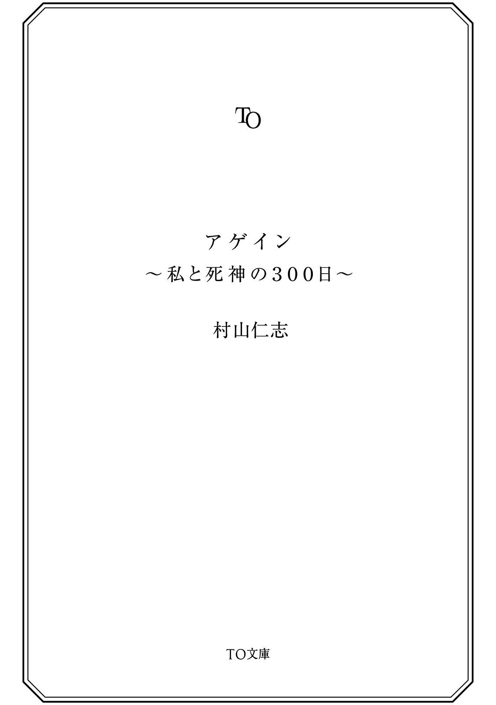

| アゲイン～私と死神の300日～ (TO文庫) | |
| 村山仁志 | |
| (2015) | |
もし、目覚めると自分は死んでいて、どこの誰かもわからなくなっていたら!? 彼女がまさにそうだった。どうやら自分は、元ＯＬの幽霊らしい。しかも、冷酷無比の美しい死神から、魂が消えるまで残り300日だと宣告される。何もわからないまま消滅したくない！ 仕事、家族、恋人――人生を取り戻す孤独な旅が始まった！ やがて、その強い思いが奇跡を生み出す。胸が締め付けられる、感動のファンタジック・ミステリー！
カバーイラスト：くろのくろ
カバーデザイン：川谷康久（川谷デザイン）

アゲイン 〜私と死神の３００日〜
真夏の夕暮れ──。
金属と金属がぶつかる激しい音が、都会の交差点に響いた。
アメリカンタイプのオートバイが乗用車の下敷きになり、傍 らに男が倒れている。渋滞の車列をすり抜け、スピードを出していたバイクが、交差点を右折しようとした車と激突したのだ。
路上に投げ出されているのは、紫色の派手なシャツを着た若者だった。黒いヘルメットを被った首が、不自然な角度に折れ曲がっている。
倒れた体から、古いフィルムの二重写しのように同じ姿の男が起き上がった。ヘルメットは被っていない。短く刈り込んだ金色の髪が夕陽に照らされた。
彼は足下の自分自身を見て、パニックに陥り──やがて自らの「死」に気づくと、その場に立ち尽くした。
事故の現場に詰めかけた見物人たちの中に、異様に背の高い男がいる。
相当な大男だ。周囲の人垣より頭ひとつ分以上高い。真夏だというのに分厚い漆黒のコートを纏 っており、目深に被ったフードで顔は見えない。だが、奇妙な身なりの巨人を気にする者は誰ひとりいなかった。
大男が軽く右手を振ると、若者の後ろに直径二メートルほどの穴が現れた。まるで空間をそのまま切り取ったかのような、不自然な穴。穴の中がどうなっているのかは、暗過ぎて見えない。
野次馬 たちは、突如現れた穴に興味を示さなかった。
いや、そうではない。人々の目には、金髪の男の幽霊同様、大男の姿も黒い穴も、どれも見えていないのだ。
事故現場にようやく救急車が駆けつけた。
若者の幽霊が甲高いサイレンに気を取られた刹那 、巨人が滑るように道路に進み出た。長い両腕を伸ばすと、あっと言う間に若者を穴の中に押し込んでしまう。
黒い穴は、風船が弾けるような音を立てて消えた。
『............』
黒衣の男は地鳴りのような低い声で何かを呟くと、その場を立ち去った。
人混みを歩いていく巨人を振り返る者は、誰もいない。
ただ、ひとりだけを除いては。
──きゃあっ!?
横断歩道でトラックにホーンを鳴らされ、口から心臓が飛び出しそうになる。
思わず睨 みつけたけれど、フロントウインドウに朝の太陽が眩しく反射して、無神経なドライバーの顔は見えなかった。
歩行者用の信号が点滅しているのに気づき、慌てて走る。ヒールの低いパンプスで良かった。地下鉄出口の階段から人波が溢れてくる。押されるようにビジネス街の歩道を歩き、次の交差点に辿りつく。
まだ朝だというのに、猛烈なエネルギーに満ちた直射日光が照りつけている。
道路を埋め尽くす車のボディは陽射しでギラギラと光り、歩道を行く人々は溜息を漏らす。街路樹 ではアブラゼミの大合唱。地球から一億五千万キロも離れているはずの太陽は、まるで都会の喧騒 さえも焦がそうとしているかのようだ。
冷たい汗が背中を滑り落ちた。これでフラストレーションが溜まらない人間なんているはずがない。まだ出かけたばかりだけど、今すぐシャワーを浴びたくなる。
しかし今日は、乱暴なトラックや酷暑 にゲンナリしている場合ではないのだ。
なんたって特別な日なんだから。愛する家族も待っている。
それに......
信号が青に変わり、「とおりゃんせ」のメロディとともにスーツの一群が動き出す。急いで渡らないと、またホーンを鳴らされてしまうかもしれない。
──あれ？
一歩道路に踏み出したところで、わたしは首を傾げた。
わたし、「どこ」へ向かってるんだっけ？
二、三歩歩いて、立ち止まる。
一緒に横断歩道を渡り出した一群は、わたしひとりを残して、どんどん道路の向こう側へ遠ざかっていく。
ていうか「ここ」どこ？
大急ぎで周囲を見回した。
知らない街角だった。
ガラス張りのビル街も、ラッシュアワーの広い道路も、信号機に書かれた交差点の名前にも、さっぱり心当たりが無かった。さっきまで当たり前のように歩いていたのに、気がつくと、見たことも無い風景がよそよそしく広がっているばかりだった。
頭の中に大きな違和感が育っていく。
わたしは「何故」ここにいる？
わたしの「家族」って？
今日は「特別な日」？
最後の「それに」......って、なんだったっけ？
そして、もっと深刻なことに気がついた。
──わたしは「誰」？
信号が変わった。
まだ横断歩道にわたしがいるのに、車の群れがスタートした。
先頭のタクシーが交差点を越え、加速しながら走ってくる。ブレーキを踏む気配など、微塵 も感じられない。
ぶつかる！
わたしはパニックを起こし、喚 き声を上げながら、とっさに両腕を前に突き出した。
驚くべきことが起こった──。
いや、正確には何も起こらなかった。
タクシーは、わたしをはねることなく、あっさりと「通り抜けて」いったのだ。
それどころか後続の車たちも、わたしの体を次々と通過していく。
例えると、遊園地のアトラクションや映画の３Ｄ映像のような感じ。「そこにあるようにしか見えない」のに、手を伸ばしても触れることが出来ない不思議な感覚。
もちろんこんなこと、「現実」にはあり得ない訳で。
歩道へ戻ると、大勢の人々が静かに信号を待っている。
わたしのことなど、誰も気にしてはいない。人々の足下に朝日の影が長く伸びているが、わたしの足下には影が無いことに気づく。
二十代前半くらいのＯＬの真ん前に立ってみた。
無反応。
間近に見つめると、陽射しに光る汗や産毛 まで、はっきり確認することが出来た。
信号が変わり彼女が歩き出すと、わたしにぶつかることなく陽炎 のように通り抜けていく。車たちと同じ──。
つまり、わたしは今、透明人間や幽霊のような存在なのだ。
凄 い。
こんなリアルで面白い「夢」、滅多 に見られるもんじゃないわ。
自分の勤め先を忘れたり、家族や自分自身のことを思い出せないことも、夢だったらよくあることだ。夢と言うのは基本的に不条理で、思い通りにならないものなのだから。
だけど。
これが単なる夢じゃないことに気がついたのは──。
いつまでたっても、「目が覚めなかった」からだ。
夕方。
再びラッシュアワーが始まっていた。
真夏の太陽は西に傾き、ガラスの巨人のようなビル群を、オレンジ色に染め上げている。
わたしは夢から目覚めることなく、見知らぬ都会の交差点に立ち尽くしていた。
どんな夢でもいつかは醒めるはずなのに、この夢は醒めない。いつまで待っても醒めない。醒める兆候すらまったく無い。なす術が、無い。
目が覚めない理由は何だろう。
例えば......突然の事故か病気で、肉体が昏睡状態に陥り、意識が悪夢から抜け出せなくなっている、とか。ありそうな話じゃないの。
だけど、この夢。
足下を見る。踏みつけられたタバコの吸殻。砕けたガラスの欠片。舗道の隙間から生えた、カラカラに乾いた雑草。わたしの白いパンプス。影の出来ない、わたしの靴......。
この夢、ちょっとリアル過ぎるんじゃない？
信号待ちのサラリーマンが背中を丸め、タバコに火をつけた。ゆっくり煙を吐き出す。汗でワイシャツが背中に貼りついている。
わたしは、まったく汗をかいていない。
朝は確かに「肌に陽射しを受け、汗もかいていた」と思うのだけれど、今はほとんど暑さを感じない。まったく感じていない訳ではないが、薄いビニール越しに仄かに熱を感じているような、もどかしい感覚。
風に乗ってハンバーガーの包み紙が飛んできた。それで初めて、朝から何も口にしていないことに気づいた。もう夕方なのに、全然お腹が減っていない。
きっと夢だからだ。
いや。
ひょっとして、違うのかもしれない。
これは、夢じゃなくて。
トラックがホーンを鳴らした相手は、実はわたしじゃなくて。
わたしは、周りから見えない「幽霊のような」存在じゃなくて、むしろ......。
それ以上のことを考え、認めるのには、とても勇気が必要だった。
顔を上げると、銀行のショーウインドウにわたしが映っていた。
影は出来ないけれど、ガラスや鏡には自分の姿が映る。ガラスの中に、背の高いＯＬが佇んでいた。不安げな表情だけど、血色は良く、見るからに健康そうだ。
どう見たって、生きてる人間じゃないの。
だけど。だけれども。
『あのう！』
わたしは道行く人々に、手当たり次第に話しかけた。
『すみません、待ってください！』『わたしの声、聞こえますか？』『これは夢なんでしょうか？』『わたしは一体、誰なんでしょうか？』『何故ここにいるんでしょうか？』『わたしが見えるひとはいませんか!? 』『誰か......』
こんなに大勢歩いているのに、誰ひとりとして立ち止まってくれるひとはいなかった。人々はわたしを避けずに、わたしの体を通り抜けていった。
いよいよ、もう認めざるを得なくなった。
誰からも見えず、声も聞こえず、車もひとも通り抜けることが出来て、足下に影も出来ず、暑さも感じない、お腹も空かない。それは、つまり。
何てこと。
わたしは跪 き、ガックリと肩を落とした。いくつも揃った状況証拠は、はっきりと「たったひとつの結論」を導き出していた。
これは、夢じゃない。わたしは......。
ＯＬの集団が大きく笑いながら、後ろからわたしの体を次々と通り過ぎていった。女の子たちの背中を呆然と見送りながら、わたしは「その事実」を強く意識した。
間違いない。
──わたしは、幽霊だ。
実体の無い立体映像の夢を見ているのではなかった。事実はその逆で、わたし自身が実体の無い存在だったのだ。
だけど。
わたしが幽霊なら、何故死んで、何故ここにいるの？
そもそもわたしは「誰」？
よろよろと立ち上がり、ガラスに映る自分の姿を見る。
見た感じは、いわゆるＯＬ。キャリアウーマン風。
年齢は、二十代前半から半ばくらい。身長は百七十センチ弱？ 女性としては背が高い方だろう。やや茶色い髪は肩より長い。
淡いグレーのスーツに、白いシャツ。首には水色のスカーフ。足下は白いパンプス。
ハンドバッグは提げていない。指輪は、はめていない。ペンダントなどのアクセサリー類も着けていない。ポケットは空っぽ。
唯一、左手には時計をしている。アウトドア仕様の大きめの腕時計で、アナログとデジタルのコンビネーションモデルだ。針は午前八時十八分を指して止まっている。ちょうど今朝、交差点を渡っていたぐらいの時間じゃないだろうか。
中央部の液晶画面は、日付表示になっている。「七月××日」。近くのビルの電光掲示板を見ると、その一ヶ月後の日付が表示されていた。いずれにしろ、どちらの日付からも思い出せることは無い。
要するに、自分自身が誰なのかを知る手がかりは、ほとんど無いのだった。
わたしは、幽霊。しかも記憶喪失の......。
覚えている（いた）のは「今日が特別の日」ということと、「愛する家族がいる」ということ。「それと」......そこから先は思い出せない。
ちなみに記憶喪失と言っても、例えば「日本の首都は東京」とか「オリオン座は冬の星座」といった、一般常識的なことは覚えている。だが、自分自身のことになると、さっぱり記憶を辿ることが出来なかった。
一方、わたしが割と冷静でいられるのは、記憶が無いおかげかもしれない。自分のことを第三者の視点で見ているから、客観的な観察と分析が出来ているのだろう。
そうは言っても、わたしは完全に途方に暮れていた。
この先、どうすればいいのだろう？
映画とか小説ではこういうタイミングで、守護霊とか天使とか悪魔とか、水先案内人みたいなのが出てきて、死後の世界へ連れて行ってくれたりするもんだけど。
周囲を見回しても、それらしき姿はまったく見当たらない。ごくごく当たり前の都会の街並みが広がるばかりで、歩いているのも普通のひとたちばかり。天使や悪魔のようなオカルト的存在が出現するような怪しい雰囲気は、まるでない。
あるいは......自力で成仏でもすればいいのかしら。
でも、そもそも成仏ってなに？ 仏に成る？ 天国へ行くってこと？ 肝心の成仏をする方法が分からない。
思うに、普通はどんな幽霊だって、人生への満足感や達成感、あるいは後悔や他人への恨みつらみなど、何がしかの感情を持っているのが当然だと思う。きっと前向きな魂は天国へ行き、逆に後ろ向きな魂は地獄に落ちたり、誰かを祟 ったりするに違いない。
しかしわたしには記憶が無いから、人生への感慨も誰かへの怨念もまったく持ちようがなく......つまり、行動の起こしようがないのだった。
いつの間にか日が暮れていた。
暗くなっても、歩道の隅々の細かい部分まで、はっきりと見ることが出来た。幽霊の視界ってことなのだろうか。
昼間は存在を意識していなかった街灯に、明かりが灯る。歩道を歩く人影がまばらになり、ヘッドライトの群れが車道を行き交う。
わたしは自分の手がかりを探して、トラックにホーンを鳴らされた交差点と、自分が記憶喪失であることに気づいた交差点の間を、何度も行ったり来たりした。
途中、深夜勤務らしき人々や酔客とすれ違った。
話しかけても返事の無い、名も知らぬ孤独な人々。だが、彼らにはわたしと違い、帰るべき家があるのだった。
わたしには、何も無い。
帰る家どころか、名前すらも無い。
無意味な、無価値な、ゼロという存在──。それが、わたし。
『う......』
圧倒的な孤独感に襲われ、思わず立ち止まる。
わたしは口元を両手で押さえて、喚き散らしそうになる自分を何とか抑え込んだ。
ここで感情を爆発させたら、取り返しがつかないことになるような気がした。今こうして「思考している自分」という存在すら、砕け散ってしまうような。
『......歩こう、か』
自分自身に話しかけるように呟く。
今のわたしに出来ることは、ただ歩くことだけだった。
時折車のヘッドライトが照らし出す暗い夜道を、ひたすら歩き続ける。
孤独はどこまでも一緒についてくる。
都会を覆う夜のとばりは、わたしの存在そのものさえも覆い隠していくようだ。
ふと、ひとつの言葉が頭をよぎった。
──コギト・エルゴ・スム。
我思う、故 に我あり。デカルトの言葉だっけ......。
歩きながら、そんなことだけは思い出す。
難しい言葉を思い出しても、その言葉を「何故」知っているのかは思い出せないのが、歯がゆいのだけれど。
それにしても、デカルトは哲学者だけあって、上手いことを言ったと思う。
確かに今ここに「考えているわたし」がいるのだから、「わたしが存在すること」だけは間違いない。たとえわたしが肉体を持たない幽霊だとしても。それだけは間違いない──はずだ。
間違いない、間違いない、と何度も自分に言い聞かせる。そうしないと、心が壊れてしまいそうだった。
わたしは、「わたしは考えている」「わたしはここにいる」「だからわたしは存在する」とひたすら呟きながら、一晩中、交差点間の往復を続けた。
幽霊の体は睡眠を必要としないらしく、わたしは文字通り、まんじりともせずに最初の夜を明かした。独 りきりの眠れない夜はとてもとても長かったけれど、結局手がかりは何も見つからなかった。
二日目の朝を迎えた。
状況から考えて、この辺りは、わたしの「勤め先の近く」だろう。
だったら歩行者の中に、会社の同僚や顔見知りがいる可能性が高いはず。
歩道を行く人々をじっくりと観察する。老若男女問わず、それこそ目を皿のようにして。
だけど、丸一日費やしても収穫は無かった。誰ひとりとして、わたしが知っている顔は見つからなかった。
三日目。
腕時計を見る。やはり針は動かず、デジタル表示の日付も変わっていない。だが、付近のビルの電光掲示板と見比べることで、「自分が目覚めてから何日経ったか」だけは分かる訳だ。
今日は目覚めた交差点から足を伸ばし、わたしの勤め先を探すことにする。
唯一見慣れた場所を離れるのには、かなりの勇気が必要だった。「遠くまで行くことで、目覚めた交差点のことを忘れてしまうのではないか」という恐怖心がつきまとうからだ。
しかし、同じところに留まっていたって何の進展もないのは明らかだった。
恐る恐る歩き回ってみたところ──わたしはＦ県の県庁所在地、Ｆ市の中心部にいることが分かった。Ｆ市は人口百五十万人を超える、九州一の大都市である。
とはいえ。たとえ場所が分かったところで、「Ｆ」という地名も、やはりわたしにとっては「一般常識」以上の意味は持たなかった。地名から思い出せることは、何も無かった。
一方、わたしが目覚めた交差点付近には、私鉄の駅と地下鉄の駅、複数のバス停があることも分かった。生前のわたしは、そのどれかを日常的に使っていたのではないだろうか。
だとすればわたしの職場は、それぞれの駅やバス停を中心とした円内の、どこかにあるに違いない。
大きなビルが並ぶビジネス街だから、捜索範囲はかなり広い。ひとつひとつのビルの、一階から最上階までにあるすべてのオフィスを、丹念に見て回る。事務所の雰囲気、間取り、机の上のファイル、ホワイトボードに書かれた営業マンの行き先や会議のスケジュール、給湯室や更衣室、トイレまで......わたしの記憶を喚起する手がかりがないか、徹底的に観察する。
目覚めた場所を離れても、その記憶を失うことはなかった。不安が杞憂だったことに、わたしは胸を撫で下ろす。
それでも夜遅くなると、わたしは必ず最初の交差点に帰った。今のわたしは休息の要らない体だったけれど、記憶を失い、世界でひとりぼっちのわたしにとって、帰る場所があることはとても重要だったのだ。
すべての建物を見て回るのに、一週間を要した。
だが、収穫は何も無かった。
十日目。
突然、目の前に女のひとが落ちてきて、コンクリートの舗道 に頭から叩きつけられた。一緒に落ちた麦藁 帽子が足下に転がる。
予想外の出来事に、無いはずの心臓が止まりそうなくらい驚く。
──自殺？
目の前の大きなデパートから飛び降りたらしい。白いワンピースの体はくの字に折れ曲がり、動く気配はまったく無い。顔は見えないが、明らかに即死だった。赤い血溜まりがゆっくりと広がっていく。
たとえ自分が幽霊であっても「ひとが死ぬところ」を間近に見て、足がすくんでしまう。胃の中には何も入っていないのに、吐き気を催した。目の前の無残な情景から、どうしても目を逸らすことが出来ない。
一体何があったのだろう。命と引き換えにしてもいいくらいの、深い悲しみや絶望があったのだろうか？ あんな高いところから足を踏み出す程の理由が。
──わたしなんか、生きたくても生きられないのに。
いや、違う。わたしは自分の死因を知らないだけだ。実は覚えていないだけで、わたしだって自殺したのかもしれない。責める資格なんか、わたしには無いんだ。
遺体に手を合わせる。
──安らかにお眠りください......。
そのとき、ふたり連れの主婦がわたしの前を笑いながら通り、血溜まりの中に足を踏み入れた。足下の遺体には目もくれずにそのままデパートに入っていく。
──どういうこと？
まさか。見えてない、の？
わたしは、大きく息を吸い込んだ。幽霊のわたしだけに見えて、生きているひとたちには見えていないってことは......ひょっとして。
心臓が大きく高鳴る。
わたしは恐る恐る女性の遺体に近づき、膝をついた。うつ伏せに倒れているので顔は見えない。足は怪我をしておらず、靴は履いていなかった。
『あの......だ、だいじょうぶですか？』
わたしは上ずりながら、何日かぶりの声を出した。
遺体に話しかけるだなんて、正気の沙汰じゃない。目の前の女性は、絶対に助からないと確信出来る、凄惨な死に方をしていた。意識などあるはずがないのだ。このときのわたしは、自殺を目撃した衝撃と、初めて自分以外の幽霊らしき存在に出会ったことで、気が動転していたのかもしれない。
『あの......き、聞こえますか？』
何度呼びかけても、女性の遺体は微動だにしなかった。
それはそうだ。たとえこの世のものではないとしても、遺体は遺体に違いなかった。話しかけること自体意味が無いし、「不謹慎な行為だ」と、わたしは思い知った。
──本当にごめんなさい。どうぞ安らかにお眠りください......。
『ひ......っ!? 』
再び手を合わせた途端、わたしは声にならない悲鳴を上げて尻餅をついた。
何の前触れも無く、遺体が無造作に起き上がったのだった。女性の顔は上半分が完全に潰れていた。本来は顔についているべき色とりどりのパーツが、ひしゃげて顎 の辺りまで垂れ下がっている。だが、驚くのはまだ早かった。
目の前ですべての器官が、じゅぽじゅぽと湿った音を立てながら、いっせいに元の位置に戻っていく。「完全に壊れていた」女性の顔は、みるみるうちに、飛び降りる前の状態（と思われる顔）に修復されてしまったのだ。
十代後半の線の細い女の子が、何事も無かったかのように立っていた。
ついさっきまで彼女が死体だったとは、とても信じられない。やや顔色が悪く、神経質そうな顔つきではあるけれど──何も知らなければ、彼女と街ですれ違っても、まさか「死んでいる」とは誰も気づかないだろう。もちろん彼女の姿が見えれば、の話だけれど。
わたしは、初めて出会った「自分以外の幽霊」を呆然と見上げた。あまりの出来事に、頭の整理が追いつかない。
『あ、あのう。だ、大丈夫ですか？ い、痛くないんですか？』
女の子はわたしの問いかけには答えず、ワンピースを両手で軽くはたいた。麦藁帽子を拾い、目深に被る。無表情な顔が一瞬だけ歪み、切れ長の瞳から涙が零 れ落ちた。そのままデパートの入り口へ歩いて行く。さっきまで裸足だった両脚は、白いサンダルを履いていた。足下に影は出来ていない。わたしと同じだ。
『す、すみません！ 待ってください！ 何か悩んでるなら、わたしに......』
脇目も振らずに歩いていく女の子を、わたしは慌てて呼び止めようとしたが、結局彼女は一度も振り返らず、デパートの中に入って行った。
わたしは大きなショックを感じていた。
何故、無視するんだろう？ それとも、あんまり思い詰めていたせいで、わたしの声が聞こえなかったのかしら。
めげずに彼女の後をついて行けばよかったと後悔しているうちに──いつの間にか、彼女がデパートの屋上に立っていることに気がついた。
女の子の幽霊は金網を乗り越え、外側に立っていた。夏の青い空に、白いワンピースが殊更爽やかに映えている。彼女はサンダルを片足ずつゆっくりと脱ぎ、足下にきちんと揃えて置いた。
まさか。
女の子の幽霊が両手を合わせ、目の前の空間に倒れ込んだ。
『やめてーっ！』
叫ぶわたしの眼前に、彼女は頭から落ちて来て、もう一度即死した。わたしは猛烈な吐き気を催し、四つんばいになってえずいたが、口からは何も出てこなかった。
数分後、惨たらしい遺体はわたしの目の前で再び「元通り」になり、帽子を被って涙をこぼした。最初に見たときと、そっくり同じ動き......ということは。
予想通りデパートへ歩き出した彼女に、わたしは今度こそ大声で話しかけた。
『待って！ わたしの話を聞いて！』
彼女は止まらなかった。わたしは隣りを歩きながら、自殺を思い留まるよう、必死で説得した。だが彼女はわたしの言葉にはまったく耳を貸さず、階段で屋上に昇ると金網を乗り越え、外側に立った。サンダルを脱ぎ、両手を合わせる。
『やめてっ！ あなたはもう、死んでるのよっ！』
伸ばしたわたしの指先は、倒れ込んでいく少女の体を何の抵抗も無くすり抜け──彼女は遥か下のコンクリートに激突した。
わたしは屋上に座り込んだ。言葉にならない懊悩 が込み上げてくる。本当は泣きたかったけれど、涙は出なかった。数分後、呆然と座っているわたしの前を、また女の子の幽霊が通り過ぎ──わたしの制止を振り切って、屋上から飛び降りた。
何故、彼女は「もう死んでいる」のに「また死ぬ」のだろう？
女の子の幽霊は死んだり蘇 ったりを、数分おきに繰り返し続けた。わたしは自殺を思い留まるよう、必死で説得し続けた。だが彼女は一切、取り合わなかった。
いや、違う。
ひょっとして女の子には、わたしが見えず、わたしの声が聞こえていないのでは？ そして彼女は、自分が「死者である」ことに気づいていないのではないだろうか。
飛び降り、蘇る度に、彼女の記憶がリセットされているとしたら。
何度も自殺し続ける幽霊。だけど彼女は、蘇る度に涙を流している。悲しみ、苦しんでいる。終わりの無い、永遠の繰り返し。賽 の河原なんてもんじゃない。積み上げ、崩されるのは自分の命なのだ。これこそまさに、地獄そのものだった。
十数回目の説得の後、わたしはようやく諦めて、その場を立ち去ることにした。
コンクリートに彼女が叩きつけられる音が背中で聞こえた。けれど、もう振り返らなかった。
十二日目。
注意深く街を観察すると、わたし以外の幽霊も、実はたくさんいることが分かった。わたしからは「生きている人間」も「死んでいる幽霊」も、どちらも同じように見えていたので、これまで気がつかなかったのだ。
幽霊の特徴としては、いかにも「亡者らしく」顔色が悪く、表情も冴えないことがある。まあ、とりあえず死んだから幽霊になった訳だし、当然と言えば当然だと思う。楽しげな幽霊というのもいないだろうし。
一方、生きていても顔色が悪く表情の冴えない人間というのも、割とたくさんいる訳で。結局、生きている人間と幽霊を見分ける一番の決め手は、足下に影が「ある」か「無い」かを確認するという、単純明快かつアナログな方法だった。
幽霊たちは、大きく三つのタイプに分けることが出来た。
まず、「自殺を繰り返す少女の霊」のように、ある一定の場所から動かないタイプ。
次に、わたしと同じように街を彷徨 っているタイプ。
最後に、誰か特定の人物の背後に取り憑いているタイプの、三種類である。
それぞれ、夏の怪談話でよく聞くところの「地縛霊 」に「浮遊霊 」、そして「背後霊 」ということだと思う。
わたしは自分以外の幽霊に出会う度に、何とかコミュニケーションを取ろうと試みた。たとえ相手が陰鬱 な顔をした幽霊だろうと、事故や犯罪でむごたらしい姿になった死体だろうと──とにかくわたしは、話し相手が欲しかったのだ。
しかしコンタクトは、いずれも失敗に終わった。
こちらからは相手の姿が見えていても、わたしの姿が見え、わたしの声が聞こえる幽霊には、ついにひとりも出会うことがなかった。常に、わたしからの完全な一方通行だった。
どうやらわたしは、生きている人間どころか、死んでいる幽霊とも触れ合うことが出来ない、中途半端な存在のようである。
ちなみに他の幽霊たちは、互いの姿はまったく見えていないようだ。
というより、彼らは「自分以外に興味が無い」というのが、本当のところなのかもしれない。
街で見かける幽霊たちは、ほぼ例外なく激しい表情を浮かべている。誰かをひどく憎んでいたり、深刻な悲しみの中に溺れていたり、心を引き裂くような後悔の念に苛 まれていたり──それぞれが抱えている想いはとても強いのだけれど、その分視野は狭く、思考が硬直化しているように思えた。
つまり彼らは「自分の殻」の中に閉じこもり、延々と同じことばかりを考え続けているのだった。
わたしのように「自由に」ものを考えている幽霊には、ついに出会わなかった。
理由は、やはり分からない。
二十日目。
「わたしの姿を目で追う赤ちゃん」が存在することに気づいた。
中には、話しかけるとわたしの声に反応を示す子も存在した。これは（多分）子ども好きのわたしにとっては、かなり嬉しい発見だった。
だが残念なことに、会話が成り立つ年齢を過ぎて、わたしの姿を見たり声を聞くことが出来る子どもには会えなかった。
言語能力の発達と霊能力（？）には、大きな関係があるのかもしれない。
二十三日目。
初めて《奴》を見かけた。
《奴》は、わたしの目の前で命を落とした男性の霊を、あっという間に、不気味な穴の中に引きずり込んでしまった。
《奴》は、わたしと同じ、肉体を持たない霊的な存在のように見えた。
だが《奴》は、わたしたち幽霊に災厄しかもたらさない──と、わたしは直感した。
《奴》は幽霊にとっての、いわば「天敵 」なのだ。
わたしは、その事実に戦慄した。
以降、わたしの自分探しは、《奴》を注意深く避けながら行うこととなった。
いつか《奴》について、詳しく語る日が来るのかもしれない。
ずっと《奴》と無関係でいられたら、それに越したことはないのだけれど。
その姿を思い浮かべるだけでも、《奴》を呼び寄せてしまうような気がして、身が震えるほどなのだから。
だから今は、《奴》の話はしない。
──どうか、《奴》と関わり合いにならずにすみますように。
心の底から、そう願わずにいられなかった。
そして──。
時が過ぎ、七度目の夏が来た。
疲れを知らず歳も取らない幽霊にとっては、六年という歳月は長いようでもあり、また、短いようでもあった。
まだ見ぬわたしの「愛する家族」は、今、どこで何をしているのだろうか？
わたしは、結婚はしていたのだろうか？
そんなことさえまだ分からない。
結婚指輪はしていないけれど......もしも結婚していたなら、小さい子どものひとりくらいはいたのかもしれない。
「生きている人間」にとっての六年間は、相当に長い年月だ。生まれたばかりの赤ちゃんは小学校に入学するし、小学生だった子は中学生か高校生になっている。
家族は、もうわたしのことなど忘れてしまっただろうか。それとも、時々は思い出してくれることもあるのだろうか。
もちろん、たとえ忘れてしまっていたとしても、記憶を失い、家族のことを何も覚えていないわたしには、責める資格などないのだけれど。
わたしは相変わらず、自分探しを続けていた。
「生前の職場探し」が空振りに終わった後、捜索対象は「自宅と家族探し」に変わっていた。六年の間に、捜索の範囲は徐々に広がっていき──現在では、電車で一時間以上かかる街まで足を伸ばすようになっていた。
一昨日からは、都市部から伸びる私鉄線から途中で枝分かれした、ひなびたローカル線の駅を訪れている。
古めかしい木造の無人駅だが、通勤・通学客でごったがえす朝は、改札口に駅員がいる。最寄の大きな駅から毎朝、臨時で駆けつけるようだ。ラッシュアワーを過ぎれば、駅に停車する列車は一時間に一本程度しかないので駅員は必要無くなり、無人駅に戻る。
駅の南側には、のどかな田園風景、北側には小さな駅とは不釣合いな規模の住宅街が広がっていた。近年、急速に野山が切り開かれ、ベッドタウンとして開発が進んだのだろう。
感じの良い住みやすそうな町だったけれど、この町でも、わたしの記憶を刺激するものは、何ひとつ見つからなかった。
もう一度だけ朝のラッシュを観察し、見知った顔が無ければ、次の駅に移動することにする。
わたしはこのようにして、六年間で二百以上の駅やバス停を訪問し続けているのだ。そろそろ旅のガイドブックでも書けそうな感じだけれど、もちろん幽霊をライターに雇ってくれる出版社など存在しない。
時刻表の上の丸時計を見る。朝の七時。
いつものように自分の腕時計も見る。いつもと変わらず、七月××日の午前八時十八分。
今日は、時計表示と同じ日だ。
つまり、わたしがあの交差点で目覚めた日の、ちょうど一ヶ月前ということになる。記憶の無いわたしにとっては、数少ない「意味のある（ありそうな）日」のひとつだ。どんな意味があるのかは、相変わらず分からないのだけれど。
砂を噛むような年月の中で、時計表示の日と目覚めた日、ふたつの日付に寄せる期待もすっかり色褪せてしまっていた。いつの間にか、自分探しの旅も「作業」と化していたが、他にやることもないというのが正直なところでもある。
──まあいいわ。我思う、故に我あり、よね。
何千回、何万回も唱えた言葉。
駅のホームはまだ早い時間帯にもかかわらず、快速電車で都市部に向かうサラリーマンや高校生たちで混み合っている。夏の太陽が眩しく照りつけ、蝉 時雨 が騒がしい。すでに誰もが額に汗をかいていた。
そうした中、わたしはひとりのサラリーマンに目を留めた。
記憶喪失のわたしだけれど、彼には見覚えがある。
と言っても、特別なことじゃない。ある街で気になった人物を、後日、別の街で見かけるというのは時々あることだ。
六年前、わたしが目覚めた交差点の近くで、彼を見たことがある。たった一度見かけたきりだけど、路上で部下を庇い、取引相手（？）に一生懸命頭を下げている姿が印象的だった。
このひと、こんなところから通ってたんだ。
随分遠くまで来たと思っていたが、これであの交差点とは「線」でつながった。案外、わたしの地道な調査法は的を射ているのかもしれない。
実りの無い流離 いの日々の中でも、時々はこういう成果もあるということだ。
彼の年齢は三十代後半から四十代前半。少し痩せ型。取り立てて特徴はないけれど、何となく「寂しそうなひと」だと感じた。グレーのスーツに、ストライプの入った紺のネクタイを締めている。隣りに立つと、推定身長百七十センチ弱のわたしよりも、少し背が高かった。
しかし今気がかりなのは、彼がホームの白線上で眠っていることだ。
黒いブリーフケースを肩から斜めにかけ、資料が山ほど入った紙袋を両手に提げている。夜遅くまで自宅で作業をして、ほとんど寝ていないといったところか。
ホームの端で立ったまま熟睡し、ゆらゆら揺れている姿は危なっかしくて、わたしをはらはらさせた。たとえ自分が死人でも、誰かが列車にはねられるところなど見たくない。
列の先頭に立っているせいか、後ろに並んでいる他の通勤客は、彼が眠っていることに気づいていないみたいだ。
銀色の快速列車が、豪快なスピードでホームに入ってくる。彼は熟睡したまま、絶妙なタイミングで大きく体をのけぞらせ、危ないところで列車に接触せずに済んだ。わたしはホッとして、大きく息を吐き出した。
だが、目の前に列車が停まりドアが開いているというのに、サラリーマンは目を覚まさなかった。
他の通勤客は、彼を避けながら次々と列車に乗り込んでいく。このままでは彼だけを残して、列車が出てしまう。出発を報せるベルが鳴り響いた。
わたしは思わず彼の耳元で、
『起きて！ 列車が行っちゃうわよ！』
と大声で話しかけ──自らの言葉を虚しく感じた。どうせ聞こえるはず無いのに。
ところがサラリーマンは目をパッチリと開き、
「ご、ごめん！」
と口走った。
そしてはっとした表情で周囲を見回すと発車のチャイムに気づき、慌てて列車に乗り込んだ。ドアが閉まった後も、彼は窓越しに不思議そうにホームを見つめていた。
一方、ホームに取り残されたわたしは彼以上に驚いていた。実際には無いはずの心臓が、胸で大きく高 鳴 る。
わたしの声が、聞こえた？
あのひと、今、わたしに、返事をした？？？
いや──ひょっとしたら、彼は寝ぼけていただけなのかもしれない。列車が出るタイミングで偶然目を覚まして「夢の会話の続き」を口走っただけなのかもしれない。
けれど。けれども、よ。
偶然にしては、ちょっとタイミングが良過ぎるんじゃない？
わたしは興奮し、誰もいなくなった駅のホームを歩き始めた。歩きながら足下に目を落とし、途切れ途切れの白線を数える。次第に早足になり、数え方も早口になり、最後はついに駆け出してしまう。
やっぱり、あれは会話だった！ 短かったけれど、確かに会話になっていた！
この六年間で、初めての会話！
わたしはホームの一番端で立ち止まった。
いや。違うかもしれない。
違う可能性の方が、高いのかもしれない。
やっぱり、ただの偶然か、勘違いなのかもしれない......冷静に考えれば、多分そうだろう。
わたしは逸る心に、自らストップをかけた。焦るのは良くない。
もちろん、わたしに選択の余地などありはしない。まずは、あのサラリーマンにわたしの声が本当に聞こえるのか否か、じっくりと検証する必要がある。
と、ここでわたしは、大失敗をしでかしたことに気づいた。
さっきわたしは、衝撃のあまり彼と同じ車両に乗り込むことなく、ホームに立ちつくしたまま、呆然と電車を見送ってしまった。目の前に現れた大きなチャンスにただ驚き、喰らいつくこともせずに、みすみす逃してしまったのだ。
幽霊のわたしだけれど、走る電車に追いつけるような移動能力はない。わたしが出来るのは、せいぜい壁を通り抜けたり、ゆっくり宙を漂うくらいのものだ。
彼の後を追いかけるには、次の快速電車が来るまで待たなければならなかった。時刻表を見ると、今度はちょうど一時間先である。
しかし仮に電車に乗って追いかけたとしても、彼の行き先が分からない。
恐らくあの交差点周辺のオフィスビルの、「どこか」で働いている可能性が高いが、範囲はかなり広い。六年前、ひと通り見て回るだけでも一週間かかったのだ。
彼を追いかけて行っても、周辺を探している間に帰宅時間になり、すれ違いを起こしてしまうかもしれない。それでは元も子もない。
──何で一緒に電車に乗らなかったのよ......。
悔やんでも後の祭り。冷静に考えると、結局、彼が帰宅するのをこの駅でじっと待っているのが、彼にもう一度会える一番確実な方法と思えた。
──ま、いいか。
わたしは、あっさり気持ちを切り替えた。
どうせ時間はいくらでもあるし、待つことだけは慣れているのだから。
朝から昼になり、やがて陽が傾いていく。
夕方のラッシュアワーを過ぎると、夏の長い陽が落ちて薄暗くなった。虫の鳴き声が、騒がしいセミから草原の虫たちに変わる。
もう、すっかり日が暮れた。
あのサラリーマンはまだ帰ってこない。
駅の照明はいくつかの水銀灯が光る侘しいものだったが、その代わりに屋根の無いホームの上空には、素晴らしい星空が広がっていた。
わたしは、久しぶりに天の川を見た気がした。それがどれくらいぶりなのか、肝心の記憶が無いのだけれど。
真夜中近く、そろそろ終電車が到着する頃、ホームに女の子が歩いてきた。
ショートカットに赤いフレームの眼鏡をかけた、可愛い子だ。まだ顔に幼さが残っている。中学生だろう。白いＴシャツの上から、赤いギンガムチェックのシャツを羽 織 り、黒のデニムにデッキシューズがお洒落だった。天の川が見えるような田舎には、ちょっと似つかわしくない垢抜けた子。
こんな遅い時間に女子中学生が出歩くのは良くないよ──などと考えながら、わたしは女の子に寄り添う。
ホームの暗がりから、猫が姿を現した。茶色の縞模様、茶トラである。長い尻尾を得意げに立て、ゆらゆらと揺らした。尻尾を立てているのは、猫同士の挨拶の流儀だと、何かの本で読んだ。記憶は失っても、そういう雑学的な知識はよく覚えている。生前のわたしは猫好きだったのかもしれない。
「トラちゃん、おいで」
十代の少女らしい、透明感のある声だ。
しゃがんだ女の子の膝に猫が体をすり寄せ、傍らのわたしを見上げて一声鳴いた。幽霊の姿が見える犬猫には、時々出会う。わたしは、軽く右手を振って返した。
女の子は猫が鳴いた方向──つまり、わたしのいる辺りを不思議そうに見つめ、
「トラちゃん、何かいるの？」
と聞いた。
「トラちゃん......？」
移り気な猫は、いつの間にかどこかに行ってしまっている。女の子は立ち上がり、ホームの丸時計と駅の時刻表を見比べた。あと三分で終電車が到着する。わたしもつられて腕時計を見ようとしたところで、少女が声を上げた。
「あ！」
駅舎の上空を、大きな流れ星が横切っていった。
「ちぇ......速過ぎるよ。願い事を三回も言うなんて、絶対ムリ」
悔しげな女の子の横顔。この年頃の女の子の願い事って、一体何だろう。勉強のこととか、好きな男の子のことだろうか。わたしの中学時代はどうだったのかしら。
「ま、流れ星を見られただけでも、ラッキーだよね」
ショートカットの女の子は、にっこりと笑う。気持ちの切り替えが早い性格のようだ。髪型やファッションから見ても、活発なタイプなんだろう。
少女は首から提げた小さな金色のペンダントを触った。ロケットになっていて、写真が入っているようだ。女の子は軽くのびをして、歌を口ずさみ始めた。
切ない歌詞、知らないメロディ。
わたしが覚えていないのか、それとも死んだ後に流行った歌なのか。
悲しい曲を歌っているせいか、少女の横顔は少し寂しげに見えた。
真っ暗な線路の向こうに、白い光が眩しく輝いた。どんどん近づいてくる。終電車のヘッドライトだ。
甲高い金属音のブレーキとともに、鮮やかな黄色い列車が停まった。
ドアが開くと数人がホームに降り立ち、最後に、わたしが待ちに待ったあのサラリーマンが目をこすりながら降りてきた。車内で眠っていたのか、足下がやや覚束無い様子だ。よっぽど仕事が忙しいのだろうか、よく眠る人物である。
女の子の顔が一瞬で明るくなり、大急ぎでサラリーマンに駆け寄っていく。
「パパお帰りーっ！」
「小鳥 、迎えに来たのか？」
親子だったのか。彼の目が柔らかく微笑む。優しそうなパパだ。
女の子の名前は、小鳥ちゃん。
「あのな、小鳥」
父親が、少し真面目な表情で言う。
「迎えに来てくれるのはホントに嬉しいんだけどさ、女子中学生がこんな遅い時間にひとりで出歩くのは......って、ちょっと小鳥！ 待てよ！」
小鳥ちゃんは、父親が両手に持った紙袋を奪い取り、ずんずん先に歩いていく。
「だってパパ遅過ぎるよ！ 早く帰んないと、もうすぐ明日になっちゃうよ？」
「ごめんな......」
彼が頭を下げた。
「やっぱり早い時間に帰宅出来る部署に、もう一度戻してもらおうかなあ」
「そんなことじゃなくて！」
女の子がムッとした顔で言った。
「あたしは、パパがやりたい仕事をあたしの為に我慢するのはヤなの！ あたしだってもう中学生なんだから、パパが少しくらい帰るのが遅くなったって、平気だもん」
「でも......」
「そんなことより！」
少女は父親の言葉を遮った。
「あたし、パパがまた電車で寝ちゃって、終点まで行っちゃったんじゃないかと思って、心配してたんだから！」
「じゃあ、電話かメールすればいいじゃないか」
「したよ何度も！」
「え？」
父親がカバンからスマートフォンを急いで取り出した。透明な光が彼の顔を照らし出し、表情が変わった。
「ゴメン！ 今日は遅くまで会議で、その後は電車の中だったから......ずっと音を切ってたんだ！」
「それはエチケットだから、別にいいんだけど」
呆れた顔だ。
「バイブに気づくようにスマホは胸ポケットに入れた方がいいって、前にも言ったでしょ？ 最先端みたいな仕事してるくせに、ホント常識知らないんだから」
「はい......」
いちいち娘の言う通りである。父親も恐れ入った感じで、大人しく説教されていた。もはや、どちらが保護者なのか分からない。
「でもな小鳥。パパ、今日は大事な日だから、絶対に終電までに帰りますって、上司にガツンと言ってやったんだぜ」
「その調子で、毎日ガツンと言ってやんなよ」
「え。それはちょっと......」
彼は頭をポリポリとかいた。
あ......腕時計！
彼の腕時計、わたしのしてるのと、おんなじ時計だ。同じのって意外と見ないんだけど、どこで買ったんだろう？
これも、何かの手がかりになるかも。
ふたりの家は、駅の北側に広がる住宅街にあった。簡素だが、ベージュの壁がお洒落なアパートだ。
鉄製の階段を二階へ昇っていく。玄関には、金属製の表札に「萱瀬」と黒マジックで書いてある。繊細で几帳面な字だ。かやせさん、かな。
『お邪魔します......』と一応言いながら、ふたりと一緒に玄関へ入る。たとえ彼らにはこちらの姿が見えないとしても、他人の家に勝手に上がる気まずさは残っているのだった。
玄関を抜けると、広くはないが小物や衣類がきちんと整理された、清潔感のある部屋だった。玄関の下駄箱の上には、色とりどりの折り鶴や、動物の折り紙が飾ってある。小鳥ちゃんが作ったのだろうか。
部屋にはふたりの他にひとの気配が無く、大人の女性が使うような化粧品や洋服が見当たらない。
──父子家庭？
「パパ早く早く！」
先に上がった少女が部屋の奥から、まだ玄関にいる父親を急かす。
わたしも『お邪魔します』とまた呟きながら、萱瀬さんに続いて部屋の中に入る。
「おお、すごいな！」
彼が上着を脱ぎ、クーラーの真下で涼みながら、大きな声を上げた。
六畳のリビングに置かれたテーブルには、ビーフストロガノフやパエリア、リゾットといった料理、新鮮な野菜をセンス良くあしらった大盛りのサラダ、パウンドケーキなど手作りのデザート......などなどが、所狭しと並べられている。何かのお祝いだろうか？
座布団に正座した父親が、両手を合わせて目を輝かせた。
「これ全部、小鳥が作ったの？」
「当たり前じゃん！ 今日は特に、腕によりをかけたからねー」
──この子が作ったんだ！
わたしは目を瞠 った。
テーブルに載っているのはなかなか本格的なパーティー料理で、女子中学生が作ったとはとても思えない。父娘の会話からして、料理はいつも少女が作っているのかもしれないが、それにしても大したものである。
「さすが小鳥シェフ。パパね、お昼から何も食べてなくて、もうお腹ペコペコなんだ。嬉しいなーっ！」
心の底から空腹を訴えているのが分かって、わたしは吹き出してしまった。子どもっぽいところがあるというか、何とも人間味溢れる男性である。
「あれ......？」
彼がハッとした表情になり、キョロキョロと周囲を見回す。
「......？」
──ひょっとして。
わたしは、ささいな表情の変化も見逃すまいと、彼を正面から一心に見つめた。
「パパ、どうしたの？」
「......うん。今、誰かの笑い声がしたような気がしたんだけど。空耳かな？」
テーブルの反対側で、わたしは唾 をゴクリと飲み込んだ。
──またわたしの声が聞こえたって、こと......？
試しに、ゴホゴホと大げさに咳き込んでみる。
......。
今度は反応が無い。咳払いは聞こえなかったようだ。ただの勘違いだったのだろうか？ それとも、わたしの声が聞こえる法則のようなものがあるのかしら？
「ね、ひょっとして!? 」
小鳥ちゃんが部屋を見回しながら父親の隣りに座った。
「......そうだね」
萱瀬さんは優しく頷くと娘の肩に手を回し、薄い体を引き寄せた。互いの頭と頭をくっつける。
「ママかもしれないな......うん、きっとママだよ」
ママ？
小鳥ちゃんは微笑みを浮かべると父親の手をほどいて立ち上がり、隣りの部屋から写真立てを取って来た。テーブルの反対側の座椅子に座っている、白い大きな熊のぬいぐるみの前に写真を置く。わたしからは裏側しか見えない。
写真立ての裏には「萱瀬葉月」と書いてある。故人の名前に違いない。かやせ・はづき、だろうか。何歳で亡くなったのだろう。小鳥ちゃんの年齢からすると、萱瀬さんと同年輩くらいかしら。
「ママ。お誕生日、おめでとう」
誕生日、なの？
親子は、再び肩を並べてテーブルの写真を覗 き込んだ。
「今日で、ちょうど六年かあ」
「うん......」
ふたりの瞳に薄く涙が滲 んだ。
その静かな深い悲しみが、さざ波が押し寄せるように、わたしの胸にも届いた。
わたしはすべてを理解した。今日は、萱瀬さんの妻、そして小鳥ちゃんの母親である葉月さんの誕生日で、しかも七回忌だったのだ。
「あたしたちの声、ママに聞こえてるかな？」
「うん......きっとね」
娘の髪を撫でる父親の指先を、わたしは悲しい思いで見つめた。この部屋には、わたし以外の幽霊の姿は無い。ママは、ここにはいないのだ。きっとこの六年の間に成仏でもして、天国に行ってしまったのだろう。
──葉月さん、あなたは幸せ者です。
そりゃあもう死んでしまっているわけだけれど、死んでから六年も経つというのに、家族からこれほどまでに愛されているのだ。幽霊の身としては幸せ、と言って差し支えないのではないだろうか。
一体どんな女性だったのだろう。顔も知らない彼女が羨ましくもあり、切なくもあった。
でも。
たとえ成仏したとしても、自分の命日くらい、家に帰ってあげられないのだろうか？
天国というのは、そんなに融通が利かないところなのだろうか。死んでしまった以上、家族と会話が出来ないのは仕方ないとして、せめてそばにいてあげるだけでもいいんじゃないかと思う。他人事ながら、ここに存在しないママに話しかける遺族ふたりが気の毒だった。
「ねぇパパ！ 葉月ママのどこが良かったの？」
わたしの同情をよそに、小鳥ちゃんが父親に明るく話し掛けた。沈んだ表情を気づかったのだろう。快活なだけでなく、優しい子だ。
「どこって」
「だから『螢一郎 さん』は、男として、葉月さんのどこに魅かれた訳よ？」
萱瀬さんの名前は、けいいちろうさん。
「何だそれ。何か聞き方がイヤらしいぞ」
「いーじゃん。どこにオンナを感じたの？」
「ばーか」
父親は、娘の柔らかそうな短い髪を、両手でくしゃくしゃにした。
「ママの話は、手を洗って小鳥のおいしい料理を食べてから！ もうお腹空き過ぎて、パパ死んじゃうよ！」
「ヤダ。ママの命日に、後を追わないでよ」
思春期の娘が吹き出す。
「ほらほら、急がないと本当に明日になっちゃうぞ！」
ふたりはじゃれあいながら洗面台に歩いていった。わたしはそれを微笑ましく見送りながら、テーブルの写真を覗き込み、愕然 とした。
──え？
そこに写っていたのは、まさにわたしの顔だったからだ。
わたしが......萱瀬葉月!?
思わず写真に手を伸ばそうとして腕時計が目に入り、自分の目を疑った。
六年間、常に八時十八分を示し続けていた腕時計の針が、十一時五十九分を指していた。
──動いてる！
細い秒針が、リズミカルに時を刻んでいる。
小窓のデジタル表示はいつも通り「七月××日」だったが、秒針が頂点を指すと、日付が変わって「明日」になった。
腕時計越しに、テーブルに置かれた「萱瀬葉月」の写真と目が合った。
それは、やっとたどり着いた、わたしの旅の答えだった。
だけどわたしは、フレームの中の自分の笑顔を、複雑な想いで見つめていた。
──やっぱりわたし、死んだのね。
分かっていたことではあった。
でも、心のどこかでは「本当は生きてるんじゃない？」「魂は彷徨 っているけれど、肉体はどこかで眠っているかも」と期待していた。
その淡い期待を、目の前の遺影は粉々に打ち砕いた。
どうにもごまかしようがないほど、写っているのはわたしそのものだった。顔や髪型だけじゃない。グレーのスーツも、首に巻いた水色のスカーフも、今わたしが身に着けているものとまったく同じものを、写真の萱瀬葉月も着ているのだから。
わたしは、部屋に戻ってきた仲良し親子に押されるようにテーブルの反対側に回り、へなへなと座り込んだ。
そうか。やっと気づいた。
これまでわたしにとって、死は所詮 「他人事」だったんだ。
わたしは死を、実感していなかった。
今、ようやくわたしは自分の死を受け入れようとしているのだ......六年も彷徨った末に、今、ようやく。
胸の辺りが、きゅうっと絞られるように苦しい。
体全部が小さくなってしまいそう。
切ない。寂しい。心細い。やるせない。
逃げたい。逃げ出したい。
この場から、出来るだけ遠くへ。
ああ。つらいなあ。
死ぬって、こんなにつらいことなんだ。
でも、一番つらいのは、この気持ちを誰にも聞いてもらえないこと。
このどうしようもなく孤独な気持ちを受け止めてくれるひとが、世界中にひとりもいないなんて。
家族を探し当てても、やっぱりわたしは、ひとりぼっち、なの......？
「パパとママの運命的な出会いは......」
テーブルの料理を見事な食べっぷりであらかた平らげ、缶ビール一本で真っ赤になった萱瀬さん......螢一郎さんが、話し始める。
「葉月ママがパパの会社に入ったときでしょ？」
隣りに座った小鳥ちゃんがすかさず突っ込み、父親が頷く。
「そう。舞台は人々に夢を売る仕事、広告代理店さ。コマーシャルを作ったり、イベントをプロデュースしたり......まぁ、パパがいるのは、小さい会社だけど」
螢一郎さん、広告代理店勤務なんだ。そして、生前のわたしも。
「世の中不景気で、企業の広告出稿量も減ってるけどね......それでも広告代理店は、変わらず夢を売り続けている。ママも、目をキラキラさせながらパパの会社に入社してきたよ......懐かしいなあ」
彼は喋りながら、新しい缶ビールのプルトップに指をかけた。
酔っているせいか、なかなか開けられないでいると、小鳥ちゃんが手を伸ばして缶を開けてやった。
「ありがと」
「どういたしまして」
わたしは白い熊のぬいぐるみの横で、テーブルの向かい側のふたりをじっと見守っているうちに、だんだん気持ちが落ち着いてきていた。
そうだ。わたしは、逃げない。
ここで逃げたら、六年間の努力がすべて無駄になってしまう。
そんなの、女がすたる。そんなの、多分、わたしらしくない。覚えてないけれど、きっとわたしは、サバサバした性格の人間だったと思うから。そう、思いたいから。すべてを受け入れよう。
──わたしという人間のすべてを、今こそ取り戻すんだ。
写真の顔は、確かにわたし。
名前は「萱瀬葉月」。
今日出会った、わたしの夫と娘。
名前は「螢一郎」さんと「小鳥」ちゃん。わたしの帰りを待ち侘びていた「大切な家族」......一体、どんなひとたちなんだろうか。
ふたりを見つめていると、胸がドキドキして頬が熱くなってきた。全身の肌が粟立っている。
ひょっとしたら、心の奥底では「何か」を感じているのかもしれない。
あれ？
ていうか、素朴な疑問。
年齢の計算が合わないんじゃないの？
わたしの見た目は、二十代前半。それなら、こんなに大きな思春期真っ盛りの娘が存在するのは、おかしいんじゃないだろうか。
いや......六年前の小鳥ちゃんは、六歳。わたしが十代後半で妊娠、出産していれば可能かしら。
十代の母？ わたしが？
まあ今どき、珍しい話じゃないよね。でも小鳥ちゃんって、わたしにも螢一郎さんにも似てないんだよなあ......。
例えば、小鳥ちゃんを産んだ女性がほかにいる......とか？
その方がありそう。となると、わたしは後妻ってこと？
じゃあ、小鳥ちゃんの産みの親は？？？
頭の中は疑問符で溢れる。
でも、もう少しふたりの話を聞けば、思い出せるのかもしれない。
自分の死が確定したことで落ち込んでいたわたしだったが、今は過去を知ることへの期待と興奮で胸が高鳴っていた。
螢一郎さんが缶ビールに口をつけ、グビグビと一気に飲み干す。娘が唖然とする。
「飲むねー」
「いいんだよ。今夜はビールが大好きだったママの分まで、飲むんだからさ」
そっか。わたし、ビールが好きだったんだ。
螢一郎さんは缶ビール二本で、もうすでに目が据わっている。
「やめときなよ、弱いくせに。明日も仕事でしょ？」
「だいじょぶ、さ。今夜は飲める感じだし......もう一本飲も」
小鳥ちゃんが、やれやれと言った感じで肩をすくめ、缶ビールのフタを開ける。螢一郎さんはビールを旨そうに胃袋に流し込みながら、
「何の話だっけ......それでね、パパはママの上司で......」
「そのときいくつ？」
「うんと......パパは三十二歳。ママは、十歳下......。ま、愛があれば年の差なんて」
「えーっ!? 」
小鳥ちゃんが激しく首を横に振った。
「やっぱ離れ過ぎだよ！」
少しだけ、わたしもそう感じる。生前のわたしは、このひとのどこを好きになり、十歳の年の差を乗り越えて結婚したのだろうか。
「あたしもうすぐ十三歳だけど、二十三歳の彼氏なんて、絶対ムリ！」
「ていうか、小鳥が二十三歳の彼氏連れてきたら、パパ気絶するよ」
螢一郎さんが白目をむいて見せ、娘は弾けるように笑った。仲のいい父娘の会話は、途中でお互いに突っ込んだり混ぜ返したりするので、話がなかなか前へ進まない。
「パパ、どうやって葉月ママに告ったの？」
「なんでママの七回忌に、そんな話をすんだよ......」
娘の質問にのけぞりつつ、さほど嫌でもなさそうな螢一郎さんだ。
「それがね......。告ったのは、結局ママの方からだったんだけどさ」
「へー。らしいね！」
「らしいよな」
らしい、のか。
「で、葉月さんはなんて言ったの？」
「えーと......仕事以外は気が利かないひとで、ひとの気持ちに気づいてるんだか気づいてないんだか、全然煮え切らないって言われて。それで......」
「ママからガバッといっちゃったのね！」
「あのなー」
父親は大げさに頭を抱えた。
「パパとママはな、プラトニックだったんだよ、プラトニック・ラブ！ 分かる？」
まるで友だちみたいな親子だ。ふたりは「ママの思い出話」をしながら実によく笑い、笑いながら涙を拭った。
今、わたしは、はっきりと悟った。
わたしの記憶喪失は「罪」だ。
六年も前に死んだわたしを、家族はこんなに愛してくれているのに......当の本人が家族を「覚えてすらいない」だなんて、まったく「罪」としか言い様がない。
わたしは必ず、失った記憶を取り戻さなければならない。家族との日々を思い出し、感謝を捧げる義務がわたしにはある。わたしはもう、ふたりには何もしてあげられない幽霊だけど、せめて感謝の気持ちだけは。
わたしは床に手をつき、ふたりに頭を下げた。
『六年も帰ってこないで、ごめんなさい。ふたりのことを覚えてなくて、ごめんなさい。でも、今日からはそばにいます。そして絶対、ふたりのことを思い出します。一生懸命、頑張ります......』
たとえ聞こえなくても、謝らずにはいられなかった。ふたりが毎年、わたしの命日にふたりだけのお食事会をしていたことを思うと、悲しくて、やるせなくて、自分でもどうしようもなかった。
床に擦り付けた顔を上げると、螢一郎さんが体を起こして正面を向いていた。
「......！」
「どうしたの、パパ!? 」
ただならぬ様子に、娘が父親の肩を揺する。テーブル越しに彼に見つめられ、わたしは激しく動揺 した。確かに彼は今、正面に座っているわたしを見据 えている。大きく見開かれた瞳。
聞こえた？ わたしの想いが通じた？
もしかしてわたしの姿が、今まさに見えてるの？？？
だが、次の瞬間。
「う！」
彼は口を押さえて立ち上がると、洗面台にドタドタと走っていった。娘が慌てて後を追いかけていく。
わたしは大きく溜息をついた。やはり勘違いだ。別にわたしの姿が見えていた訳ではなかったのだ。
結局、螢一郎さんは洗面台で思いっきりビールをもどした後、小鳥ちゃんが寝室に敷いた布団に倒れ込むように寝てしまった。
寝室の蛍光灯が消され、グローランプ独特のオレンジ色の柔らかい光に包まれる。安らかな寝息をたてる父親に、娘がタオルケットをかけた。布団の上で寝返りを打ち、軽くいびきをかき始める螢一郎さんだった。
「マジでオヤジなんだから......葉月ママ、コレのどこが良かったんだろ」
彼女が母親（わたし）のことを、時々「葉月さん」とか「葉月ママ」と呼ぶのは、ひょっとしたら産みの親と区別する為なのかもしれない。
「コレで悪かったな」
螢一郎さんがむっくりと上半身を起こした。
「なんだ、起きてたの」
ぺろりと舌を出す娘に、父親がワイシャツのボタンを外しながら、
「悪口はよく聞こえるんだよ」
と返した。
「地獄耳だね」
「天使耳さ」
「ないよそんなの」
「じゃあパパ専用だ。通常の三倍聞こえるのさ」
「なにそれ」
小鳥ちゃんが笑う。
「悪い。水注いでくれ......」
娘がコップに注いだミネラルウオーターを、父親は喉を見せて一息に飲み干した。コップを娘に返し、顔を両手で覆って布団に仰向けになる。
「聞こえると言えばね......今朝、駅のホームでママの声が聞こえた気がして」
──え？
無いはずのわたしの心臓が、胸の辺りで大きく高鳴った。
「ホント!? ママは何て言ったの？」
娘が父親に四つんばいで覆い被さり、弾んだ声で聞いた。
「パパ、駅のホームで立ったまま寝ちゃってて......そしたら耳元で。起きて！ 列車が行っちゃうわよって、ママの声がしたんだ」
聞こえていた！
螢一郎さんには、やっぱりわたしの声が聞こえていたんだ！
この六年間で初めての経験！ 赤ちゃん以外で初めて、わたしの声が聞こえるひとに出会った！ しかもそれが、生前の夫だったなんて！
これって、家族の絆の力？
興奮するわたしの前で、父娘の会話は続く。
「早く起きろって声が？」
「うん」
父親が顔から両手をずらして、頷いた。
「それ、絶対ママだよ！」
笑いをこらえながら、小鳥ちゃんが言った。
「そうかな？」
「だって、せっかく命日でこの世に戻って来たら、愛する夫が立ったままホームで寝てるのを目撃するっていう残念な感じが、すごくママっぽい！」
「ママも結構、間の悪いひとだったんだよなぁ......」
ふたりはお腹を抱えて笑った。
「でも......ママは最高の女性だった。パパは、大好きだった」
「あたしだって」
小鳥ちゃんは螢一郎さんの横に寝そべって、天井を見上げた。
天井ではわたしが浮かんで夫と娘を見下ろしているが、ふたりからは見えていない。
「あたしにも何か言ってほしいな。ママに叱られたり、誉められたりしたいよ......」
小鳥ちゃんの呟きに、頭から冷水を浴びせられた心境だった。
今のわたしには、少女の願いに応えて話しかけることすら出来ない。ほんのひと言「声が聞こえた」くらいで興奮していた自分が、恥ずかしくてたまらなかった。
「パパ......？」
父親の返事は無い。どうやら本当に寝てしまったようだ。
少女は布団から起き上がると、黄色いひよこ柄のエプロンを身に着け、リビングと台所の片付けを始める。鼻唄を口ずさみながら、手際よく食器を洗っていく。食事の準備と後片付けは、いつも小鳥ちゃんの仕事なのだろう。
その後ろでわたしは、頭の整理を試みていた。
まずは落ち着いて......今日知り得た情報を再確認してみよう。
わたしの名前は、萱瀬葉月。
生前は小さな広告代理店勤務。夫と娘がいる。
六年前、誕生日の昨日、死んだらしい。ビールが好き。
六年ぶりに動いているわたしの腕時計──恐らく命日の午前八時十八分から動き出したのだろう。「七月××日 午前八時十八分」が、死亡時刻ということだろうか？
夫の名前は、螢一郎。わたしが二十二歳のときに出会った。広告代理店の上司で、十歳年上。ということは今、三十代後半？ 仕事は出来るが恋は奥手で、告白をしたのはわたしの方かららしい。
ひとり娘の名前は小鳥。中学生。もうすぐ十三歳。しっかり者。料理が上手い。父親とはとても仲がいい。
──すごい。
たった一晩で、自分に関するこれだけたくさんの情報を得ることが出来たのだ。これまでの無意味な彷徨 を思えば「画期的 」と言えた。
だが。残念なことに、情報はどれもわたしにとって「懐かしさ」を感じさせるものではなく、まるで他人事のように無機質 な──単なる「データ」に過ぎなかった。
それ以上のことは、自分自身では何ひとつとして、思い出すことが出来なかったのだ。
少女の後ろ姿を眺めながら、わたしは益々、申し訳ない気持ちでいっぱいだった。深呼吸にも似た、大きな溜息をつく。
だけど。
やっぱり昨日までとは違う。
家族と再会出来た日が、腕時計の日付と同じ日。しかもわたしの誕生日で、七回忌であるという偶然。動き出した腕時計。
いや、ここまで都合のいい偶然なんてあり得ない。何かの引き合わせとしか思えない。今はピンと来ないけれども、しばらくふたりと一緒に過ごしているうちに、失った記憶を取り戻していけるかもしれない。
そうだ。これまでの空しい六年間に比べれば、何のこれしき。
「......」
小鳥ちゃんが水道を止めて、ペンダントのロケットを開いた。
後ろから覗き込むと、螢一郎さんとわたしと、まだ幼い小鳥ちゃんが三人で写っている写真だった。どこかの写真館で撮影したのだろうか。幸せそうな笑顔の家族写真。
「ママ、いるんでしょ？ 小鳥、分かってるんだよ」
わたしはびっくりして、少女の背中を見つめた。
少女は後ろを振り返らずに話し続ける。
「パパにだけ話しかけて、なんであたしには何も言ってくれないの？ ずるいよ」
──まさか！
小鳥ちゃんは、確かに幽霊である母親に向けて、話しかけているようだ。
「さっきから、ずっとそこにいるくせに」
──わたしがここにいることが、分かる、の？
六年間、わたしの存在に気づくひとは、赤ちゃん以外にいなかったのに。やっぱり、ふたりがわたしの家族だから？
だけど、もし小鳥ちゃんがわたしの存在を本当に感じとっているとして、一体、何と声をかければいいのだろう？
『はいその通りです、ママだよ！』
と、明るく言うとか。
『どうやらママらしいんだけど。ゴメン、何も覚えてないの』
と、正直に言ってしまうか。
それとも......。
ダメだ。何年もひとと会話をしていないから、いざとなると何を喋ればいいのか、まるで見当がつかない。
えーい！
とりあえず、何でもいいから話しかけてみよう。
『あのぅ、小鳥ちゃん？ わたしは......』
「なーんてねっ！」
わたしの言葉を、少女があっさり遮った。
「幽霊なんか、いるはずがないよね......バッカみたい！」
腕まくりをし、再び鼻唄混じりで洗い物を始めた小鳥ちゃんであった。
彼女には幽霊が見えるわけではなかったのだ。
『......』
わたしは何度目かの深い溜息をつき、螢一郎さんの眠る寝室に戻った。
「葉月」
不意に布団の上から名前を呼ばれてどきっとする。
だが彼は、完全に熟睡しているようだ。どうやら寝言らしい。
ひょっとして、わたしの夢を見ているのだろうか？
「......すまない、葉月」
──え？
彼の閉じた目には涙が滲んでいた。
何故わたしに謝るのだろう。一体、どんな夢を見ているのだろうか。
わたしは螢一郎さんの寝顔をじっと見守ったが、その夜、彼がそれ以上寝言を言うことは無かった。
家族との再会から、十日間が過ぎた。
この十日間、わたしはずっと父娘に「憑 きまとって」いた。いや、正確に言うと「そばにいるしかなかった」。あの夜以来、わたしはこの町から一歩も外に出ることが出来なくなってしまったからだ。
これまで六年間、わたしは自由に世界を彷徨ってきたのに、何故だか急に行動半径が狭まってしまった。
出会った日の翌朝。
生前自分が勤めていたという広告代理店に行こうと思い立ち、螢一郎さんと一緒に電車に乗ろうとしたら──わたしだけ電車に乗ることが出来なかった。
電車の周囲に空気の壁のようなものがあり、体が弾かれてしまうのだった。何度試しても、ドアだけではなく、窓や車体から通り抜けようとしても同じことだった。
仕方なく電車を諦めたわたしは、改めて町を歩いて回ることにした。
駅の北側には、Ｆ市のベッドタウンである住宅街。南側には、昔ながらの田園風景が広がっている。近くには、大きめのショッピングセンターとコンビニがひとつずつ。保育園がふたつ。小学校と中学校がひとつずつ。いくつか公園があり、車の量は少ない。
すれ違う人々も皆どこかのんびりとした雰囲気で、都市圏から電車で一時間の距離にあるとは思えない、住みやすそうな町だった。
ひと通り調べた結果、わたしの体を弾く見えない壁は、電車だけではなく、町の周囲をぐるりと取り囲むように存在していることが分かった。今のわたしが行動出来るのは、アパートや駅を中心とした半径五百メートルほどの範囲に限られていた。
──どういうことだろう？
原因としては、父子と出会ったこと以外には、考えられない。
多分、これまで自由気ままに移動することが出来たのは、記憶と具体的な目的が無かったからではないだろうか。これからは意識が家族に集中する為、行動範囲が限定されてしまうということなのかもしれない。
──浮遊霊から地縛霊になったってことなのかな？
疑問は、次から次に湧いてくる。しかし、焦りは感じていない。
これまで六年間ずっと、あても無く世界を彷徨ってきた。だが今は、家族が目の前にいる。後は記憶が戻ってくるのをゆっくり待つだけである。何しろもう死んでるんだから、時間だけはいくらでもあるんだし。
とは言え。
十日経っても、わたしは何も思い出せないでいた。
『萱瀬葉月』という自分の名前ですら、まるで赤の他人のようなよそよそしさしか感じることが出来ない。
一方、螢一郎さんは時折、わたしのいる方向をじっと見つめることがあった。
わたしはその度に、期待を込めて見つめ返した。しかし、彼はすぐに見つめるのを止 めて、日常へと戻っていくのだった。
それ以上の進展は無かった。
今夜もわたしは、螢一郎さんを迎えに駅のホームに立っていた。
この十日間のわたしの日課──螢一郎さんと小鳥ちゃんの、送り迎え。
ギラギラ光るヘッドライトを点けた最終電車が、わたしの前に滑り込んでくる。
彼がいつもの様にあくびをしながら、数人の乗客と一緒に列車から降りてきた。肩から黒いブリーフケースを斜めにかけ、両手には資料がいっぱい入った紙袋を提げている。もうすっかり見慣れた彼の姿。
わたしが生きていた頃は、疲れきった彼をこうしてホームで出迎えたこともあったのだろうか。
よく見ると、少し顔が赤い。彼にしては珍しく、酔って帰ったみたいだ。まあ、いくら生真面目で下戸 の彼でも、酒の席に出ることくらいはあるだろう。たまには飲みたくなることだって。
『お疲れさま』
優しく声をかけてみる。
「......」
彼はわたしの声には反応せず、駅員のいない改札を深々と一礼して通り過ぎた。いかにも酔っぱらい的な仕草に、わたしは噴き出してしまう。
ほろ酔い機嫌の彼は、口笛を吹きながら駅前通りを歩き出す。
明かりの少ない狭い道路は、他に人通りが無く、歩いているのは螢一郎さんとわたしだけだ。
明るくない分、夏の星座がよく見える。彼はゆっくり歩きながら夜空を見上げ、「あれは琴座のベガ、あっちが鷲 座のアルタイル......」などと呟いている。酔っているせいか、考えていることがすぐ口に出てしまうみたいだ。
螢一郎さん、本当にお酒に弱いんだな。なんだか微笑ましくもある。わたしは強かったみたいだけど......。
「夏の大三角って、もうひとつは何だったっけ？」
首を捻 る彼の耳元で、わたしは『白鳥座のデネブですよ』と教えてあげる。自分自身のことは何ひとつ思い出せないのに、こんなことはよく覚えているのだった。
螢一郎さんが「葉月だったら、即答だったよなあ」とひとりごち、わたしははっとした。
「葉月はああ見えて、雑学女王だったもんな。こういうのはよく知ってた」
懐かしそうに話しながら歩く彼の後ろを、少し遅れてわたしも歩く。
ああ見えてって......螢一郎さんからわたしは、どう見えていたのかしら。
頼りない？ おっちょこちょい？ あんまり物を知らないような感じ？
わたしは、わたしは、どういう人間だったのだろうか。
「天国の葉月......俺の声、聞こえてるかな？」
ぽつりと彼が言った。
「聞こえてたら、いいのにな」
──聞こえているわ、螢一郎さん。
残念ながら天国じゃないけど。でもわたし、あなたのすぐそばにいるんですよ。
「すまない。君が死んだのは、俺のせいだ......」
『え......？』
どきり、とした。
──どういうことだろう？
再会した夜も、螢一郎さんは寝言でわたしに謝っていた。理由は分からないけれど、彼は、わたしの死を自分のせいだと考えている。
「君に、会いたい......」
胸の奥から搾り出すような声だった。
「今、どうしてる？ 天国から逢いにきてほしいなあ......。幽霊でもいい、夢でもいいから。たった一度でいいから。君に謝りたい。小鳥を誉めてほしい。君と、話がしたいんだ。頼むから、また、声を聞かせてくれよ......」
紙袋を持つ螢一郎さんの両手に力が入って白くなり、背中が震えた。
彼の後ろで、わたしも胸を締め付けられる想いを味わっていた。
この六年間、彼がどんな気持ちで生きてきたのか──その切ない想いが、わたしの心にも流れ込んできていた。
──何故？
何故、そんなにもわたしのことを好きでいてくれるの？
何故、そんなにも悔やんでいるの？
「あ......」
立ち止まった彼の足下に、小さな塊があった。
子猫の死体だった。
見開いた茶色い目はガラスのようにうつろで、口から血を吐いた三毛猫 の亡骸 。きっと車にはねられたのだろう。多分、死んでからは少し時間が経っている。
螢一郎さんはしばらく足下を見つめると、両手の紙袋を道路に置き、ポケットから白いハンカチを出してかがんだ。
畳んだハンカチで子猫の口元を拭うと、そのハンカチを広げて子猫の体を載せ、道路の端に置いた。彼は静かに手を合わせて、死んだ子猫に語りかける。
「ごめんな。本当はちゃんと弔ってあげたいけど......ひょっとして君のママや飼い主が、君のことを探しているかもしれないから。君のこんな姿を見たら、きっと悲しむだろうけれど......でも、俺が飼い主だとしたら、やっぱり自分の手で弔ってあげたいと思うだろうから」
わたしは、立ち上がった彼の足下に、子猫の霊がまとわりついているのを見た。
子猫はしなやかな体躯をくねらせながら、螢一郎さんのスーツに何度も体を擦り付けようとし、彼の顔を見上げて繰り返し鳴いた。螢一郎さんには、その姿は見えず、その声も聞こえていない。
「今度生まれてきたら、俺の家の猫になりな」
螢一郎さんは立ち上がると、少しバツが悪そうな顔になった。
「あ。でもウチ、アパートだからなあ......ペット飼えないか。ま、将来、もしかして一戸建てでも買ったら、おいで」
再び歩き出す彼の横を、子猫の霊もトコトコついて歩く。
子猫の小さな体は、歩きながら次第に白い光に覆われ、やがて光の球になると宙に浮かんだ。光球は螢一郎さんの顔の近くをしばらく漂った後、勢い良く夜空に舞い上がっていく。
わたしは立ち止まって天を仰ぎ、子猫の霊の冥福を祈った。
夜の街に目を落とすと、螢一郎さんが道路を遠ざかっていく。その背中は少し寂しげに見えた。彼は自分が救った子猫の魂には気づかないまま、小鳥ちゃんが待つ家路を辿っているのだった。
わたしは駆け足で彼に追いつき、彼の横顔を見上げつつ一緒に歩いた。まるで、彼が助けた子猫みたいに。
──あったかいひと、だな。
螢一郎さんと同じ歩幅で、同じ速さで歩く。
翌日の昼過ぎ。
平日だが公休で家にいた螢一郎さんが、リビングのテーブルで原稿用紙に向き合っていた。
勤務が不規則な広告代理店では、平日の休みが多いスタッフも存在する。週末のイベント運営の仕事が多い彼は、その典型......らしい。わたしが思い出したことではなく、親娘の会話から得た情報である。
ここ数日、早朝から深夜までの仕事が続いたせいもあって、螢一郎さんは少し顔色が悪い。パジャマ姿で、髪は寝ぐせでボサボサだ。
わたしはこのひとのこんな姿を、毎朝見ていたのかしら。ドライヤーで寝ぐせを直してあげたりとか、していたのかな。
彼はストップウォッチ片手に何やらぶつぶつ呟きつつ、二百字詰めの細長い原稿用紙に、鉛筆で文字を書き込んでいる。どうやら、ラジオのコマーシャル原稿を考えているらしい。
ある程度文章がまとまったら、隣りに置いたノートパソコンに打ち込んで記録している。最初からＰＣで作業すればいいようなものだが、紙に書いた方が考えがまとまりやすいっていう感覚は、記憶の無いわたしにも何となく分かる気がする。
それにしても螢一郎さんって、休みの日でも家で仕事してる。広告代理店って、本当に忙しいんだな。
わたしも一緒に働いていたはずなんだけれど......やっぱりこれくらい、忙しかったんだろうか。
「同じクラスの金原さんのおじいちゃん。今朝、亡くなったんだって。ホームルームで先生が言ってた」
期末テストで授業が早く終わり、昼前にアパートに帰宅した小鳥ちゃんが、一リットルパックの牛乳をラッパ飲みしながら言った。
「そんな話、牛乳飲みながらするなよ。それから、ちゃんとコップを使いな。マナー違反だぞ」
娘をたしなめている自分だって、だらしない格好なのだけれど。
「だって牛乳大好きなんだもん。どうせこれ全部飲んじゃうから、いいでしょ？」
と、少女が口を尖らせる。
「そういう問題じゃなくてさ。小鳥も中学生になったんだから、レディになろうぜ」
思春期の娘を刺激しないよう、言葉を選びながら話しているのが分かる。螢一郎さんは、とにかく穏やかなタイプの父親だ。
「大丈夫、男子の前ではやんないから」
「絶対やってるだろ」
少女は、あっという間に牛乳を一リットル全部、飲みきってしまった。そのまま流し台でパックを洗って分解し、冷蔵庫の上の束に重ねる。なかなか器用で、手際が良い。玄関に飾ってある折り紙は、小鳥ちゃんの作品に違いない。
ちなみに、牛乳パックを集めて近くのスーパーに持って行くと、ティッシュペーパーなどと交換してもらえるサービスがあるのだった。
何しろ小鳥ちゃんが凄い勢いで牛乳を飲むので、結構な頻度で紙製品をもらっている。男手ひとつで中学生の娘を育てている萱瀬家にとっては、なかなか助かるキャンペーンのようだ。
「それにしても小鳥、本当に牛乳好きだな」
螢一郎さんが呆れ顔で言った。
「その細い体のどこに入るんだよ」
「だってあたし、背が高くなりたいんだもん」
小鳥ちゃんが冷蔵庫を開けながら言い返す。
「でももう、百六十センチくらいあるよね？」
「まだ百五十八。葉月ママは何センチだった？」
二本目の牛乳パックを手にした少女が聞く。
「パパより少し低いくらいだったから、百七十無いくらいかな......ていうか、まだ飲むのか？」
「あたし葉月ママみたいな、キャリアウーマンになりたいの。それにはやっぱり、背が高くなきゃ」
と言いながらグラスに牛乳を注ぐ。今度はさすがに、一リットルパック全部を飲み干す気は無いらしい。
わたしは、小鳥ちゃんくらいの背の高さって可愛いと思うんだけど。
でも「葉月ママみたいになりたい」と言われると、幽霊ながらまんざらでもない。いや。まんざらどころじゃないな。率直に嬉しい。うん。凄く嬉しい。
この子との日々を早く思い出したい。きっとふたりで一緒にお料理したり、お買い物に出かけたり、たくさんしたに違いない。それはとてもとても、楽しい日々だったはずなのだ。
「キャリアウーマンと身長は、関係無いと思うけどな」
「イメージだよ、イメージ」
コップの牛乳をあおって小鳥ちゃんが言った。
「それに葉月ママが言ってた。牛乳いっぱい飲んでると、ナイスバディになるって」
「ナイスバディ？」
螢一郎さんが吹き出した。
「まだ中坊のくせに、何言ってんだバーカ」
思春期の娘を気遣うのは、もうやめたらしい。
「ひどーい！ あたしマジなのにっ！ あたしは早く大人になりたいの！」
螢一郎さんはお腹を抱えて笑い出した。
「そうやってすぐ怒るのが子どもなんだろ？」
「パパが悪いんじゃん！」
初めはムッとしていた少女だったが、そのうち父親につられて笑い出した。これが、ふたりの間合い。本当に仲の良い親子である。
だが小鳥ちゃんは不意に笑うのを止め、流し台にコップを置いて言った。
「金原さんのおじいちゃん、心臓麻痺だったんだって......」
「そうか......じゃあ突然だったんだな。お気の毒に」
「パパは大丈夫？」
「え？」
沈んだ娘の顔を父親が覗き込む。
「あたしをひとりぼっちにしないで......」
赤い眼鏡の奥の瞳に、薄く涙が滲んでいる。
「大丈夫さ。殺されたって長生きするから」
娘は無言で、父親にしがみついた。彼は片手で小鳥ちゃんを抱き寄せ、もう片方の手でショートカットの髪を優しく撫でてやった。
「心配するなよ。パパは体が頑丈なだけが取り得だからな」
螢一郎さんは笑顔を作り、胸を張って見せる。
「そうだね」
小鳥ちゃんが舌を出した。再びふたりで大笑いする。
その様子を、わたしは背後からじっと見守っていた。
記憶は戻らないし、意思の疎通も図れないけれど、わたしは父子がすっかり気に入ってしまっていた。
ふたりとも、毎日を頑張って生きている。螢一郎さんは会社の激務に忙殺されつつも、夜は必ず帰宅している。小鳥ちゃんは、父親に甘えたい気持ちを隠し、なるべく心配をかけないよう明るく振舞っている。
ふたりがお互いに抱く愛情の強さが、痛いほど分かった。
亡き妻、あるいは母──つまり、このわたしに寄せる切ない感情も。
生きていたときのわたしは、ふたりの真ん中にいたのだろうか？
三人で仲良く一緒にご飯を食べたり、小鳥ちゃんとふたりで牛乳を飲んだり、牛乳パックを折りたたんで近所のスーパーに持っていったり。
わたしたちは、何気ない日常の中でたくさん笑って。
時々はつまらないことでけんかもして。
きっときっと、幸せな日々だったに違いない。
だけど。
もしもこの先、記憶を完全に取り戻すことが出来たとしても、もう螢一郎さんや小鳥ちゃんと同じ時間を過ごすことは出来ないんだな......と、わたしはぼんやり考えていた。
わたしは既に死んでいて、ふたりと触れ合える肉体は無いのだから。
わたしは、螢一郎さんの足下にまとわりついても気づいてもらえない子猫の霊と、同じなのだから。
わたしは「死んでいるということ」が、どんなに取り返しのつかないことであるのか、ようやく分かったような気がしていた。
失いたくないものがあるからこそ、ひとは「生きたい」「死にたくない」「死なせたくない」と強く願う。
螢一郎さんと小鳥ちゃんのように。
では、すでに死んでしまっているわたしは、一体、何を願えばいいのだろうか？
「部活に行って来るね！」
笑顔に戻った小鳥ちゃんが、ソフトテニス部の青いジャージに着替え、玄関でシューズを履いている。
今日で期末試験が終わったので、休止していたクラブ活動が夕方から再スタートするのだ。彼女は一年生ながら、もうレギュラー候補になっていた。
「運動神経抜群だな。テニス始めて、まだ三ヶ月ちょっとだろ？ 誰に似たのかな」
パジャマ姿の螢一郎さんが、娘の背中に声をかけた。
「パパじゃないことだけは確かね」
小鳥ちゃんが背中で笑う。
つまり小鳥ちゃんは、螢一郎さんじゃなくて、産みの母親に似ているってことなんだろうか。
そのひとは今、どうしているのだろう？
「悪かったな。どうせパパは運動オンチですよ」
「知ってる」
娘が舌を出した。
「後から練習を見に行こうかなあ」
「来なくていいよ」
小鳥ちゃんが長い靴紐を引っ張り、結びながら応える。
「今日は寝てなよ。顔色悪いし、睡眠不足で十歳は老けて見えるよ」
「えっ！」
螢一郎さんは腕を組み、顔をしかめた。
「それは大問題だ。パパに憧れている女子社員たちが嘆き悲しむぞ......」
小鳥ちゃんが吹き出した。
「そうそう。珍しく完全なオフなんだからさ、寝だめしちゃいなって」
「ふわぁ......」
螢一郎さんが大きなあくびをした。
「ほらぁ。やっぱ寝た方がいいってば！」
実際、彼が睡眠不足なのは確かだ。
「うん......じゃあ、お言葉に甘えて、今日は寝ちゃおうかな」
「良かった。じゃ、行ってきまーす！」
水色のテニスラケットを抱えた小鳥ちゃんが、赤い眼鏡の奥でウインクをして玄関から飛び出していく。
螢一郎さんは寝室に行くとカーテンを閉め、敷きっぱなしの布団に倒れ込むように横たわった。目をつぶると同時に、深い眠りについてしまう。やはり、かなり疲れが溜まっていたようだ。
彼が眠ったのを見届け、わたしは、小鳥ちゃんの通う中学校に行くことにした。玄関の扉を通り抜けて階段を降り、アパートの前の道路に出る。すでに遥か前方を走っている少女の背中を確認し──そして、凍りついたように立ち止まった。
真昼の蝉時雨の中、黒いコートの大男が住宅街を歩いてくる。
青空が広がっているというのに、男の周囲だけは、まるで雨降り前の曇 天 のように空気が淀 んで見えた。
ひとの形をした、ひとではない存在。
幽霊の「天敵」。
わたしは《奴》を知っている。
初めてわたしが《奴》を見かけたのは、六年前。目覚めてから二十三日目だった。
記憶喪失のわたしだけれど、死んでからの新しい体験についてはかなり正確に覚えている。中でも《奴》に関しての情報は危険が伴うことでもあるので、なるべく頑張って記憶し、忘れないよう努めていた。
話を六年前に戻そう。
都会の喧騒の中を歩く、黒いコートを羽織った異様に背の高い男──それが、わたしが初めて見た《奴》の姿だった。
身長は二メートル位あるだろうか。真夏の真っ昼間だというのに頭からフードをすっぽりと被っている。丈の長いコートは足下までしっかり覆っている。
遠くからその姿を一瞥しただけで、わたしは急に気分が重苦しくなり、下腹部が締め付けられるような不快感を覚えた。
《奴》の体には、何か黒いモヤのようなものが、ゆったりとまとわりついている。いや、まるで《奴》自身が黒い闇そのもののようにも見えた。
直射日光が照りつけているというのに《奴》の足下には、影が無かった。つまり、わたしと一緒だった。
不吉な黒い影が、滑るように真昼のビジネス街を歩いていく。
すれ違う人々には《奴》の姿は見えていない。やはりわたしと同じだ。
数羽の鳩が飛び立つ。鳩たちには《奴》の奇妙な姿が見えているのか、あるいはわたしのように不快な感覚があったのだろう。
赤レンガのビルの手前で《奴》は立ち止まり、両手を合わせて軽く頭を下げた。続いて黒い手袋の右手をおもむろに宙に伸ばすと、身長よりも大きな鎌がその手に現れた。
瞬間、フードの隙間から見えた《奴》の顔は、驚くほど整った顔立ちの美青年だった。まるで大理石に刻まれた彫刻の天使と見まがうような──。
《奴》は、歩道を歩いていた中年男性に、すれ違いざま、いきなり鎌で切りつけた。わたしは思わず声を上げそうになったが、切られたはずの男性が何事も無かったかのようにそのまま歩いていったので、胸を撫で下ろす。
だが──十メートルも歩かないうちに男性は両手で頭を抱えると、悲鳴を上げて仰向けに倒れた。体を激しく痙 攣 させ、そのまま動かなくなる。
「大変だ、倒れた！」
「頭を押さえてる！」
「救急車を！」
周囲が騒然とする中、倒れた男性の体から、まったく同じ姿をした霊体が起き上がった。
まさに今、あのひとは死んだんだな、とわたしは思った。
起き上がった男性の幽霊は、不思議そうに辺りを見回し、自分の肉体に目を留め......表情が固まった。
わたしと違って自分の体が目の前に倒れていたので、自分自身に起きたことをすぐに理解出来たのだと思う。さぞかし不安で心細く、つらい気持ちに違いない。その気持ちは、幽霊のわたしが誰よりもよく分かる。
何とか力になってあげたいけれど......わたしが他の幽霊とコミュニケーションを取れた試しは、これまで一度もなかった。今回もきっと同じだろう。
それでも彼に話しかけようか迷っているうちに、《奴》が彼のすぐ近くまで迫っていることに気がついた。真正面にもかかわらず、男性には《奴》が見えていないようだ。《奴》は無表情に男性を見つめている。
突如《奴》の右横に、《奴》の背と同じくらいの大きさの「真っ暗な穴」が出現した。それはまるで、空間をそのまま切り取ったかのような不自然な穴で、奥がどうなっているのかは、暗過ぎて分からない。
中年男性の霊は、不安げに穴を覗き込んだ。《奴》の姿は見えなくても、隣の穴は見えているらしい。
《奴》は、男性の霊の後ろにゆっくり回り込むと、後ろから長く黒い両腕で羽交い絞めにした。急に身動きがとれなくなった男性は驚愕の表情を浮かべ──そのまま穴の中に、ゆっくりと飲み込まれていく。その光景は、巨大なワニが草食動物を捉え、深い沼に引きずり込んでいく様に酷似 していた。
『うわあああああっ！』
中年男性の霊が、恐怖に満ちた叫び声をあげる。
彼は体を大きく捻って何とか逃れようとするが、じりじりと穴に引きずり込まれ──全身が穴の中に入ると、やがて叫び声しか聞こえなくなった。真っ暗な穴は「バンッ！」と風船が弾けるような音とともに一瞬にして消え去り、悲鳴も、それきり途切れた。
わたしは足がすくんで一歩も動くことが出来ず、ただ震えながら見ているしかなかった。
穴が消える間際、わたしは《奴》の目を見た。
その瞳には虹彩が無く、ただの黒い円だった。まるで目の真ん中に、暗い穴が開いているかのようだった。
ひとの形をした、ひとではない者。
ひとの皮を被った、闇そのものの何か。
人々が古来より想像し、畏怖していた存在。
タロットカードに描かれるような骸骨ではなく、天使の顔をした──その名称を思い浮かべることすら不吉な気がして、わたしは心の中で《奴》と呼ぶことにした。
《奴》は、男性の幽霊を一体どこに連れて行ったのだろうか？ 恐怖と絶望に満ちた叫び声が、まだ耳の奥に木霊している。
死後の世界？
もしも死後の世界が、天国と地獄のふたつに分かれているとしたら......少なくとも《奴》が連れて行くのは、天国ではなさそうだ。
それ以来、わたしは度々《奴》を見かけるようになった。
《奴》が現れるとき、その近くにいる誰かが死ぬことになる。
《奴》は大鎌で、人間を「狩る」。その後、すぐに霊体を穴の中へ連れていくこともあれば、その場に残して、自分だけ立ち去ることもあった。
《奴》の姿を目撃するとき、わたしは決まって気分が重苦しくなり、下腹部が締め付けられるような不快感を覚えた。いつも必ずそうなるので、わたしはそのうち《奴》が現れる気配を、事前に察知出来るようになった。
わたしは注意深く《奴》のことを避けることにした。目立たないよう、普段はなるべく雑踏の中に紛れるように努めた。
コギト・エルゴ・スム......我思う、故に我あり。記憶を失っていても、他の誰とも会話が出来なくても、確かにわたしはここにいる。だけど《奴》にだけは「わたしが存在する」ことを、決して気づかれてはいけない──。
六年間ひたすら避け続けた《奴》が、目の前にいる。
この町の誰かに「死」を告げに現れたのだ。
フードを深々と被った大男の下に、今まさに少女が駆け寄っていく。
──小鳥ちゃんっ！
だが《奴》は走る少女とすれ違い、まるで地面を滑るかように、こちらへ近づいてくる。
良かった。小鳥ちゃんが目的じゃなかった。
しかし、ほっとしている時間は無い。《奴》の歩くスピードは、見た感じはゆっくりだが、実際は驚くほど早いのだ。もはやわたしに、身を隠す時間は残されていなかった。なるべくさりげなく見えるように道路を歩きながら、《奴》の姿を意識しないように努める。
果たして──。
黒い巨人はわたしを少しも気に留めることなく、あっさり通り過ぎた。
頃合いを見計らって後ろを振り返ると、《奴》はアパートの階段を昇り、萱瀬家の玄関前で足を止めた。
──まさか!?
《奴》は両手を合わせると軽く頭を下げ、おもむろに右手を宙に伸ばす。その手には、大きな鎌が魔法のように現れた。
禍々しい大鎌を手にした《奴》が、吸い込まれるように萱瀬家の玄関に入っていく。
中では螢一郎さんが寝ている。
わたしは慌てて《奴》の後を追い、アパートの階段を昇る。
──まさか《奴》が、萱瀬家に来るなんて！
突如訪れた最悪の事態に、わたしは愕然としていた。
誰だって、いつかは死ぬときが来る。当たり前のことなのに、誰もが「自分は無関係だ」と思い込んでいる。
小鳥ちゃんは、螢一郎さんの体調を気づかっていた。しかし幽霊のわたしだって、まさかこのタイミングで《奴》が現れることなど、予想すらしていなかった。
これまでわたしは《奴》の現れる気配を察知したら、ただ身を隠していればよかった。だけど今日は、そういう訳にはいかない。再会したばかりの家族を《奴》から守らなければならない。
でも一体、どうすればいいのだろう？
あの恐ろしい《奴》を相手に、わたしに何か出来ることがあるのだろうか？
相手は身長二メートルの巨人だ。鎌などという恐ろしげな武器も持っている。霊体には、見かけの大きさなど意味を持たないのかもしれないけれど......わたしが《奴》を力ずくで、というのも正直イメージが湧かない。
だったら......螢一郎さんを殺さないよう《奴》を説得する？
しかしそもそも《奴》には、他の幽霊のようにわたしの姿が見えず、声も聞こえないかもしれない。声が聞こえたとしても、言葉が通じないかもしれない。第一《奴》は、何語で喋るんだろう。日本語は分かるのだろうか？ 顔立ちはどう見ても西洋人だけれども。
さっきは道路でわたしを素通りしたけれど、やはりわたしの姿が見えなかったのだろうか？ それとも、「取るに足りない存在」と、気にせず通り過ぎたのか？
いずれにしろ、螢一郎さんにも小鳥ちゃんにも《奴》に「死の宣告」をさせるわけには、絶対にいかない。
急いで玄関ドアを通り抜け、寝室へと向かう。《奴》から自分の身を隠す必要など、もはや感じていなかった。わたしのことなんて、どうでもいい。とにかく《奴》の邪魔をし、彼の命を救うのだ。
──今は幽霊の、このわたしが！
寝室に飛び込む。
そして、
『......！』
わたしは息を呑 んだ。
カーテンで陽射しを遮られた薄暗い部屋で、《奴》は布団に横たわる螢一郎さんにまたがって立ち、今まさに鎌を振り下ろそうとしているところだった。大きな鎌の刃が、銀色の鈍い光を放っている。
その黒い両腕に力が漲 るのを見て、わたしは、大きな背中に叫んだ。
『やめてっ！』
......《奴》の動きが止まった。
まるで時間まで止まったようだった。
《奴》は大きなブロンズの彫刻のように、鎌を構えたまま微動 だにしない。部屋の空気が張り詰め、指で触れそうなほど密度が増している。
──わたしの声が、聞こえた、の？
『......ぬ......』
《奴》が手にした鎌をだらりと下に垂らし、ゆっくりとした動作で振り返った。
いざ目の前にすると、ただ不気味なだけでなく、物理的な圧迫感も相当なものだった。
フードの中の顔は、まるで全人類の美的感覚を総動員して理想化したかのように整っている。古代ギリシャ彫刻のように彫りが深く、鼻筋が通っていて、睫 毛 はうっとりするほど長い。
ただし黒い瞳には虹彩 が無く、まるで丸い穴が眼球に開いているように見えた。つるりとした白い顔には、まったく表情がない。
そして身に纏うコートは、遠目に「厚手の黒い布」に見えたけれど、間近に見ると、布のようにも、細かい砂の粒子の集合体のようにも見えた。
『......お前は......先ほど、道ですれ違った女......』
──日本語！
初めて聞く《奴》の声は、若々しい美青年の外見とは反して、まるで地獄の底から響いてくるような低音だった。聞いているだけで精気を吸い取られ、寿命が縮んでしまいそうな、不吉な声。
『......生きている人間では、なかったのか......生者ではなく、死者であったか......』
──え？
どうやら、《奴》にはわたしが見えていたどころか、「生きている人間」と勘違いしていたらしい。
──わたしって、一体、何なの......？
少なくとも「規格外」の、かなり珍しい幽霊であることだけは間違いないようだけれど。
『......実に興味深い......女よ、お前は、何者だ......？』
『わ、わたしは......』
口ごもってしまう。
瞳孔が開ききったような《奴》の眼。その恐ろしい眼に見つめられるうちに、圧倒的な恐怖心が蘇ってきた。
──怖い。
全身に鳥肌が立ち、無いはずの心臓が早鐘を打つ。膝小僧がガクガク震えている。
──いや。
わたしは唇を噛み締めた。
──今は、わたしのことなんかどうでもいい。ここで頑張らなきゃ。
今、大事なのは、《奴》に螢一郎さんを殺させないことだ。
『......』
わたしは自分自身を鼓舞する為に、敢えて《奴》の顔を睨みつけた。
──でも、どうすれば......？
わたしには大鎌とわたりあえる武器も、巨体を吹っ飛ばせるような腕力も無い。かと言って作戦を練り、巧妙な罠を仕掛ける時間も無い。
となると......。
現実問題、今のわたしに出来ることはただひとつ、「口を動かすこと」だけだった。とにかく今は《奴》と会話を交わし、「言葉」で突破口を開くしかない。
『あ、あんたこそ、何者なのよ!? 先に名乗りなさいっての！』
『......固有の名前は、無い。敢えて言うならば......古来より、人間から「死神」と呼ばれ、恐れ、忌み嫌われる闇の住人なり......』
──やっぱり......！
予想していたこととはいえ、当の本人から直接「その名」を聞くと、全身が凍りつきそうな気分だった。《奴》が持った大鎌の鋭利な刃が、わたしの目を捉えて離さない。
『......では、質問に答えよ。女よ、お前は、何者だ......？』
『わ、わたしは......このひと、螢一郎さんの妻よっ！』
『......ぬ......』
背の高い《奴》が、中腰のまま畳の上を滑るように近づいてきた。
『......この男。萱瀬螢一郎の妻ふたりは、それぞれ既に死んだはず......』
《奴》はわたしのすぐ前で止まり、ゆっくりと質問する。
『......お前がその妻のひとりならば、何故、まだ、こんなところにいる？ ......何故、お前には、この死神の姿が見える......？』
『それは......わたしが幽霊だからでしょ!? 』
わたしは《奴》を見上げて、必死で叫んだ。
『......それは、あり得ないことだ......』
《奴》は、ゆっくり頭を横に振った。
『......この死神は、現世と霊界の狭間に位置する存在......人間にも、幽霊にも、その姿を見ることは決して出来ないのだ......』
『あの世とこの世の間にいて、人間にも幽霊にも見えない？』
やっぱり、わたしと共通点が多い気がした。
『......それにお前は、生気があり過ぎる......肉体を持たないのに、まるで生きている人間のように自由に考え、行動をしている......そんな幽霊など、ついぞ見た試しがない......』
《奴》が鎌を持っていない方の手を伸ばし、黒い手袋でわたしの額を触った。
『きゃっ!? 』
氷のような冷たい感触に、再び肌が粟立つ。
──う、動けない!?
全身が金縛りになり、《奴》の黒い両目から目が離せない。わたしの額を触ったまま、巨体が目の前まで近づいてくる。
『い、や......』
覗き込んだ《奴》の眼の中に、小さな赤い炎がひとつずつ灯った。
『........................』
十秒ほどで《奴》が手を放すと、わたしはよろめいて後ずさった。
あとほんの数秒でも触られていたら、額から体中のエネルギーをすべて抜き取られてしまいそうな、嫌な感触だった。
『......なるほど......そういうことか......』
《奴》がひとり納得したようにゆっくり頷くと、瞳の中の赤い炎も消えた。
『な、何よっ!? 何が分かったってのよ！』
わたしは恐怖心を押さえつけ、もう一度《奴》を睨みつけた。何故だか分からないが、ここは気力で負けてしまってはいけない気がしていたのだ。
『......萱瀬葉月......』
『......！』
──わたしの名を？
『......お前は、死んだとき、生前のすべての記憶を失った......』
『え......？』
『......お前は六年前、横断歩道を渡っていて、大型トラックに轢 かれ、即死した......』
『わたしが、交通事故......本当に？』
初めて知る事実だった。
『......嘘を言う理由は無い。お前が目覚めた、あの街の、あの交差点で、お前は、事故で死んだのだ......』
『あの交差点が......』
あそこがわたしの死んだ場所ではないかということは、薄々感づいていた。
だが、改めてそれを指摘されると、感慨深いものがあった。この六年間、どんなに離れた場所を彷徨っていても、あの交差点はずっとわたしの心の拠り所だった。
『わたしは、いつ......？』
『......お前が死んだのは、六年前。七月××日の、午前八時十八分だ......』
やっぱり、そうだったのか。
六年間、わたしの腕時計が示し続けていた、日付と時間──。
これまでずっと確かめたいと思っていたが、幽霊の体ではインターネットで「六年前の七月××日」の事件や事故を検索することも、新聞のバックナンバーを探すことも出来なかったのである。
『......お前は、頭を強く打って死んだせいで、生前の記憶をすっかり失ってしまったようだ......』
わたしが何年も彷徨って探してきた自分の記憶、死んでしまった理由を、《奴》がいとも簡単に解き明かしていく。
『......その為、お前は死の実感が乏しく、現世と霊界の狭間に存在することとなったのだろう......』
そうか。
わたしが中途半端な幽霊であることには、そういう理由があったのか。
『......お前が幽霊として目覚めたときには、事故から既に一ヶ月が経過していた......警察の現場検証は終わり、手向けられていた花束も既に無くなっていた......お前には、自分自身を探る手がかりが、残されていなかった......』
わたしは、都会の交差点にぽつんと立ち尽くしていた、六年前の自分を思い出していた。それはわたしが思い出すことが出来る、最も古い記憶だった。
『......しかし。頭を打って死んだ者すべてが、記憶を失う訳ではない。むしろ極めて珍しきこと。お前が記憶を失いながらも、この世に留まった強い動機がある筈......だが、それが分からぬ。
......お前の心には、この死神すら読み取れぬ領域がある。この死神に強く抵抗する部分がある。それはあり得べからざること......』
《奴》にも分からない、わたしがこの世に留まった動機──？
一体、何なのだろう。わたしにとって、余程大事なことなんだろうけれど......。
『......だが、それよりも大きな問題は......』
直感的に、《奴》が危険なことを言う気がして、わたしは身構えた。
『......お前のように「宙に浮いた魂」は、せいぜい数ヶ月間の経過観察を経て、回収することになっている......。
......だがお前は、驚くべきことに六年もの間、死神の目をごまかしながら、勝手気ままに放浪を続けていた......これは到底、あり得ないこと......』
勝手気ままなつもりは無かったけれど、《奴》を注意深く避けていたのは、その通りだ。
『......ぬ......』
《奴》の目に再び赤い炎が灯り、すぐに消えた。
『......どうやら、お前を守り、導いている存在がある......それが何なのかは、この死神にも分からぬ。これもまた、極めて珍しきこと......』
『わたしを守っている存在？』
『......そう言っている......』
《奴》は嘲 るように笑った。
『でも、わたしは』
ずっと、ひとりぼっちだった。身近に「誰か」の存在を感じたことなど一度も無かった。
わたしを守り導いている......そんな存在が、本当に？
もし本当なら、一体、誰なんだろう？ そのひとは何故、ただの一度も、わたしに声をかけてくれなかったのだろう？
『......しかし、いずれにしろ......』
《奴》が右手の大鎌を、両手で握り直した。
『......大局的には、大した要素ではない。間違いは、気づいた時点で正せばいいだけのこと。所詮、お前の存在など、誤差の範囲......』
《奴》の右の空間に、ぽっかりと黒い穴が開いた。幽霊たちが引きずり込まれるのを何度も見た、あの真っ暗な空間だ。
──まずい......！
《奴》は、あの空間にわたしを引きずり込むつもりだ。あの穴に入ったら最後、二度と抜け出すことは出来ない。その先はどうなるのか想像も出来ないが、明るい未来が待っていることだけは絶対に無い。
かと言って、螢一郎さんを残して逃げる訳にもいかない。
どんなことがあっても、絶対にわたしは逃げない。そう決めたんだから。
『死神。あなたに聞きたいことがあるわ......』
声をかけつつ、わたしは「何を聞こうか」懸命に考える。
とにかく今は《奴》に話しかけ続け、時間を稼ぐしかない。会話を交わしながら、《奴》を出し抜くアイディアを、何とか捻り出すのだ。そうしているうちに、わたし自身についての情報も、さらに引き出せるかもしれない。
『......この死神に質問とは......まったくもって、そんな死者は珍しい......』
《奴》の体が震えた。
表情の変化はまったく無いが、どうやら声を出さずに笑っているらしい。
『......いや、違う......お前は、何かを企んでいる......時間を稼ぎ、あわよくば、出し抜こうとすら、思っているのだろう......』
図星だった。全身に冷や汗をかいた気分だ。
『......だが、良いだろう......お前はとても興味深い存在だ。お前との会話は、面白い経験になるかもしれない。この死神の好奇心と時間が許す限り、質問に答えよう。何が知りたい、萱瀬葉月......』
わたしは、ごくりと唾を飲み込んだ。
『あなたはこのひとを、螢一郎さんを......殺すつもりなの？』
再び、《奴》の体が震え、嘲るように言った。
『......死神は、誰も殺さない。ただ、死の運命を告げる。ただ、その死を観察するのみ......』
『じゃあ彼は、元々、死ぬ運命だっていうの？』
『......そうだ......この男は、過労による心臓発作で、これから、眠ったまま死ぬのだ......』
『嘘っ！』
小鳥ちゃんの不安が、的中してしまうってこと？
『......嘘ではない。だがそれももはや、お前には、関係無いこと......』
関係はある。
記憶が無くたって、螢一郎さんは、わたしの夫なんだ。
『螢一郎さんの運命は、絶対に変えられないの？ 何とか死なずにすませることは出来ないの？』
『......そうはいかない......運命とは「理 」だ。理の連続が、天命となっていく。理は変えられないのだ......』
『そんな』
理不尽な《奴》の言葉に、わたしはたまらなく腹が立って、こぶしを握り締めた。
『本当に運命が絶対なら、人間が生きている意味は、一体どこにあるっていうのよ!? 人間には、何の為に「心」や「意思」があるっていうの？』
『......生きている意味など、各々に与えられた運命の中で、各々が好きに考え、納得すれば良いこと......』
『何よそれ？ 運命が前提なのっ!? 』
わたしは思わず叫んだ。
『じゃあ運命は諦めるしかないって言うの？』
『......運命は天命、理は必然だ......』
『そんなの、つまらないじゃない！ 運命を切り開くのが、人生の醍醐味ってもんじゃないの？』
《奴》が声も無く笑う。
『......まったく面白い女だ、萱瀬葉月......死人でありながら、生を語るか。......そもそも、この死神に向かって意見し、演説をした人間など、この広い世界、長い歴史で、お前を含めても数えるほどしかいない......』
《奴》の両目に赤い小さな炎が浮かんで、すぐに消えた。
『......ならば特別に教えてやろう......死は、必ずしも終わりではない......』
『は......？ 死が、終わりではないって......？』
《奴》が何を言おうとしているのか、わたしには見当もつかなかった。
『......この死神は人間に「命の終わり」を告げるが、死んだ後のことは知らぬ......』
『でも、だってわたしは......』
あんたが穴の中に幽霊を引きずり込むところを何度も見たのよ、という言葉を呑み込んだ。それを口にすることで、自分にも同じ運命を引き寄せてしまうような気がしたのだ。
だが、《奴》はそれを見透かしたかのように言った。
『......この死神は、死者をすぐに処理することもあれば、しばらく放っておいた後に処理することもある。これまで、お前の見た通りだ......』
『処理って......』
鳥肌が立った。
『......いずれにしろ理は変えられない......萱瀬螢一郎の運命も、そして......理から外れた魂、萱瀬葉月。お前の運命もだ。お前は現世をしばらく彷徨った上で、しかる後、適正に処理されるべきだった。だがお前は六年もの間、好き勝手に行動していた。それは、あり得べからざること。間違いは訂正されなければならぬ......』
『しょ、処理とか訂正とかって......わ、わたしを、どうするつもりなのよ......？』
わたしは横目で《奴》の右側に開いた丸い穴を見た。
束の間、怒りで熱くなっていたわたしの心は、穴を見た途端、悲しいくらいあっという間にしぼんでしまった。
『その穴の中は、どうなってるの？ な、何があるのよ？』
思わず声が震えてしまう。
穴の内側はあまりにも暗く、まったく何も見えなかった。一体そこにどれだけ広い空間が広がっているのか、想像もつかない。深 淵 という言葉が似合う、底知れない闇の深さを感じた。ひょっとしたら、穴の中はそのまま、どこか宇宙空間にでも繋がっているんじゃないだろうか？
『......穴の中は、その時々で違う......』
『それって』
引きずり込む幽霊によって、行き場所が違うってことだろうか。
『......その通りだ......』
《奴》がゆっくり頷いた。
『じゃあ、その穴は......？』
『......今開いている穴。この中には、何も無い......「無」そのもの......』
『つまり、地獄ってこと!? 』
『......それは違う......お前を連れていくのは、天国でも、地獄でもない......。限りない「無」の世界、死界だ......』
『死界？』
知らない言葉だった。
『......この世に意味を成さない魂を見つけたとき、連れていくところだ......』
『わ、わたしの魂は、存在する意味がないっていうの!? 』
『......お前は、もっと酷い......』
『もっと......って？』
わたしは絶句した。
『......お前は、理の外の住人。存在する筈の無い存在、だ......広大な宇宙の中で芥子粒 が如き、とるに足りない微小な存在であっても、宇宙の理を乱すことは許されない。従って、もはや死界にて、消滅させるしかあるまい......』
魂を「消滅」......って？
死んだ後にも、さらに「魂の死」のようなものがあるってこと？
『......さあ、そろそろ萱瀬螢一郎の運命の時間が近づいてきた......興味深い時間は、もう終わりだ。萱瀬葉月......お前には、死界へ行ってもらおう......』
わたしの足は、痙攣するように小刻みに震えていた。
怖くて堪らない。さっきまで怒りにまかせて《奴》に噛み付いていたわたしだったが、今は恐怖で、金縛りになったようにこの場から動けなくなっていた。
──だけど、それでもわたしは。
『け、螢一郎さんがいなくなったら、小鳥ちゃんはどうなるのよっ！』
恐怖と戦いながら必死に叫ぶわたしに、《奴》が体を揺らして声も無く笑った。
『......案 ずるな。この男が心臓発作で死ねば、多額の保険金が娘のものとなる......』
『......はあ？』
『......少なくとも、娘が社会人になるまでは、衣食住足りる。親は無くとも、子は育つのだ......』
『違うでしょ！』
わたしは怒りのあまり、再び恐怖を忘れた。
『あんた何言ってんのよ？ パパがいなきゃ寂しいでしょ!? 』
『............』
《奴》の目に、赤い炎がちらりと揺れた。
『螢一郎さんがいなけりゃ、小鳥ちゃんは誰に甘えればいいの？ 学校であった出来事を、誰に話せばいいのよ......何よ「保険金」って。死神のくせに、妙にリアルなこと言わないで！ 親子ってのはね、お金の問題じゃないの！ 一緒にいることが一番なのっ！』
《奴》はじっと押し黙っている。
『とにかく！ 螢一郎さんを殺すことも、小鳥ちゃんにこれ以上寂しい思いをさせることも、このわたしが許さないっ！』
彼が死んだら、小鳥ちゃんはこの世に独りきりになってしまう。
あの子が何をしたっていうの？
こんな理不尽なことが本当に許されていいの？
悔しくて堪らない。
『......つくづく幽霊とは思えぬほど、元気な女だ......』
感情の欠片も無い声で《奴》が言った。
『......だが、最早 、お前から得るものは、何も無い。お前は死界に、萱瀬螢一郎は霊界に......それぞれ行く先は違うが、仲良く逝くがよい。さらばだ......』
《奴》は、わたしに向けて大鎌を振り下ろした。それまでのゆっくりとした動きからは想像のつかない素早さで、とても避けることなど出来ない。
──やられるっ!?
思わず目を閉じた瞬間、頭上で白い光が弾けた。
『え......？』
いつまで経っても、《奴》の鎌が襲ってこない。
恐る恐る目を開けると、わたしの体全体が白い光に包まれている。見たこともない眩しい光。目の前では、《奴》の大きな鎌が、ぴたりと止まっていた。
『......ぬぬっ......』
《奴》は巨体にモノを言わせ、そのまま力任せに鎌を振り下ろそうとするが、びくともしないようだ。
『......なんと......小賢 しい！......』
幽霊として目覚めて以来、様々な経験をしてきたわたしだったが、こんな現象は初めてだった。
ひょっとしてこの光が、わたしを守ってくれているという存在？
『......ぬ......』
ポーカーフェイス過ぎる《奴》の表情は少しも読み取ることが出来ないが、意外な展開に動揺しているのは確かだ。
一瞬、白い光が、ひときわ眩しく輝いた。
『......うおっ!? ......』
大鎌が激しく弾き飛ばされ、巨体がもんどりうって倒れる。
アパートが振動で揺れることは無いが、《奴》はかなりの衝撃を受けたようだ。呻き声を上げつつ身を起こそうとするが、白い光が渦状にわたしの体から伸び、まるで大蛇のように巨漢を締め上げた。
『......ぐ......ぬ......！』
《奴》がどんなに巨体を捻ろうとしても、畳の上の大鎌に手を伸ばそうとしても、身動きひとつ出来ない。驚くべき白い光のパワーである。
《奴》はそのうち抵抗するのを諦めたのか、眠る螢一郎さんの横に伏したまま、動くのを止めた。
......一体、何分間その状態が続いただろうか。
やがて白い光がだんだん弱くなっていくとともに、わたしの体に大きな脱力感があり、眩暈 がした。
『......二千七百八十八人だ......』
《奴》が地響 きのような低い声で呟きながら、ゆっくりと立ち上がる。白い光は、今度は《奴》の邪魔をしなかった。
『......え？』
何を言っているのだろうか。
『......今日、この日本という国で、二千七百八十八人が命を落とすことになっている......』
何故、急にそんなことを言い出したのか。
眩暈の感覚が次第に強くなってきていた。さっきわたしを守ってくれた白い光は、ほとんど消えてしまっている。
『......だが、たった今、ひとりの人間の寿命が延びたので、死にゆく者の数は、二千七百八十七人となった......』
ひとり、減った？。
『......お前と、その後ろの者が邪魔をしたおかげで、萱瀬螢一郎の死亡予定時刻を、たった今、過ぎてしまった。それに伴い、運命が改変された......』
『ど、どういうこと!? 』
『......この男の寿命が、少しばかり延びた......』
『じゃ、じゃあ螢一郎さんは、もう死ななくてもよくなったの!? 』
わたしは眩暈を忘れ、勢い込んで尋ねた。
《奴》の体が震え、嘲るような声で答える。
『......それは違う。この男の天命は、すでに定められている。あくまで、少しの間、延びただけのこと。所詮、誤差の範囲の出来事だ......』
部屋の中に開いたままの黒い穴に、《奴》が後ろ向きに吸い込まれていく。
『......萱瀬葉月。現世と死界の狭間に住む女よ。なかなか興味深いものを見せてもらった。だが、お前も、お前を守る者も、当然このままではすまない......』
『待って！ 今度はいつ、ここに来るつもり？』
わたしは強い眩暈と闘いながら、懸命に聞いた。
『......それは言えない......』
《奴》がくぐもった声で笑った。
『......また逢う機会を、楽しみにしておくがよい。しかし......それは、さほど遠い未来ではあるまい......』
《奴》を呑み込んだ真っ暗な穴は、「バンッ！」と風船が弾けるような音とともに、一瞬にして消えた。
部屋には、安らかに寝ている螢一郎さんと、立ち尽くすわたしが残った。
眩暈は、いよいよひどくなっていた。
次第に自分の周囲が回転するような感覚へと変わり、立っていられなくなる。わたしは、螢一郎さんの横に仰向けに倒れ、目をつむった。
何だか、とても「眠たく」なってしまっていたのだ。これも幽霊として目覚めて以来、初めての感覚だった。
『そんな......幽霊が、寝るなんて、ことが......』
呟きながら、どんどん意識が遠ざかっていく。
『......眠るがよい......』
遥か遠くで《奴》の声が木霊していた。
『......眠るがよい。狭間の女よ......』
『......そして、見るがよい......』
『......自らの......』
『......』
......あ......れ......？
......わ......た......し......は......？
思考がまとまらない。
わたしの意識は、藻の増え過ぎた水路のように淀み、断線したコードのように途切れ──やがて視野の片隅に、淡い光の粒が見えた。
......あ、の......ひ......か、り......は......？
一瞬でも目を逸らすと見失ってしまいそうな、小さな白い光。
漆黒の闇に浮かぶその儚 い光を、わたしは目を凝らして懸命に見つめ続ける。
すると──光は白、青、緑、黄、赤と様々な色に変化しながら、あっという間に大きくなって目の前一杯に広がり、わたしの身体を包み込んでいく。
気がつくとわたしは、見知らぬオフィスに漂っていた。
......どこだ、ろう......？
景色の輪郭がはっきりと浮かび上がるとともに、わたしの思考回路の動きも、次第に正常に戻ってきていた。
まさか、螢一郎さんの眠る部屋から、時間も空間も跳び越えてしまったということ？
またしても、初めての体験だった。
部屋に戻る方法を考えるにしても、まずは今、自分が置かれた状況をよく観察しなければ──。
......ここ、どこ？
まだ意識がはっきりしないわたしは、ぼんやりと考えた。窓からは青空が見えている。大きなビルの、比較的高いフロアにいるようだ。
フロア全体がひとつの部屋になっていて、大勢のスタッフが働いている。男性よりも女性の方が多い。
一見して都会的で、洗練された空間。明るい白壁やパーテーション、机などの有機的でお洒落なデザインが目を引いた。フロアには、化粧品のパンフレットやパッケージが並べられた一角があった。化粧品関係の企業かもしれない。
「君ねえ。さっきから何度も言ってるけど......もう、間に合わないんだよ」
オフィスの一番奥の机に座った中年男性が、ゆっくりと諭すように言った。表面的には穏やかな口調だが、声のトーンに含まれた苛立ちを周囲のスタッフは敏感に察知し、オフィスに緊張が走った。
机の前に立った背の高いＯＬが、慌てて頭を下げる。
「申し訳ございません！」
わたしだ......。
今のわたしよりも若い。髪も少し短いし、茶色く染めてない。わたしは広告代理店に入社したはずだけれど......何故こんなところで謝っているんだろうか。
「いや、だからね。いくら謝ったって、手遅れなんだってば」
仕立ての良いスーツの男性は、机の両端を大きな手で握って、溜息をついた。
「君はまだ新人だって言ってたけど、仕事を大学のリポートと一緒にしちゃいけない。駄目なものは駄目なの」
「も、申し訳ございません」
わたしは少し涙ぐんだ声で、再び謝った。ライトブルーのスーツが、痛々しく感じられた。まだ新人の、スーツもメイクも板についていないわたし。
「泣いてるのか......？」
男性は少し呆れた顔で見上げた。
「あのねぇ、クライアントの前で泣くのは良くないだろ。これじゃあまるで、わたしが悪いみたいじゃないか」
「あ、いえ！ そんな......悪いのはわたしで......」
「分かってるから、もう帰りたまえ」
「でも、あの......」
「いい加減、しつこいなぁ......これ以上は仕事の邪魔だよ。威力業務妨害だ」
「......す、すみません！」
「支店長！」
オフィスの入り口から走ってきた紺のスーツのサラリーマンが、息を切らしながらわたしの隣りに並び、身体を折り曲げ、深々と頭を下げた。
「うちの新人がご迷惑をおかけして、誠に申し訳ございません！」
『あ......』
螢一郎さんだ。
ひとの好さそうな風貌は今と同じだけど、少し若い。
初めて見かけたときも謝っていたけれど、わたしのことで謝ってくれたこともあったんだ......。記憶が無いながらも、何だかとても申し訳ない気持ちになってしまう。
──これはタイムスリップじゃない。
天啓のように閃く。
これは夢だ。わたしの、夢。
わたし自身の記憶を、夢を見ることで辿っているんだ──。
「萱瀬君。やっと来たか......」
男性が、少しほっとした顔で言った。
「もういいから、早く連れて帰ってくれ。謝罪したい気持ちは十分分かったが、さっきから何度も謝ってばかりで、しつこくてかなわん」
「はい、支店長。立花は、すぐに連れて帰りますので」
夢の中の螢一郎さんは、深々と頭を下げたまま返事をした。
わたしの苗字は「たちばな」。
この時点では、わたしと螢一郎さんはまだ結婚をしていない、ということか。
「萱瀬君。今更、恩着せがましいことは言いたくないが......」
と前置きし、男性は話し始めた。
「わたしは、君の実力を高く評価していたからこそ、これまで君を起用してきたんだ。大手じゃなく、地方の広告代理店にいる君をね。今回のイベントだって、この支店では、かなり大きなプロジェクトにも拘 わらず......わたしの一存で、君んとこに声をかけた」
「ありがとうございます」
「ところが、そこの新人ちゃんがいきなり現れて、『企画書の提出日を二ヶ月間違えてました。許してください』と泣きながら謝るじゃないか......こっちは面食らっちゃうよ」
クライアントの男性は、顔面蒼白なわたしを指差して言った。
「いや、確かに最終的な締め切りは、今日じゃなくて二ヶ月後なんだが......その前に一度会議をするから、簡単な企画書を出して欲しいって、うちのスタッフが予 め電話をした。ところが、電話を受けたその子は、勘違いをしていたらしい......」
「申し訳ございません」
螢一郎さんは再び頭を下げ、わたしもそれに倣 った。
「スケジュールについては、目の行き届かなかったわたしのミスとしか言い様がありません。誠に申し訳ございません」
「もういいよ。大事な用件を電話で済ませようとした、ウチのスタッフにも問題がある。そいつには厳重に注意をしたからね」
「はあ。その方にも、誠に申し訳なく......」
「いや、いいんだ。それに、さっきも君に電話で言ったけど、君んとこの企画が無くても、プロジェクトは何とかなるんだ。立候補してきた会社が他にあってね」
「××社ですね？」
「そうだ」
××社。記憶喪失のわたしですら知っている、有名な広告代理店だ。
「そっちの企画書は、もうほぼ出来上がってる。××らしい手堅い内容だ。この後、東京本社の役員も参加して会議を行い、方針を決定する。多分、問題無く決まる。だからイベントの運営は困らないし、わたしの顔に泥を塗ることにもならない。そこは安心してくれ」
「......」
昔の螢一郎さんとわたしは、頭を下げたまま、黙って支社長の話を聞いている。
「本当はね、萱瀬君のキレの良い企画書を見せて、『どうだ、ローカルにも出来るヤツがいるだろ』って、本社の鼻を明かしてやりたかったんだが......それが出来ないのは、ちょっと残念だよ」
化粧品会社の支店長は、螢一郎さんのことをかなり高く評価しているらしい。
それにしても、この場は一体どうなってしまうのだろうか。過去の出来事とは言え、傍 から見ていても胃が痛くなるシチュエーションだ。
「申し訳ございません」
螢一郎さんが突然その場に跪 き、床に両手を着いた。夢の中のわたしも、慌てて一緒に土下座する。
「も、申し訳ございません！」
「萱瀬君」
支店長がデスクから立ち上がった。
「あのねえ。そんなことされても困るって言うか、正直、意味が無いよ」
土下座したふたりを見下ろし、深々と溜息をつく。
「支店長。こんなご迷惑をおかけした上、図々しいことを承知で、ひとつお願いがございます」
螢一郎さんは、床に額をつけたまま言った。
「......なんだい？ まあ一応聞いとこうか」
支店長が、やれやれといった感じで椅子に座りながら言った。
「支店長。企画書提出の会議まで、あと二時間あります。タイムアップまで、わたしどもに努力させて頂けませんか？」
「え？」
呆気に取られた表情になる。
「あとたった二時間だよ？」
「アイディアは出来ています。あと二時間あれば、企画書は作れます。もしそれでＯＫを頂ければ、来月までにきちんとした体裁で作り直します」
「君の気持ちは、分からんでもないが......」
支店長は顔をしかめた。
「今日の会議に本社から来る役員は、やり手なんだ......やっつけ仕事の企画書なら、出さない方がマシだ。下手なものを出されたら、今度こそ、わたしの顔に泥を塗ることになる。......萱瀬君。わたしも、君が憎くて言ってるわけじゃないんだ。ミスは誰だってするし、チャンスはまた来る。今回は潔く、諦めようじゃないか」
螢一郎さんが顔を上げた。
「企画の自信ならあります。やっつけ仕事ではありません」
「でもねえ......」
「いいアイディアが、あるんです」
「君はそう言うけど......」
「支店長」
昔の螢一郎さんはオフィスに正座したまま、真剣な表情で言った。
「会議の二十分前には仕上げて、支店長にチェックして頂きます。そこで没なら諦めます。時間に余裕が無くて本当に恐れ入りますが......どうか、わたしを信じて頂けませんか」
「ふむ......」
しばらく螢一郎さんを見つめていた支店長が、根負けしたように言った。
「普段は控えめな君が、そこまで言うんだ。勝算があるんだろう。分かった。企画書は、見るだけは見よう。そこの会議室を作業に使いなさい」
「ありがとうございます！」
夢の中の螢一郎さんとわたしは、急いで立ち上がり、小さな会議室に駆け込んだ。
それぞれバッグからノートパソコンを取り出し、起動させる。
「あの、課長。本当にごめ......すみません！ わたしが......」
「もう泣くな」
「でも......！」
「お母さん。今ごろ手術中かな」
しゃくりあげながら懸命に謝ろうとする夢の中のわたしに、螢一郎さんはパソコンモニターを見ながら、何気なく言った。
「え......」
──手術？ わたしのお母さんが？
夢の中のわたしの目が見開かれた。
「課長、どうしてそれを......」
「難しい手術らしいね。今日は有給を取って、お母さんに付き添えば良かったのに。何故、俺にひとこと相談しなかったんだ」
「......すみません......お仕事を優先しなさいって、母も言いましたし......」
ノートパソコンを持つわたしの白い指が、少し震えている。
「でも課長、わたし、母のこと誰にも話してないのに......」
「君のお母さんから、今日、手紙をもらったんだ」
「母から......？」
「お母さん、心配してた。『自分の病気のせいで、最近、娘が仕事に集中出来てないんじゃないか』って」
わたしの両目に、みるみるうちに涙が溜まった。
「お母さんには『大丈夫ですよ』って返事を出した。『お嬢さんは、大きなプロジェクトのメンバーで頑張っています。いいお知らせが出来ると思いますから、お楽しみに』って」
「......ありがとうございます......」
昔のわたしは、がっくりとうなだれた。
「それなのに、わたしって......課長にも、会社にも大きな迷惑を......」
「もう泣くのは終わりだよ」
再び泣き出しそうなわたしを、螢一郎さんが止めた。
上着を脱いでネクタイを緩める。淡いブルーのシャツに、紺のストライプのネクタイ。
「君がこんなによく泣く子だとは思わなかったなあ。ちょっと驚いたよ」
「......はあ」
「君は入社試験のときからハキハキしてたし、仕事を覚えるのも誰よりも早い。相当な努力家でもあるし、将来は、いかにも勝ち気なキャリアウーマン・タイプになると思ってたけどね」
「わたしは元々......中学生くらいまでは、引っ込み思案で泣き虫だったんです......」
「そりゃあ意外だな」
螢一郎さんは、ニヤリと笑った。
「まあ、事前に一旦、仮企画書の提出が必要で、しかもそれが『今日 』だった......っていうのをついさっき知ったときは、もっと驚いたけどね」
「すみません......」
「大事な連絡があったら、その場ですぐに伝えなきゃな。ほら、いつも『報・連・相』って言ってるだろ？」
夢の中のわたしが、涙を堪えて頷いた。
ホウレンソウって『報告・連絡・相談』のことね......と考える。
でもこれは、記憶が蘇ったんじゃない。社会人としての一般常識だ。
「急に会社を飛び出したと思ったら、まさか、こんなところにひとりで謝りに来てたとはね。新人ってのは想定外なことをやらかすもんだが、君はとびきり危なっかしいな。ま、大物の証拠かもしれないけど、あんまり心配させないでくれよ。寿命が縮むから」
最後のは冗談になってないでしょ......と、螢一郎さんに突っ込みたくなる。
「すみません......」
「いいよ。何とか反撃の足がかりは出来たからね。まだ、最悪の結果にはなっていない。不幸中の幸いってヤツさ。おお、もう五分経った。二時間切っちゃってるな」
会議室の白い壁にかけられた時計の針は、午後二時を回っている。クライアントの会議は、四時からなのだろう。
「支店長も仰ってたけど、ミスは誰にでもある。大事なのは、ミスのカバーだ。今、君がやるべきことは、俺に謝ることじゃない。プロジェクトメンバーとして、企画書を間に合わせることだ。それが、お母さんを安心させることにもなる......そうだろう？」
顔をくしゃくしゃにして頷くわたしに、螢一郎さんは胸ポケットの白いハンカチを渡した。
「お母さんも、手術、きっと頑張ってる。君も頑張らなきゃ。いつもの勝ち気で前向きな君に戻りなさい」
「はい！」
わたしは螢一郎さんのハンカチで涙を拭き、勢い良く洟 をかんだ。
......うわあ。
傍観者のわたしは頭を抱え、螢一郎さんは笑いながら資料の束を机の上に広げた。
「と言いつつ。はてさて、一体どうしたものか......」
「......？」
夢の中のわたしは、自分の横で腕組みをしている上司を不安そうに見た。
「あのぅ、萱瀬課長」
「なんだい？」
「さっき、もうアイディアが出来てるって......」
「ああ。あれはハッタリだよ」
螢一郎さんは、あっけらかんとした顔で言い切った。
「ハッタリって......」
「ああでも言わないと、あの場を切り抜けられなかっただろ？」
目を丸くするわたしに、平然と言う。
「ええ、でも......」
「締め切りはもう少し先のつもりだったから、まだザックリとしか考えてなかったもんな。プロジェクトメンバーの中でも、プランの原案を俺に見せに来たのは、まだ君だけだし」
「じゃあ課長、本当に今から二時間で......」
「ああ。たった今から、君が考えるんだよ」
「え？」
夢の中のわたしは唖然としていた。
「どうした？ 叩き台なら、自分の企画原案があるだろ」
「でも、たった二時間でだなんて、わたし......」
「君なら、出来る」
ムリです、という言葉を昔の螢一郎さんが遮る。
「でも。たった二時間しかないんですから、課長がお考えになった方が......」
「それは違う」
少し厳しい口調だった。
「もちろん企画責任者は俺だけど、アイディアを出す段階では、君も俺も同等だ。いいかい？ まだ新人の君を今回の企画に加えたのは、君の才能に期待しているからだ。君もプロなら、仕事にはギリギリまで責任を持ちなさい」
「でもわたしは......」
螢一郎さんは、反論しようとするわたしに取り合わなかった。
「俺は本当に、君に才能があると思ってるんだ」
熱を帯びた口調だった。
「何と言っても、君にしかないアイディアの閃きがある。今回、君が見せてくれた原案にも、それは感じたよ」
「そんな、わたしなんか......」
「仕事をしていると、必ず壁にぶつかる。だけど壁を乗り越えると、一回り成長出来る。それだけ、タフになれるんだ。クリエーターには重要な要素だよ。ピンチはチャンスってやつさ」
螢一郎さんが励ましてくれている。面倒見のいいひとなのは確かだけど、わたしを買ってくれていることも、よく分かる。
胸が熱くなる。
覚えてないけれど......凄く嬉しい。
「でも......」
対して、昔のわたしの情けないこと。完全に臆病風に吹かれている。
まあまだ新人だし、クライアントにあれだけ絞られたら仕方ないか。ていうか彼の言う通り、よくもこんなとこまで、ひとりで謝りに来たもんだわ。
なんて無鉄砲な、昔のわたし。
「ま、今回の壁はいささか高過ぎるけど......俺がサポートするから、頑張って乗り越えよう。部長には、社に帰った後で報告しような。責任は俺が取る」
「......はい」
螢一郎さんは、小さく頷くわたしの頭を撫で、壁の時計を見る。
「今から二十分で発案し、一時間で資料を作る。出来あがり次第、クライアントに説明を行う。迷っている暇はない。今はアイディアだけでいい。プランを本当に実現出来るかどうかなんてことも、コンペを通ってから考えよう。いいね？」
「はい！」
今度は、大きな声で返事をした。
「新しい化粧品のキーワードは『見えない優しさ』。それをどんな形で顧客にアピールするのか......？」
昔のわたしは、螢一郎さんの言葉を聞きながら目をつぶり、両手を胸に当てて深呼吸をしている。呼吸と共に胸が大きく上下する。
気持ちの切り替えが出来たのか、ゆっくりと目を開いた。先ほどまでとは、雰囲気ががらりと変わっている。
「萱瀬課長。わたしのプランで一番面白いと思われたポイントは、どこでしょうか？」
感情が抑制され、落ち着いたアルトの声。
姿勢良く伸びた背筋。
真剣な眼差し。
ああ。これが昔のわたしの、本気の表情なんだ。
螢一郎さんが微笑みながら、パソコンモニターに映したプランを指差した。
「そうだな。この部分──ウェブ全盛の今の時代に逆行して、ラジオを使った口コミ戦略──ここが、なかなか面白いと思う。キーワードの『見えない優しさ』にも沿っている」
「ラジオ......」
「そうだ。さあ、どうやってラジオで仕掛けようか？ 見たこともないようなアイディアで、クライアントをびっくりさせようじゃないか。今こそ、得意の閃きを見せてくれよ！」
「はい！」
ふたりの姿が急速に小さくなり、闇に浮かぶひとつの光になった。
第三者のわたしの意識も、再び遠のいていく──。
気がつくと、見知らぬ部屋に浮かんでいた。
どこだろう？
部屋の中では、青い半袖のポロシャツとジーンズ姿のわたしがテーブルの前で正座をし、レースのハンカチで目を拭っている。もう片方の手には、写真を一枚持っている。
わたし、また泣いてる。
今度は、何で泣いてるんだろう？
マンションかアパートの一室の様だが、螢一郎さんと小鳥ちゃんのアパートとは違う部屋だ。窓から見える夕暮れの景色も、のどかな住宅街ではなく都会の街並みだった。
ダークグリーンのカーペットに置かれた白いテーブルには、金属製の灰皿が載っていた。吸殻がうず高く積もっている。男性の部屋？
「おいおい。また泣いてるの」
コーヒーカップを手に部屋に入って来た螢一郎さんが、困った様子でわたしに声をかけた。どうやら、昔の螢一郎さんの部屋らしい。
「本当、涙もろいよな。ここは君の泣く場面じゃないだろ」
「すみません」
わたしが、か細い声で返す。
「でも、亡くなった奥様......きっと小鳥ちゃんのことが、心残りだったろうなって......」
つまり、前妻の──。
そうか......小鳥ちゃんを産んだ後で、亡くなっていたのか......。
「立花君は、桜に会ったこともないのになあ」
小鳥ちゃんを産んだひとの名前は、さくら──。
螢一郎さんは両手のカップをテーブルに置き、ワイシャツのボタンをひとつ外した。リモコンで冷房の温度を下げると、緩めた胸元に、ペンダントの鎖が覗く。
「あ。コーヒーカップに入ってるけど、アイスだから。味は旨いよ、どうぞ」
わたしは頭を下げてカップを受け取った。
カップの中は、ブラックコーヒーに大きな氷がごろりと無造作に浮かんでいる。
夢の中のわたしは、桜さんの写真を見ていた。
赤ちゃんを抱いた写真。
色白で線は細いが意志の強そうな顔。やっぱり、成長した小鳥ちゃんにそっくりだ。
「あの、課長......」
「なに？」
「桜さん、きれいな方ですね」
「そうかな」
「美人ですよ」
少し強い口調で言う。
「小鳥ちゃん、お母さん似ですね？」
「ああ、それはよく言われる」
螢一郎さんは、娘の話題に顔をほころばせた。昔から、かなりの子煩悩 だったようだ。
「何故小鳥ちゃんって名前にしたんですか？」
「うん。元々桜は、子どもが出来にくい体質だったんだけど......やっと授かったこの子も、切迫早産でね。かなり早めに生まれてきたんだよ。生まれたときは、手のひらに載るくらい小さかった。それが小鳥みたいに愛しくて、守ってやりたくなって......自然に『小鳥』って名前をつけたんだ」
「へええ......ロマンチックですね。小鳥ちゃん、きっと将来はお母さん譲りの美人になりますよ」
「だといいんだけど」
「なります。わたし、これでも結構、霊感が働く方なんですよ？」
自信たっぷりに言うので、幽霊のわたしは吹き出してしまった。後に霊感を発揮するようになるのは、むしろ螢一郎さんの方なのだ。
「桜は、君のお母さんと同じ病気だったんだ。残念ながら、こっちは助からなかったんだけど......小鳥がふたつのときに、ね」
「そうだったんですか......」
幽霊のわたしは、夢の中のわたしと一緒に頷いた。
「だから、お母さんを心配する君の気持ちは、よく分かるよ。......お母さん、どう？」
「お陰様で手術も上手くいって、もうすぐ退院出来そうなんです」
わたしは、申し訳無さそうな顔で言った。
そうか。良かった。
お母さん。お母さんのこと、思い出せなくてごめんね......でも、良かった。
「俺に気を遣わなくて良い。桜の病気を君に言わなかったのは、そういう風に気を遣わせたくなかったからなんだ。お母さん、良かったね」
「お心遣い、ありがとうございます」
今度は笑顔で頷いた。
「お母さんによろしく」
「母も、課長さんにくれぐれもよろしく伝えてって。それから、今日はしっかりお手伝いするのよって、言ってました」
「じゃあ、もっとこき使えばよかったな」
「えええ。わたし結構、頑張りましたよう」
昔のわたしが頬っぺたを膨らませた。
「冗談だよ」
螢一郎さんが笑う。
「せっかく休みだったのに、会社から資料運ぶの手伝ってくれて、本当に助かったよ。ありがとう」
「いえ......わたし、課長のお役に立てて、嬉しいです」
夢の中のわたしは少し俯いて、はにかんだ。頬が薄く染まっている。
うわ。ちょっと分かりやす過ぎ。
わたしは気恥ずかしくて、頭を抱えたくなった。
はたから見ていると、彼に寄せるわたしの好意は、目に見えそうなくらいだ。
だが......当の螢一郎さんはというと、部下の気持ちにはまったく気づかず、美味しそうにアイスコーヒーを飲んでいた。
酔った彼が小鳥ちゃんに白状していた通り、確かに仕事は出来るけれど、女性の心の動きには疎かったようだ。
「あの、桜さんのこと、もう少し聞いてもいいですか？」
「いいけど、どうして？」
「課長の奥様だから、きっと素敵な女性なんだろうなって......」
わたしも聞きたい。
「俺の奥さんだから素敵だったかどうかは、ともかく」
昔の螢一郎さんは、コーヒーカップをテーブルに置いて、苦笑いを浮かべた。
「俺と違って気が強くて、しっかりした奴だったよ」
「そんなに？」
「うん。高校時代、剣道部の同級生だったんだけどね......」
「課長、剣道をやってらしたんですか！」
目を丸くして、テーブルの対面に座った螢一郎さんを見る。
「そんなに意外？」
「はい。あ、ごめんなさい」
軽く頭を下げる。
「でも課長って、とっても穏やかなひとだから......剣道とか、そういう武道系と何だか結びつかなくて」
「そう？ 本当は頼りないって言いたいんだろ？」
「いえいえ」
わたしは笑いながら首を横に振った。
「まぁ実際、弱かったけどね。試合では滅多に勝ったことがないし。でも桜は、本格派だったんだ」
「へえ......」
夢の中のわたしは、まじまじと写真を覗き込む。
「華奢な感じで、とてもそうは見えませんけど」
「気持ちも剣道も、俺より遥かに強かったよ。インターハイにも出た」
「全国大会ですかぁ。本当に強かったんですね！」
大げさに頷く。
螢一郎さんとお話しするのが楽しくてたまらないって感じだ。まさに恋する乙女。我ながらいじらしいというか、くすぐったい。
「プロポーズも、向こうからだったんだ」
「本当に？」
わたしは両手で口を覆い、目を輝かせた。
「でも課長らしいエピソードかも。それで課長って、プロポーズを断りきれない感じです」
「まあね。命じられるまま、みたいな感じで、そのまま結婚しちゃった」
「やっぱり！」
手を叩いて笑う。
「あいつはね『あなたはわたしが守る』ってのが、昔からの口癖だったよ」
「本当に男勝りだったんですね」
「うん。病気には勝てなかったけど......ね」
螢一郎さんはコーヒーを一口飲み、話題を変えた。
「それより今日は、本当にありがとう。部屋が汚くて、びっくりしただろ？」
「いえ......」
会話を切り上げようとする螢一郎さんに、夢の中のわたしは寂しそうな表情を浮かべた。螢一郎さんは、もちろん気づいていない。
「そろそろ社に戻らないと。明日のプレゼンの準備が、まだ残ってるんだ」
「課長も今日、お休みなのに？」
「ま、いつものことさ」
「小鳥ちゃんは？」
「いつもの保育園に預けてる。延長保育があるんだ。仕事が終わったら、迎えに行くよ」
「あの、萱瀬課長......」
夢の中のわたしがコーヒーカップを置いた。
真っ直ぐ、螢一郎さんを見つめる。
夢の観察者のわたしとしては、どきどきしながらその様子を見ていた。わたしは一体、何を言うつもりなのだろう。ひょっとして、ここでいきなり愛の......。
「なんだい？」
何の気配も察していない夢の中の螢一郎さんが、あっさりと聞いた。
「わたし、感じるんです」
「感じるって、何を？」
「桜さんは、今でも課長と小鳥ちゃんのこと、すぐそばで見守ってるって」
夢の傍観者のわたしは、慌てて部屋の中を見回した。もしもそれが本当なら、ここに「桜さんの霊」も同席しているかもしれない──。
だが部屋の中には、わたし以外の霊の姿は見つからなかった。
昔のわたしの思い込みだったのかもしれないし、あるいは単に螢一郎さんを励まそうとした言葉だったのかもしれない。
「ええと......」
一方、螢一郎さんは、唖然とした顔でわたしを見つめていた。
「あ、あのっ！」
昔のわたしは螢一郎さんの表情に気づき、顔を真っ赤にした。
「いきなり変なこと言って、ごめんなさい！」
「いや、ありがとう......ちょっとびっくりしたけど、そう言ってくれて嬉しいよ」
螢一郎さんはそう言いつつ、かなりぎこちない笑顔を浮かべていて、さらにわたしの居心地を悪くさせるのだった。
──この頃のわたし、幽霊とかの存在って全然信じてなかったのに。なんで急にこんなこと言ったんだろ？
と、わたしは考え......そんな自分に、ハッとなった。
思い出した？
今、わたし、思い出したの？
いよいよ、昔の記憶が戻りつつあるってこと？
......。
だが、それ以上は、いくら思い出そうとしても何も心に浮かばなかった。
「あの課長、それって」
夢の中のわたしが、螢一郎さんの胸元を指差した。
「これ？」
中学生になった小鳥ちゃんが下げているのと同じ、金色のペンダント。
「見てもいいですか？」
彼は頷き、首からペンダントを外してわたしに渡した。
ロケットを開くと、テーブルの写真とはまた違う角度の、桜さんと小鳥ちゃんの写真が入っていた。
「桜さんのこと......今でも、愛してらっしゃるんですね」
螢一郎さんは、ゆっくり微笑んだ。
多分、昔のわたしは「桜さんには敵わない」と思っただろう。とてもとても、切ない気持ち。だけど、だからこそ、わたしは螢一郎さんのことが好きになったのかもしれない。
夢の中のわたしは彼に微笑を返すと、部屋をぐるりと見回した。
一緒に観察すると、部屋の隅にはホコリが溜まり、ベランダには大きなゴミ袋がたくさん並べてあった。仕事と子育てに追われていた当時の螢一郎さんには、掃除やゴミ出しをする余裕も、なかなか無かったようである。
「......桜さん。今度はわたしが......」
それは、そっと耳を澄まさないと聞こえないような、口の中だけの小さな呟きだった。大きな決意を秘めた、小さな、小さな呟き──。
「え？ 今、なんか言った？」
その言葉をしっかり聞き逃した螢一郎さんが、明るい口調で聞いた。
「なんでもないです」
昔のわたしは、にっこりと微笑んだ。
「課長」
「ん？」
「申し訳ないですけど、はっきり言わせて頂きます。この部屋、汚いです」
「え......やっぱり、そうかな？」
「はい、かなり。例えば、そこの畳の縁のホコリに気づいてますか？ タバコの灰も。ほら、あそこにも落ちてるでしょ。そこにも」
「う。はっきり言うなあ......」
「はっきりモノを言うのが、わたしの長所だって、課長が仰ったじゃないですか」
「まあね」
螢一郎さんが肩をすくめた。
「もっとちゃんとお掃除しなきゃ駄目だと思います。せめて三日に一度は、掃除機をかけてください。お家でタバコを吸うのも止めた方がいいです」
「いや。分かってはいるんだけど、それがなかなか......」
「このままだと小鳥ちゃん、ホコリ吸い込んで、病気になっちゃいますよ？」
「それは困る......」
「ですよね？」
夢の中のわたしが目をきらめかせた。
「わたし時々、ここに掃除しに来ます」
眩暈のような感覚とともに、彼の部屋が、あっという間に遠のいていく──。
今度は、マンション玄関前の通路に立っていた。
幽霊のわたしの隣りには、両手にスーパーの大きなレジ袋を提げ、カギを持ったわたしが立っている。五〇二号室の青いスチール扉の前だ。多分さっき夢に出て来た、螢一郎さんの部屋だろう。
通路には傾いた日差しが差し込んでいる。夕方のようだ。
夕陽で逆光になった隣のマンションを何気なく見て、ぎくりとする。
向こう側の階段の踊り場に、黒衣の大男が立ち、十メートルほどの空間を挟んでわたしをじっと見ていた。
「死神......」
『......生と死の狭間の女、萱瀬葉月よ......』
距離があるにもかかわらず、地響きのような《奴》の声は耳元で聞こえた。
『......今はただ、思い出せ......』
「ど、どういうこと？」
『......今はただ、自らが過ごした日々の輝きを、じっくりと味わうが良い。生と死の狭間を漂う、興味深い魂よ......』
「まさかこの夢は、あなたが見せてるの？」
『............』
《奴》は表情を変えずにくぐもった声で笑うと、後ろを向いた。
「ちょ、ちょっと待ってよ！」
「おねえさん、だれ？」
「え？」
振り返ると、麦藁帽子を被った水色の制服の幼児が、夢の中のわたしを見上げている。
「どうしてうちのカギをもってるの？ うちになにかよう？ パパのかいしゃのひと？」
女の子は、背の高いわたしを堂々と見上げ、はっきりとした声で矢継ぎ早に質問をする。
小鳥ちゃんだ。
ロケットの家族写真に収まっていた、保育園時代の小鳥ちゃん。
髪型は中学生の小鳥ちゃんと同じショートカットだけれど、眼鏡はかけていない。ぱっちりと開いた目が、この頃から、すでに物怖じしない活発な性格であったことを物語っている。
小鳥ちゃんとわたしのファースト・コンタクトか......。それにしても、保育園はどうしたのだろう。まさか、ひとりで帰って来たの？
「あなた、小鳥ちゃん？」
こちらも大きく目を開いたわたしが、質問を返した。
「うん」
麦藁帽子の小さな頭が元気に頷いた。
「かわいいーっ！」
興奮したわたしが勢い良く通路にしゃがみ込むと、両手のレジ袋が床に当たり、卵のパックがひしゃげる音がした。
「あちゃー」
慌てて袋の中を確かめる昔のわたしを、小鳥ちゃんが覗き込んだ。
「タマゴわれちゃった？」
「うん......何個か割れちゃったみたい」
「だいじょうぶ。われたタマゴは、ことりちゃんが、スクランブルエッグにしてあげる」
にっこりと笑う。
「すごーい。ことりちゃん、お料理出来るの？」
「れんしゅうちゅう」
「へええ」
目を丸くしたわたしに、保育園バージョンの小鳥ちゃんはハキハキと続けた。
「あとね、おねえさんしってる？ おみせでうってるタマゴからは、ヒナはうまれないんだよ。だから、われてもいいんだよ」
「小鳥ちゃん、色んなことを、よく知ってるねー」
感心しているわたしに、園児はもう一度聞いた。
「おねえさんは、だれ？」
「あ......。おねえさんは、小鳥ちゃんのパパの会社のひとで、『たちばなはづき』です！ パパとね、お部屋をお掃除する約束をしてて......パパから、カギを貸してもらったの」
「ふうん。それでさいきんきゅうに、おへやがきれいになったんだ」
小鳥ちゃんは納得して頷いた。
「はづきおねえさん、ありがとう」
大きく頭を下げて、きちんとお辞儀する。
小鳥ちゃんがいちいち可愛いので、夢の中のわたしも隣りの幽霊のわたしも、頬っぺたが緩みっぱなしである。テレビで子役が十分こなせそうな、愛らしさと利発さであった。
「こちらこそ、どうもありがとう。おねえさんもずうっと、小鳥ちゃんに会いたかったの」
昔のわたしはもう、とろけそうな表情になっている。
「あ、そういえば小鳥ちゃん！」
大事なことに気がついたようだ。
「保育園は？」
「いま、やかんほいくちゅうなんだけど、わすれものがあったからとりにきたの」
「え？ ひとりで？」
「うん」
「保育園の先生には言って来た？」
「いってない」
「ええっ!? ......それって大変だわっ！」
小鳥ちゃんがいなくなった保育園では、今頃、行方不明騒ぎが起きているかもしれない。事の重大さに気づいた昔のわたしは、両手のレジ袋を床に放り出し、大急ぎで携帯電話を取り出した。ボタンをひとつ押すと、すぐに左耳に当てる。
「......あ......課長、立花です！ あの、今課長のお部屋の玄関前にいるんですが、そこで小鳥ちゃんと偶然会って......そう、そうなんです！ 小鳥ちゃん、先生には言わずに帰って来たみたいなので、急いで保育園に連絡しないと......」
大慌てで携帯電話に向かって話しているわたしを、保育園児は泰然自若とした様子で、ニコニコと見守っていた。
振り返ると、隣のマンションの踊り場にはもう誰もいなかった。
だが、《奴》の気配は周囲に薄く残っていた。一度意識すれば疑いようがない不吉な気配。
今もどこか見えないところから、《奴》は洞穴のような真っ暗な目で、わたしを観察し続けているに違いない。
夢の中にいる限り、わたしは《奴》の手のひらの上なのかもしれなかった。
とはいえ、夢から抜け出す方法は分からないし......わたし自身、過去の記憶を取り戻したいのも確かだった。
死者として目覚めて以来六年間、懸命に捜し求め続けてきた生前の記憶を。
キッチンで黄色い踏み台に乗り、割れた殻を取り除いている幼児を、昔のわたしと、その後ろに漂っているわたしは、心の底から感心して眺めていた。
ひよこの絵柄のエプロンをした小鳥ちゃんは、小さい手で子ども用の箸 を器用に使い、茶碗に移した卵から白い殻を選り分けている。
「小鳥ちゃん、お箸使うの、上手だねー」
「うん」
小鳥ちゃんは振り返らずに頷いた。園児なりに真剣な様子が伺える。
「誰に教えてもらったの？」
「パパだよ」
「へえ......」
「パパはもっとうまいよ。おりょうりも、うまいよ」
自慢げに言う。
「小鳥ちゃんのパパって、なんでも出来るんだね！」
わたしが笑って言った。
「でもパパは、おしごといそがしいから、はやくあたしが、おりょうりおぼえなきゃ」
胸が痛んだ。保育園児とは思えない程しっかりしているのは、幼いながらも、父子家庭という現実に向き合わざるを得ないからだったのだ。
わたしが死ぬ前から、この子の「現実との闘い」は既に始まっていたのだ──。
小鳥ちゃんは喋りながら、殻をすべて取り終わった。
卵にミルクと塩コショウを加え、園児なりに手早くかき混ぜる。電気コンロに小さなフライパンを載せ、温まったところで端の方からバターを滑らせて溶かし、溶き卵を流し込んだ。
卵が焼ける音と、バターと卵の甘い香りが、狭いキッチンに充満する。
「いち、にい、さん......」
小鳥ちゃんは二十まで数えると、コンロのスイッチを消した。熱で固まりかけた卵を菜箸で軽くかき混ぜ、丁寧に白い皿に移す。
幽霊には食事をすることが出来ないというのに、立ち上る湯気が食欲をそそった。
「おねえさん、できたよ！」
「はー」
『へー』
夢のわたしと幽霊のわたしは、同時に感嘆の声を上げた。身長一メートル未満の保育園児としては、驚くべき手際の良さであった。
「すごいよ小鳥ちゃん！ 日本一料理が上手な女の子だね」
昔のわたしは、ちぎれんばかりに拍手をしながら、保育園児の料理の技を褒め称えた。
小鳥ちゃんは唇に人差し指を当てた。
「あのね。ほんとはパパから、スクランブルエッグにはネギもいれなさいって、いわれてるんだけど、きょうはいれなかったの......おねえさん、パパにはないしょにしてね」
「分かった！ おねえさんと小鳥ちゃんの秘密だよ」
ふたりは顔を見合わせて笑った。
「おねえさんは、ことりちゃんのパパがすきなの？」
「え？ ええっ!? 」
保育園児の唐突な質問に、昔のわたしは凍りついた。
「すきなの？」
「す、好きっていうか、その......」
紅潮した頬を押さえて、園児から目を逸らす。明らかに意識し過ぎだ。
「すきじゃないの？」
悲しそうに見上げる小鳥ちゃんに、わたしは慌てて笑いかけた。
「好きよ。大好き！」
口にした後で、夢の中のわたしは、いよいよ顔を真っ赤にした。
「よかった」
園児は満面の笑みを浮かべた。
「ことりちゃんも、パパのことがだいすき！」
「えへへ......じゃあ、一緒だね」
わたしは暑そうに、手のひらで顔を扇いだ。
「ウン。いっしょ。ねえ、いつから？」
「え？」
「おねえさんは、いつからパパがすきなの？」
昔のわたしが安心するのは早かったようだ。保育園児のストレートな質問は、まだ終わっていなかった。
「いつからって、あの......」
口ごもっていると、
「ことりちゃんはね、うまれたときから、パパがだいすきなんだよ。パパもだって」
園児が自慢げに言うので、わたしは吹き出してしまった。
「あ、そういえば......小鳥ちゃんの忘れ物って、なんだったの？」
すかさず話題を変える、昔のわたし。大人の主導権を取り戻そうと必死だ。
「あした忘れないように、今のうちに準備しとくといいよ。忘れ物って、なに？」
「あのね、ママのしゃしん」
「え？」
桜さんの写真？
わたしはスクランブルエッグの皿をキッチンに戻し、両膝をついて幼児の顔を見た。
「保育園の先生から、ママの写真を持って来なさいって言われたの？」
「ちがうの。あのね、おえかきのじかんにね、みんなでかぞくのえをかくことになってね、みんなはママのえをかいたんだけど、ことりちゃんだけ、ママのおかおをじょうずにかけなかったの。だからね、しゃしんをみてかけば、じょうずにかけるかな、とおもって、おうちにとりにきたの」
「そうだったの......」
桜さんは、小鳥ちゃんが二歳のときに亡くなっている。だから、彼女には母親の記憶はほとんど無いはずだ。普段は桜さんの顔を写真でしか見ていないから、急に絵に描こうとしても、顔がよく思い出せなかったのかもしれない。
夢の中のわたしの瞳には、早くも涙が溜まり始めていた。とにかくわたしは、涙もろいキャラクターのようだ。
「小鳥ちゃん......寂しくない？」
園児は首を大きく横に振った。
「さびしくないよ。パパもいるし、ママも、おうちにはいないけど、おそらから、ことりちゃんをみてるんだよ」
しかし、わたしは知っている。ここにはママの......桜さんの霊は、いない。可哀そうだけれど、小鳥ちゃんのことを見てはいないのだ。
小鳥ちゃん。お空から見てるのは、葉月ママの方だったよ......。
園児は、両目一杯に涙を浮かべたわたしを不思議そうに見つめて、言った。
「おねえさん、どうしたの？ かなしいの？ どこかいたいの？」
昔のわたしは今にも泣き出しそうなのを堪え、小さく微笑んだ。唇が震えている。
「おねえさん、だいじょうぶ？」
「うん......小鳥ちゃんじゃなくて、おねえさんの方が寂しいのかもね......」
「じゃあことりちゃんが、おねえさんのおともだちになってあげようか？」
いかにも名案、というように、園児が目を輝かせながら言った。
「そしたら、いつでもおうちにあそびにきていいし、さびしくなくなるよ！」
「うん......」
わたしの両目から、大粒の涙が零れ落ちた。
「小鳥ちゃん......葉月おねえさんの、お友だちになってくれますか？」
「うん、いいよ！」
「ありがとう......」
夢の中のわたしは、小鳥ちゃんを包み込むように抱きしめ、泣いた。
わたしの震える体を、小さな手が優しくさすっている。
小鳥ちゃんの笑顔がぼやけ、大きく広がって消えた。
まるで涙に滲んだかのように──。
目を覚ますと、現実のアパートの部屋だった。
随分時間が経ったような気がしていたが、左手の腕時計を見ると、小鳥ちゃんが出かけてからまだ三十分も経っていなかった。寝室のカーテンの隙間から、明るい陽射しが漏れている。
《奴》の気配は、部屋にはまったく無い。
ほっとする一方、強い疲労を感じた。夢の中を彷徨うのには、大きなエネルギーが必要なのかもしれない。
《奴》は何故、わたしに夢を見せたのだろう。こうやってわたしを疲れさせる為だろうか。
布団には、タオルケットにくるまった螢一郎さんが横たわっている。顔には、幾筋 もの涙の跡があったけれど──その口元は、幸せそうに微笑んでいた。
彼は一体、どんな夢を見ているのだろう。ひょっとして、わたしの夢なのかもしれない。それを確かめる術は無いのだけれど......。
螢一郎さんのことが気になりつつ、わたしは、小鳥ちゃんの中学校へと向かうことにした。
ひどく疲れてはいたが、夢の中で幼稚園時代の彼女に再会した今だからこそ、どうしても成長した姿を見たくなったのだ。
アブラゼミの大合唱の中、小鳥ちゃんのソフトテニス部は、校庭南側のテニスコートで練習をしていた。
水色のシャツとショートパンツの一群は、男女合わせて三十人ほどだろうか。二面あるコートで、交代でラリーを行っている。全員が真っ黒に日焼けしていたが、色白の小鳥ちゃんだけはニンジンみたいに赤く日焼けしていて、少し目立っていた。
わたしは、テニスコートから少し離れた並木の下に立ち、彼女の姿を感慨深く見つめた。
小鳥ちゃん......小さかった、あの小鳥ちゃん。あの子が、もう中学生。身長は、百五十八センチって言ってたっけ。よくぞここまで。こうして見ると、やっぱり桜さんによく似ている。
ラリーが小鳥ちゃんの順番になった。
相手は体の大きな男子......あれは、小鳥ちゃんと毎朝通学が一緒になる、上級生の男の子。確か、キャプテンで二年生の佐山くん。
その男子キャプテン相手に、小鳥ちゃんは互角にラリーを続けている。
スリムな体全体をしならせたサーブ、鋭いスイング、パンチのあるストローク。しかも彼女が打ち返したボールは、すべて相手がレシーブしやすい場所に飛んでいる。これでテニスを始めて三ヶ月とは大したものだ。
ずば抜けて運動神経がいいのは、桜さんの遺伝に間違いない。
桜さんは剣道以外のスポーツも楽々とこなし、人数が足りない他の運動部の試合にも、よく助っ人で呼ばれてたって言うし。
『え......!? 』
わたしは何気なく思いを巡らせていた自分に驚いた。
──桜さんの昔の話まで思い出してる!?
どうやらわたしは、夢で見ていないことまで、思い出し始めているようだ。
──凄い！
夢を見ることで記憶が刺激されたのだろうか。自分自身の記憶の回復ぶりに驚き、少々興奮してしまう。
少女の相手が別の選手に代わった途端、相手が打ち返したボールが大きくそれて、こちらに飛んできた。
ボールはわたしの手前で大きくバウンドして桜並木に突っ込み、そのまま枝に引っかかってしまった。驚いたセミが大騒ぎしながら飛び去っていく。
「ボール取って来まーす！」
彼女が走ってくる。
一瞬、コートの向こう側に立つ佐山キャプテンと目が合ったような気がしたけれど、特に気に留めなかった。どうせ気のせいだろう。
わたしの前まで走って来た小鳥ちゃんは、ボールが引っかかった木を見上げて「あちゃー」と呟いた。
ボールは、地面から三メートルほどの高さの枝に引っかかっている。
少女はラケットを地面に置くと、スルスルと器用に幹を登り始めた。たちまち三メートルの高さまで登り終えたが、ボールには中々手が届かない。
一生懸命体を伸ばして枝を揺すっているうちに何とかボールが落ちたが、自分も足を踏み外してしまった。小さく悲鳴を上げ、バキバキと小枝を折りながら、頭から落下して行く。
『危ないっ！』
わたしは、とっさに少女の下に飛び込み、両手で受け止めようとした。
もちろん幽霊の体では、何も出来るはずがない。
──小鳥ちゃん！
だが少女は地面に落下する寸前、猫のように器用に体勢を入れ替え、両脚で地面に降り立った。
「さっすがあたし！」
屈託無く呟いて、テニスコートへ戻っていく。
コートでは、小鳥ちゃんの落下シーンを見ていた佐山くんたちが驚きの声を上げて迎えていた。彼女は、自分がいかに空中で上手く回転したかを、身振り手振りで話しているようだ。
一方わたしは、地面に手をついて荒く息をついていた。不意に頭が重くなり、下腹部を締め付けられるような、嫌な感覚に襲われていたのだ。
──この感覚は！
背後の桜の木を振り返ると、十羽以上のカラスが一本の枝に鈴生りになり、静かにわたしを見下ろしている。
『な......!? 』
カラスたちは無言のまま一斉に飛び立ち、空中で渦を巻きながら黒い帯となり、やがてひとの形になってわたしの前に降り立った。
異様に背が高い、黒装束 の美青年。
『死神......！』
『......萱瀬葉月、狭間の女よ......』
地獄の底から響いてくるような、低音の声。
『もう来たのね......でも、何故こんなところに？』
《奴》は、わたしの質問には答えずに言った。
『......どうだ。改めて、自らの無力を思い知ったのではないか。お前の願いなど、この現世では何の意味も持たぬ。お前に出来ることはただ、落ちていく娘を見ていることのみ......』
──まさか!?
わたしは愕然とした。
『今、小鳥ちゃんが足を踏み外したのは......？』
『......この世界に「偶然」などあり得ぬ。すべてが「必然」だ......』
《奴》が声を殺して笑った。
『......大したことではない......地面に落下しても、せいぜい足の骨を折る程度......命を奪うほどのことではない......まさに、誤差の範囲......』
『なんですってっ！』
あろうことか、小鳥ちゃんが木から落ちたのは、わたしを落胆させる為に《奴》が仕組んだことだったのだ。
──なんて嫌な奴なの！
怒りのあまり、握ったこぶしが震える。
『あんたなんかに、わたしの夫と娘に指一本触れさせるもんですか！』
『......ほう、その言い方。先程までのお前と少し違うな。言葉に実感がこもっている......』
《奴》が笑うのをやめた。真っ暗な瞳に小さな赤い炎が灯り、すぐに消える。
『......夢が刺激となり、自ら記憶を取り戻しつつあるのか......思った通りだ......』
思った通りって。
『じゃあ、わたしに昔の夢を見せたのは......』
わたしに、記憶を取り戻させる為だった？
『......左様。これもまた、ひとつの試しなれば......』
『これも試しって。実験でもやってるつもりなの？ ひとの命や心を弄ぶのもいい加減にしなさいよ！』
『......萱瀬葉月、興味深い女よ......』
《奴》はわたしの挑発には乗らず、呟くように言った。
『......死者であるにもかかわらず、お前のバイタリティーは弱まるどころか、記憶を取り戻すことでさらに活発化しているようだ......その「ある種の活きの良さ」には、危険を感じざるを得ない......』
『......？』
どういうことだろうか。
『......イレギュラーの女よ。今はまだ無力なれど、このままお前を放っておけば、世界のバランスを崩す存在に成長していくやもしれぬ......災いの芽は摘むべし。今こそ断 罪 の時は来たれり......』
『断罪って......？』
《奴》の背後に、ぽっかりと黒い穴が開いた。
夏の陽射しが降り注ぐグラウンドの空中に、直径二メートルほどの楕円形の穴が縦に開いている。日常の中では、絶対にあり得ない現象。見ているだけで足下の常識が揺らぎ、正気を失いそうな異様な光景。
『......萱瀬葉月。お前こそ、宇宙の理から外れた存在......』
『えっ!? 』
なんと黒い穴の向こうから、《奴》がもうひとり現れたのだった。天使のように整っているけれど酷薄 な表情の──そっくり、同じ顔。
『......萱瀬葉月。お前こそ、必ず訂正されるべき存在......』
新たな《奴》は呟きながら、元からいた《奴》の隣りに並んだ。
ふたりの《奴》は、まるで双子のように背の高さも体格も同じである。時代がかった物々しい喋り方も同じだ。
『死神がふたり!? 』
またもや、思いがけない事態だった。
外見はまったく一緒だが、中身はどうなのだろうか？
見た目は同じでも性格はまったく違うのか。それとも、外見も中身も同じ、クローンのような存在なのだろうか。
『......死神はひとりであり......』
『......また、複数でもある......』
双子のような死神が、同時に喋った。
『......先ほどの白い光は手ごわい......』
『......万全を期さねば、ならない......』
喋っている途中で、穴の向こうから次々と《奴》が現れ、全部で四人になった。同じ顔の《奴》らが、そろってわたしを見下ろしている。
──なんてことなの。
わたしは戦慄を感じていた。
ひとりだけでも恐ろしい《奴》が、四人。
一体この場を、どう切り抜ければいいのか。それとも《奴》が警戒しているように、さっきの白い光が、もう一度わたしを助けようとするだろうか？ だけど、《奴》ら四人を相手に果たして......。
『あんたたち......わたしを、どうする気？』
四人の《奴》が嘲るように次々と答える。
『......お前を......』
『......今から......』
『......死界に連れ帰り......』
『......ゼロへと、戻す......』
──わたしを、ゼロへ戻す？
『どういう意味よ？』
真夏の日差しの中、四つの黒い影がわたしを取り囲んだ。それぞれの真っ黒な瞳に、赤い炎が灯る。
『......すべての魂は、宇宙の理の中、輪廻転生 を繰り返している......』
『......だが、理を外れ、何年も彷徨った魂は、無に帰すしかない......』
『......よって、お前という魂の存在を消滅させる......』
『......この世界から、永遠に消えて無くなるのだ......』
わたしの魂が、消えて無くなる？
夢を見る前にもそんなことを言っていたけれど......わたしはもう死んでいるのに、魂にも、さらに「死」のようなものがあるというの？
『ちょっと待って！ もうちょっと、わたしに分かるように説明して！ 魂の「消滅」って、一体どういう意味なの？』
《奴》らは、声も無く笑った。
『......その手には乗らない......』
『......お前とは話をしない......』
『......時間稼ぎには付き合わない......』
『......さあ、もう終わりの時間だ......』
四人の《奴》が同時に両手を合わせ、軽く頭を下げた。続いて右手を宙に伸ばすと、身長よりも大きな鎌が四本、黒魔術のように現れた。
三日月形の鋭利な刃が太陽の光を浴び、ギラギラと光を放つ。
──も、問答無用ってこと!?
『......萱瀬、葉月......』
『......狭間の者よ......』
『......死者はまず......』
『......死界へ戻れ......』
黒装束たちがわたしに向け、同時に大鎌を振り下ろす。四方を《奴》らに塞がれ、わたしには、どこにも逃げ場が無かった。
だが、そのとき。
太陽よりも眩しい白い光が、またもわたしの頭上で炸裂し、四本の大鎌すべてを弾き返した。
『......うぬっ！......』
『......うぬっ！......』
『......うぬっ！......』
『......うぬっ！......』
《奴》ら全員が声を上げながら、鎌と共に何メートルも弾き飛ばされてしまう。驚くべきパワー。《奴》が何人いようとも、白い光の力は強力無比であった。
だが──。
わたしの背後から、間隙を縫って、もう一本の大鎌が迫っていた。
《奴》らは、全部で五人だったのだ！
わたしは視野の片隅でその動きを捉え、凍りついた。《奴》のフードの中の、おぞましい赤い炎。
──避けられない！
思わず目を瞑った。
が......何も、起こらなかった。
目を開けると......白い袴姿の小柄な女性が、わたしに背を向けて立っていた。そのひとは、《奴》のひとりをいとも簡単に素手で投げ飛ばし、わたしを振り返る。
『おひさしぶり、葉月ちゃん』
『......！』
華のように微笑むそのひとは──。
生前の記憶が、意識の奥底から急激に立ち上がり、洪水のように迫って来る。
どんな宝石よりも眩い色とりどりの光の波は、やがて銀色の矢となってわたしの目を、身体を、意識を貫いてゆく。
圧倒的な記憶の奔流を受け止めることが出来ず、わたしの意識は、遥か時空の彼方へ弾き飛ばされていた。
わたしは、街路樹の下に立っていた。
......どこだ、ろう......？
景色の輪郭がはっきりと浮かび上がるとともに、わたしの思考回路の動きも、次第に正常に戻っていく。
......また、夢？ 夢の中で過去を視ているの？
だが、今回は死神の雰囲気を周囲に感じなかった。
今度こそ本当にタイムスリップしたのか──あるいは、急激に記憶が回復していく過程を、わたしの脳が「夢」と受け止めているのかもしれない。
ともあれ。今のわたしに出来ることは、目の前に展開される出来事をただ観察するだけであった。
歩道に立ち並ぶありふれた広葉樹の列は、片側一車線の直線道路沿いに、遠くの交差点まで連なっている。目の前に、四十キロの速度標識。車の姿はまばらだ。
平凡でどこにでもあるような、しかし幽霊になってからこれまで一度も見たことのない風景だった。
街路樹は豊かな枝を広げて車道まで覆いかぶさり、日光に輝いている。柔らかい風が吹くと、歩道に落ちたモザイクの影も一緒に、ざわざわと動いた。若々しい緑と透明感のある陽射しは、初夏を思わせる。
ほっそりとした女の子が歩道を歩いてきた。
カッターシャツに、青いチェックのスカート。黒い革の鞄を持っている。体の線の細さから見て、中学生だろうか。両サイドを三つ編みにしている。寂しげな表情をしているのが、少し気になった。
ふと、わたしは少女のことを知っているような気がした。
だが『記憶喪失後の記憶力』には自信のあるわたしにも、その女の子といつどこで出会ったのか、思い出すことが出来なかった。
女の子は、街路樹の傍らに立つわたしを、まったく気にせずに通り過ぎる。もちろん、幽霊のわたしが見えていないだけのことだ。
「きゃっ！」
女の子のローファーの先に、小さな茶色い塊りが蠢いていた。
その生き物は歩道の上を激しく回転するようにもがき、羽ばたこうとしている。
「小鳥......」
雀の雛鳥だ。
小雀の口ばしは成長していくに従い、黒く引き締まっていくものだが、この雛の口ばしはまだ薄茶色で、両端は黄色がかっていた。まだ巣立ちには早そうだ。
恐らく、樹上の巣から誤って落ちてしまったのだろう。女の子とわたしが街路樹を見上げても、巣は巧妙にカモフラージュされているのか、それらしき存在は見当たらなかった。
やがて雛鳥はもがくのをやめると、ふたつの翼を畳みながらよろよろと立ちあがり、黒い瞳で少女を見上げた。
よく見ると、頭の天辺には、白い羽毛が目立っていた。まるで中世ヨーロッパの騎士が帽子に付けた羽飾りみたいで、なかなか個性的な毛並みである。
「あ......」
女の子とわたしは、雛鳥の右の羽が、だらしなく開いたままであることに気づいた。怪我をしているのかもしれない。
この雀の子は、多分もう助からないだろう、とわたしは思った。
巣から落ちた雛は、親鳥が助けようとする。地面の雛にかいがいしく餌を運び続け、何とか独り立ちさせようとするが......大抵、雛はカラスや野良猫に襲われて命を落としてしまう。
可哀想に思えるけれど、例えば襲う側のカラスだって、巣では雛鳥が帰りを待っている。親ガラスが獲物を持ち帰らなければ、子ガラスは餓死してしまう。カラスにも、狩りをする理由があるのだ。
巣から落ちてしまうような弱い雛は、より上位種に「餌」として捕食されるしかない──自然界の食物連鎖とはそうしたものである。
「えと......」
女の子が戸惑っていると、雛鳥の両側に、雀が二羽舞い降りてきた。親鳥だろう。体の大きさはあまり変わらないが、雛よりも茶色と黒の模様がはっきりしている。口ばしも黒い。二羽は低空を飛び回りながら強い調子で囀 って女の子を威嚇し、時折口ばしで雛の羽を引っ張って、飛ぶように促した。
だが、雛が何度羽ばたいても、空中に浮き上がることは出来なかった。やはり翼が傷んでいるようだ。
「あ......！」
女の子が期待を込めた声を上げた。ほんの一瞬だが、わずかに体が浮き上がったのだ。
「頑張って！」
少女の応援に応えるかのように、雀の子は、もう一度懸命に羽ばたき、小さく飛び上がった。だが、空中に静止するホバリング状態からすぐにバランスを崩すと、歩道から車道に飛び出してしまう。そこに白い車が走ってきた。
「！」
少女とわたしの声にならない叫び声の中、雛鳥は車にはねられた。小さな体は高々と宙に舞い上がって道路に落ち、乾いた音を立てる。小鳥とはいえ、それはひどく残酷な光景だった。白い車はそのまま走り去った。雀の子をはねたことすら、気づいていないのかもしれない。
少女は、べそをかきながらガードレールを乗り越え、車道に降りてしゃがみ込んだ。動かない雀の雛に手を伸ばす。
次の車が迫っていた。
『停まれーっ！！！』
わたしは女の子の前に立ちはだかり、無我夢中で叫んだ。
──お願いだから、停まって！
車は、タイヤを軋ませる悲鳴のような音を立てて、女の子の直前で停まった。
助かった......。
わたしは少女と車の間で、へなへなと座り込んだ。
つくづく自分の無力さにゲンナリしていた。必死で喚いたけれど、どうせ聞こえやしないのだ。少女が助かったのは、ドライバーの反射神経が良かっただけのことだ。
だがそれでも、女の子が無事で本当に良かった。
わたしは深々と溜息をついて、目の前の車を見た。
鮮やかなスカイブルーのボディ。少し古いタイプの車だけど、まるで新車のようにピカピカに磨き上げられている。営業車なのか、フロントには白抜き文字で会社名が書かれていた。
『○○広告社』
──ハッとする。
螢一郎さんとわたしが勤めている広告会社だ。
ハザードランプを点け、ドライバーが飛び出してきた。
「君！ 大丈夫!? 」
あ。
驚いたドライバーの顔を見て、わたしはもっと驚いた。
ドライバーは、螢一郎さんだった！
でも、かなり若い。二十代前半？
わたし、やっぱりタイムスリップして、時間を遡った？
「ケガはない？」
しゃがんで両手を膝につき、心配そうに覗き込む若き日の螢一郎さんに、女の子は目に涙をいっぱい溜めて頷いた。雀の子を大事そうに手のひらに包み込む。自分が車にはねられそうになったことなど、まるで気にかけていない様子である。
「よかった......でも、どうして」
螢一郎さんは、少女の手の茶色い生き物を見た。
「それ、雀の雛だね。車にはねられたの？ まさか俺の......」
女の子は大きく首を振った。雀の子は、少女の手の中で固く瞼を閉じている。
「よかったら、見せてくれないかな」
おずおずと両手を差し出した女の子から雛を受け取り、彼は優しく雛の体を撫でた。
「まだあったかい......。飛ぶ練習でもしてたのかなあ」
「わたしが......」
女の子の両目から、涙が溢れ出した。
「歩いてたら、この子が急に落ちてきて、飛ぼうとしたら、道路に出ちゃって......」
「車にはねられたんだね」
少女は、しゃくりあげながら頷いた。
「わたし、なにも出来なくて、ただびっくりしてるだけで、すぐにわたしが助ければよかったのに......助かったかもしれないのに......！」
女の子は、声を上げて泣き始めた。嗚咽しながら、何度も雛鳥に謝った。その様子を、螢一郎さんはじっと見守っていた。
アスファルトにしゃがみ込んだふたりの横を、何台かの車が徐行運転で通り過ぎていく。中には、あからさまに不審そうな目で見て行くドライバーもいた。女の子が彼の車にはねられたのではないかと、疑っているのだろう。
「ほら。あそこを見てごらん」
少女は、肩を震わせながら顔を上げた。
「......？」
視線の先には街路樹の枝があり、つがいの雀がとまっていた。
「きっと親鳥だよ。この子が心配で、ずっと上から見てたんじゃないかな」
恐らく、その通りだと思う。
「この子は可哀想だけれど、車にはねられたのは君のせいじゃない。事故なんだ」
「......」
少女は無言で、雛の亡骸を見つめた。
「それにね。きっと、寿命だったんだよ」
「......え？」
「危ないから、ちょっとこっちにおいで」
彼は少女を促して一段高くなっている歩道に登り、ガードレールを跨いで腰掛けた。雀の亡骸を撫でながら、再び話し始める。
「巣立ち前に巣から落ちた雛は、ほとんど、助からないんだ」
「......どうしてですか？」
「落ちた雛は親鳥が何とか育てようとするんだけど、大抵、親離れの途中でカラスとか野良猫に襲われちゃうんだ。あとは、この子みたいに車にはねられたりね」
「そんな、かわいそう......」
「うん。可哀想だよね。でも......食物連鎖って、学校で習った？」
女の子は小さく頷いた。
「カラスも野良猫も雀を襲うけど、それは生きる為なんだ。それに、カラスだって猫だって、お家で子どもたちが待ってるかもしれないよね？ 親が餌を捕ってこないと、子は飢え死にしてしまう。食物連鎖って、自然って、そういうものなんだ」
ちょっとくすぐったい感じだった。さっきわたしが考えたのと同じことを言っている。わたしの生き物がらみの知識は、実は螢一郎さん仕込みなのかもしれない。
女の子は、目を閉じたままの雛鳥を、じっと見つめていた。
「中学生？」
「はい......中一です」
一瞬、怪訝そうな表情を浮かべたが、すぐに返事をした。利発そうな目をしている。
「実はね、お兄さんも昔、雀の子を拾って育てたことがあるんだ」
「お兄さんも？」
「うん。そのときにね、一生懸命、雀のことを調べたんだよ」
そうか。だからこんなに詳しかったのか。
「巣立ち、出来たんですか？」
「うん。一生懸命育てたんだけど、そのときは途中で死んじゃった......だからね、今の君の気持ち、お兄さんにはよく分かるよ」
「......」
少女の泣き顔に、うっすらと微笑が浮かんだ。
「さあ。この子を、雀のお父さんとお母さんに帰してあげようか」
街路樹を見上げると、二羽の雀が枝にとまって見下ろしている。逃げようとしないのは、やはり親だからだろうか。
「どうすれば......？」
「なるべく高い枝の上に、この子を置いてあげようかな」
螢一郎さんはガードレールから離れ、両手を高々と街路樹に差し伸べた。だが、
「あっ」
短く声を上げるなり、手を伸ばした体勢のまま、凍りついたように止まってしまう。
「どうしたんですか？」
「......動いた」
「え......？」
螢一郎さんはゆっくり手を下ろして、少女に見せた。手の中の雀の子は、黒々とした目をパッチリと見開いて女の子を見返した。口は半開きだ。まさに唖然とした表情。
「うそ！ 生きてる!? 」
女の子の高い声と、口元を手で押さえる急なしぐさに、雀の雛が驚いてもがいた。
「おっと......」
雛が落ちないよう、螢一郎さんは慌てて両手で包み込んだ。
「どうやら脳震盪 を起こして、気を失ってただけみたいだ」
「よかった......」
心からほっとした表情で、女の子が笑った。傍で見ているわたしは、少女の笑顔に強い既視感を再び覚えた。
「よかったね」
ふたりは、互いに微笑みあった。
「じゃあ早速、放してあげよう......」
「ダメ！」
少女は、繊細な雰囲気に似つかわしくない大声で、彼の動きを制した。
「その子、羽に怪我してるの！ 飛べないんです！」
「え......」
螢一郎さんは少しだけ手を緩めて、雛の体を見た。
「うーん。確かに、右の羽が少しおかしいかな......でも、大丈夫だよ。巣から落ちた雛でも、親鳥がちゃんと世話をしてくれるから」
「でも......！」
再び女の子の表情が曇った。
「さっきお兄さん、巣から落ちたヒナはほとんど死んじゃうって......」
「うん。だけど、必ずそうなるとは限らないし、それに、カラスとかに襲われても、それは食物連鎖の......」
少女の目にみるみる涙が溜まっていくのに気づいて、昔の螢一郎さんは口ごもった。
「参ったな......」
手の中の雀と、目の前の少女を何度か見比べる。
「あの......こういう、巣から落ちた雀を飼うことは、出来ないんですか？」
女の子が涙目で尋ねる。
「野生の鳥は飼っちゃいけないんだ。法律で決まってる......でも、ケガをした鳥とか、巣から落ちた雛を一時的に保護するのはいいってことになってる。でもね。雛を飼うのは、難しいんだよ」
「どうして？」
「雛鳥には、少なくとも二時間に一回くらいは餌をやらなきゃいけないし......それと上手く育てられても、一度飼われた鳥はひとを怖がらなくなることがある。手乗りになったりしてね。ひとに馴れてる雀って可愛いけど、外に放したら、かえって危ないよね？」
螢一郎さんは、少女の顔を覗き込んだ。
「そもそも君、この子を家で飼えるのかい？」
女の子の両目から、再び涙が溢れ出した。
「わたしは......飼いたいけど、今、家が色々あって......」
そう言えば、女の子は雀と出会う前から暗い表情をしていた。
「飼えないんだね......じゃあ誰か、飼ってくれそうな友だちとかは？」
泣きながら首を振る。
螢一郎さんは頭上の枝を見上げた。
相変わらず、つがいの雀の姿があった。隙あらば雛を助けようとチャンスを伺っているのだろう。親の愛に、ひとも鳥も関係ない。むしろ余計なロジックを持たない分、野生動物の愛情は人間よりも純粋で強いのかもしれない。
「じっと見てるね......子を想う親の心に、人間も雀も全然関係ないんだなあ」
やはり、彼も同じことを考えている。
「今、この子を保護したら、あの親鳥たちにとっては『人間に誘拐された』ってことになるよ。それでもいいの？」
女の子は、はっとした顔で雀の雛を見た。
「でも......このまま放しちゃったら、また車にはねられたり、カラスとかにおそわれちゃうかもだし......」
「さっきも言ったけど、巣から落ちた雛が死んでしまったとしても、それはこの子の寿命なんだ。同情するのは簡単だけど、命を預かる責任は重いよ......」
「そうだ！ 獣医さん！ 獣医さんに預かってもらえませんか？」
期待を込めた女の子の瞳。
「無理だろうね」
若い螢一郎さんは、少女のアイディアをあっさりと否定した。
「もしも育てるとしたら、拾ったひとが面倒を見るのが基本なんだ。そうでないと、動物病院は巣から落ちた雛とか、捨て犬、捨て猫で溢れかえっちゃうよ」
女の子はすっかり意気消沈し、俯いてしまった。
「君の家では、この子を飼えないんだよね？」
少女は涙を溜めた目で、小さく頷いた。
「そうか。それなら仕方ないな。じゃあ......」
螢一郎さんはいったん言葉を飲み込み、明るく言った。
「俺が飼うしか、ないか」
「え？」
「だから、お兄さんがこの雛を飼うしかないかなって......ね」
彼の可愛い演出に、なんだかわたしが照れてしまう。
女の子の目は一瞬で輝き、まさしく飛び上がって喜んだ。
「いいんですか!? やったあ！」
年相応のはしゃぎぶりに、わたしは安心した。この明るい表情が、きっと少女本来の姿なのだ。
「見たとこ怪我もたいしたことなさそうだし、何とかなるかもしれない」
螢一郎さんがウインクをして見せた。
横で見ているわたしは、身悶えしてしまう。
「雛の世話を手伝ってくれそうなお人好しも、お兄さん、ひとり知ってるしね」
「ありがとうございますっ！」
女の子が深々とお辞儀をするのを見て、螢一郎さんは慌てて言った。
「いいよいいよ。本当は俺も、雀の子を飼いたいだけだったりしてね」
「でも、あの......」
少女が懸命な顔で言った。
「なにかお手伝い出来ることはありませんか？」
螢一郎さんは、にっこり微笑んだ。
「ありがとう。今回はお兄さんがこの子を助けるよ。でも、いつか君に余裕が出来たら、今度は君が何かを助ければいい。雀だけじゃなくて、犬でも猫でも......あ、もちろん人間でもね」
手の中の雛は、相変わらず素っ頓狂な顔つきで、目の前の女の子をじっと見つめていた。
雛鳥の黒々とした瞳に吸い込まれるように、周囲の景色が一瞬で収束し、闇に浮かぶひとつの光に戻っていく──。
気がつくと、さっきと同じ場所に立っていた。
街路樹の列、歩道、木漏れ日、四十キロ標識......。
──いや。
さっきとは、少し、違う？
街路樹の緑は、先ほどよりもその色の濃さを増し、陽射しも幾分強くなっているように思える。
あの三つ編みの女の子が歩いてきた。
寂しげな表情は変わらないが、半袖の夏服に着替えている。やはり時間が進み、季節は初夏から夏へと移り変わっているようだ。
女の子は立ち止まると、街路樹を見上げた。熱心に頭上の樹々を見回すが、鳥たちの姿は見当たらなかった。あの雀の子は、親鳥たちはどこに行ったのだろうか？
赤い軽自動車が道路を走って来て、ウインカーを出して停まった。
眼鏡をかけたショートカットの女性が、運転席から降りてくる。その整った色白の顔を見た瞬間、小鳥ちゃんに似ている、と思った。
──桜さん......！
赤いポロシャツにジーンズを穿いた彼女は、手に持った小さい紙切れと道路標識を見比べた。
「交差点からふたつ目の、四十キロの標識......ここで間違いないわね」
ガードレールを挟んで歩道に立っている女の子に気づき、
「こんにちは！」
と、良く通る澄んだ声で呼びかける。声も小鳥ちゃんにそっくりだった。見た目だけでなく、快活な性格もよく似ている。小柄だけれど、姿勢良く立っていて、どこか堂々とした感じがする。きっと同性にも人気があるタイプだろう。
元気な挨拶に、女の子も少したじろぎながら「こんにちは」と笑顔で応えた。
「あ。あなた、ひょっとして......！」
眼鏡の奥のぱっちりとした大きな目が、益々大きくなった。
「けいちゃんが言ってた女の子じゃない？」
「けいちゃん......？」
女の子が首を傾げた。
「螢一郎のこと」
「すみません......分かりません」
女の子は首を振った。
「あら。あたしの勘って、結構よく当たるんだけど」
女性は腕組みをして、首を捻った。
「螢一郎ったら、名乗ってなかったのかしら。ほら、雀の子を助けた......」
「あ！」
少女は口元を両手で押さえた。
「やっぱり！ いかにも雛を拾っちゃいそうな、優しい顔をしてるもん」
女性は手を叩いて笑った。
「あたしは、川下 桜。もうすぐ苗字が変わるけどね」
「苗字が？」
女の子が、わたしの代わりに疑問を口にしてくれた。
「結婚するの」
きれいな白い歯を見せて、にっこりと笑う。夏の日差しに負けないような、とびきり明るい笑顔だった。やはりこの女性──川下桜さんが、小鳥ちゃんの産みの親だった。
「あなたは？」
「え？」
「名前」
「名前は......わたしも、もうすぐ苗字が変わるから......」
沈んだ声で言う。両親の離婚、ということだろうか？ 女の子の表情が優れない理由は、そこにあったのか。
「そう」
桜さんはそれ以上聞かずに車の助手席側に回り込み、ドアを開けて小さなダンボール箱を取り出した。ガードレールを越えて歩道に移り、女の子に差し出す。
「少しだけ開けて、中を見て」
女の子は、恐る恐るダンボールに手を伸ばした。
「そっとよ」
女の子が蓋に手をかけた途端、鋭く短い囀りが聞こえた。反射的に手を止めた少女に、桜は微笑む。
「三週間前に、あなたが助けた雀ちゃん。今日、巣立ちさせるの」
「うまくいったんですね！」
女の子の表情が、一瞬で明るくなった。
「大変だったわよ。最初、獣医さんで怪我を見てもらって、その後は彼のアパートに連れて行って......餌はね、市販の小鳥の餌もやるんだけど、野生に帰すからには生きてるムシもやらなきゃだし。その辺の草むらから、バッタとか捕ってくんの」
女の子は短く、うわ、と呟いた。
「とにかくこの子、昼も夜も餌を欲しがるんだもん。あたしなんか、目の下に隈が出来ちゃった。それに、毎日バッタ探して走り回って、汗かいて日焼けして泥で汚れて、美人が台無し」
桜は屈託なく笑った。
「でも、彼よりはマシかな」
「彼？」
「スズメ男」
変な徒名 をつけている。
「本当にお人好しっていうか、動物好きっていうか......この三週間、あたしはそれでも結構寝たりしてたんだけど、彼は毎晩、この子につきっきりだったの。彼、基本的に仕事人間だから、アパートにいっぱい書類を持って帰ってきて、雀の様子を見ながら仕事してたわ。かと思えば、昼間は会社をこっそり抜け出して来て、雀を見に来てたしね。あの分じゃ、絶対、仕事中に居眠りしてたと思うけど」
喋りながら吹き出す。
「あの、今日、お兄さんは......？」
「急な出張で一週間くらい帰らないのよ。今日来られなくて、すごくがっかりしてたわ。でもこの子、すっかり元気になっちゃったからね。もうさすがに巣立ちさせないと......それにやっぱり、あたし、今日ここに来て良かった」
首を傾げる少女に、桜さんは微笑みかけた。
「あなたに会えたから」
少女は、桜さんの笑顔から眩しげに目を逸らした。
「この子を助けた、優しい女の子にね」
少女の顔が曇った。
「わたしが助けたわけじゃ......わたしは何も出来なくて......」
「あなたが道路に飛び出さなきゃ、誰もこの子に気がつかなかったのよ。......あれ？」
桜さんは箱の蓋をしっかりと押さえながら、街路樹を仰ぎ見ている。
「迎えに来たのかな」
いつの間にか、頭上の枝に数羽の雀たちがとまっていた。ダンボールに入った仲間の声を聞いて集まったのだろうか。ひょっとして雛の親や、兄弟たちなのかもしれない。
「時は来たれり──じゃあ、いよいよ巣立ちさせるよ。......いい？」
女の子は、少し緊張した面持ちで頷いた。
「あたしが箱を持ってるから、あなたが蓋を開けなさい。今度は思いっきり、全部開いていいからね」
「はい」
「声を合わせて、いち、にい、さん、で開けるよ。せーの」
ふたりは声を揃えた。
「いち、にい、さん！」
女の子がダンボールの蓋を思い切り開くと、新聞紙が敷かれた箱の底に、すっかり大人に成長した雀がいた。頭の白い羽飾りはそのままだが、薄茶色だった口ばしは黒く精悍になり、からだ全体の模様のコントラストもはっきりしている。体型もどこか引き締まった感じに見えた。
雀は夏の日差しに目を細めると、高い声で短く鳴き、翼を広げて飛び立った。あっという間に街路樹の天辺まで上昇した雀は、脇目もふらずに、どこかへ飛んでいってしまった。その後を追って、頭上の雀たちも囀りながら飛び立っていく。
「行っちゃったね......雀の巣立ち作戦、大成功だわ......」
夏の青空を見上げる桜さんの目は、涙で真っ赤になっていた。
「あーあ。あんなに世話させといて、まったく恩知らずなんだから。子離れするときって、こんな感じなのかしらね......あれ？」
隣りの女の子の目も、涙が溢れそうになっていた。
「ふたりとも涙もろいね！」
桜さんと女の子はお互いを指差し、笑いながら、ハンカチで涙を拭った。
ちなみに傍観者のわたしにも、しっかりと涙腺が緩む感覚があったが──霊体からは涙が出ないのであった。何とも味気ない。
「彼がね、あなたのこと心配してた」
桜さんはレースのハンカチをジーンズのポケットに押し込みながら、さり気なく言った。
「え？」
「優しくていい子なのに、悲しい顔をしてたって......けいちゃん、ずっと言ってたの」
「......」
女の子の表情は再び固くなり、無言で水色のハンカチを折りたたんだ。
「苗字が変わるって......ご両親が離婚するってこと？」
「......はい」
息のような声で返事をする。
「ご兄弟は？」
小さく首を振った。
「何故けいちゃんが、雀の子を必死で巣立ちさせようとしたか、分かる？」
「......それは......」
桜さんの思いがけない質問に、少女は瞬きをしながら答えた。
「昔、一度、雀を死なせたことがあるってお兄さんが......」
「そう。それと、もうひとつ」
何だろう？
「あたしたちふたりとも、家族がいないの」
「え......」
「ふたりともひとりっ子だから、兄弟は元々いないんだけどね......彼の両親もあたしの両親も、みんな病気とか事故で死んじゃったの。だからあたしたちふたりとも、この世にひとりぼっちなの」
そうだったのか......。
だったら、螢一郎さんも桜さんも、結婚や新しい家族への想い──特に、ひとり娘の小鳥ちゃんへの愛情は、相当深いのではないだろうか。
「だからね、けいちゃんはもう、自分のそばにいる誰も、死なせたくないんだって」
「それでお兄さんは......」
「そう。何とかして雀を助けようって、必死で頑張ってた。たった一羽の鳥の為にね。一緒に世話してるあたしも、ちょっと妬けちゃうくらいの情熱だったわ。だけどね......」
「......？」
「あたし、それは彼のひとりよがりじゃないかって、思っちゃったの」
何を言い出すのだろう、という顔で、女の子は桜さんを見た。
わたしも同じ思いだ。
「だってあたしたち、雀の子を助ける為に、生きた虫をたくさん捕ってきて食べさせたのよ。虫にだって、命があるのに」
「でも......」
多分、女の子は「虫ですよね？」と言おうとした言葉を、呑み込んだ。
「そう、たかが虫よ」
桜さんは殊更に「たかが」と強調した。
「でも、生きてるわ。虫だってきっと死にたくないよね。ひとつの命を助ける為に、他の命は犠牲にしてもいいのかしら。雀が虫よりも尊いなんて、誰が決めたの？ 雀の雛を助けるのは、彼の自己満足じゃないのかしら......ねえ、どう思う？」
まるで禅問答だ。穏やかな口調だけれど、桜さんの目は真剣そのものだった。一体、少女に何を伝えようとしているのだろうか。
「わたしは......」
女の子は言葉を選びながら、一生懸命答えようとしている。
「仕方がないと思います」
「どうして？」
「生き物はみんな、他の動物や植物を食べなきゃ、生きていけないから......だから、ご飯を食べるときには『いただきます』って手を合わせるんだって、お父さんも言ってました」
「いいお父様ね。仰る通りだわ」
桜さんはにっこりと笑ったが、少女の顔は曇った。
「でもわたし......お父さんはきらいです」
「何故？」
「いつも怒ってばかりだから......」
「そう」
桜さんは少女の頭を優しく撫でて言った。
「あのね。けいちゃんにも、同じ質問をしたのよ。雀の雛を助けるのは、あなたの自己満足じゃないのかって」
「......」
若き日の螢一郎さんは、一体、何と答えたのだろう。
「そしたら彼『そうかもしれないけど、助けたいと思っちゃったんだから、仕方ないだろ』って、開き直ったの。『虫は......可哀想だけど、きっとこの子は虫に感謝してるし、食べた虫の分まで真面目に生きる雀だよ。そういう目をしてる』って。あのひと、自分が何を喋ってるか、ちゃんと分かってるのかしら。真面目に生きる雀って何？」
桜さんは、もう一度吹き出した。
「こんな素敵に馬鹿なひと、やっぱりあたしが守ってあげるしかないって、思っちゃったの......あれ？ のろけちゃった。ごめんね」
ぺろりと舌を出しておどける。小鳥ちゃんにそっくりな仕草だった。
「いえ......」
女の子は微笑を浮かべ、首を横に振った。
「桜さんたちが、うらやましいです。仲が良くて......わたしのパパとママ、毎日けんかしてばかりだから......」
「うらやましいのは、あたしの方」
「え？」
女の子は目をしばたたかせた。桜さんの言うことは、いちいち少女の発想を超えている。
「あたしは、パパもママも、もういないから。たとえ仲が悪くても、ご両親がいるあなたがうらやましいわ」
「あ......」
申し訳無さそうに目を伏せる女の子に、彼女は微笑みかけた。
「いい子ね。ご両親に愛されて育ったのね」
「でも......」
女の子は口をつぐんだ。
「じゃあ何故、って思うんでしょ？」
「......」
「悲しいことだけどね......どんなにいい人たちだって、誤解したり喧嘩することもあるわ。でも、ただひとつだけはっきりしているのは」
「......？」
「あなたが気づいていないところで、パパとママは、あなたを一生懸命愛していたってこと。人間の子を育てるのは、雀の子を育てるのより、もっともっと大変なんだから」
女の子は黙って俯いていた。
「じゃあ、オマケの質問」
明るい声で言いながら、ダンボールの蓋を閉める。
「三週間も愛情込めて世話してあげたのに、雀があたしに全然懐いてなかったのは、何故でしょう？ 何故、あんなに呆気なく、巣立ちしちゃったんでしょうか？」
「そういえば......」
女の子と幽霊のわたしは、同時に首をひねった。
確かにあの雀には、別れに何の未練も感じられなかった。ちょっと薄情で、桜さんが気の毒なくらい。
「降参？」
女の子は頷いた。
「あたしたち、雀を世話するときは、この格好だったの」
ピンクの携帯電話を開いて見せる。
「ええっ!? 」
女の子はお腹を抱えて笑った。桜さんも携帯を持ったまま一緒に体を折り曲げ、涙を流して笑う。
携帯電話に表示された写真は......茶色い紙袋を頭に被った全身黒タイツのふたり組が長い菜箸を手にして、おどけたポーズを取っているものだった。
「あたしも彼に、ここまでやる必要があるのかって言ったのよ。ていうかダサ過ぎって、ずいぶん言ったんだけど......」
桜さんは指先で涙を拭いながら言った。
「彼が『人間に馴れると、巣立ちが出来なくなるから』って言い張るわけ。しょうがないから、わたしも付き合ったわ。まあでも......さっき、見事に何の愛想も無く飛んでったから、作戦は大成功ね。この先、こんな変な格好の生き物と会うこともないだろうし！」
ふたりは、もう一度吹き出してしまう。
「ねえ」
桜さんは笑うのを止めて言った。
「......？」
女の子は首を傾げて桜を見つめた。すっかり心を開いているようだ。
「あたし、あなたのこと気に入っちゃった」
少女は、はにかんで目を逸らした。
「人生ってさ、つらいことも色々あるけど......生きてれば、いいこともたくさんあるよ。だから頑張って！ ......ていうか、初対面で色々言っちゃってごめんね」
「......」
少女は微笑を浮かべて首を横に振った。
「あたしも雀のことで、ちょっと感傷的になってたかもね。大人のくせに恥ずかしいな」
桜さんは頭をかき、右手の腕時計を見た。
「あ。もう行かなきゃ......あたしね、小学校の先生なの」
「先生？」
少女は納得したように頷いた。
わたしも同感だった。桜さんの明るく、ひとを放っておけない性格には、教師という仕事はよく似合っているように思えた。少女への少し難しい質問も、少女の精神状態や心の成長を考えてのことだったのだろう。
「実はね、こっそり職場を抜け出してきてたの。ナイショよ？」
口元に人差し指を当て、茶目っ気たっぷりに笑う。とてもチャーミングな笑顔。学校では、児童からも教職員からも人気があるに違いない。
「ね。よかったら、お別れに名前教えて」
「わたしの名前は」
女の子は前を向いて、はっきりとした声で言った。
「もうすぐ、立花葉月になります」
立花葉月って......。
わたし!?
傍観者だったはずのわたしは、ひたすら驚いていた。「どこかで会ったような気がする」どころか、わたし自身だったとは。
記憶喪失、ここに極まれり──。
それにしても、このほっそりとした子が、将来わたしになるのか。
確かに面影はある......かなあ。ていうかわたし、身長はともかくとして......随分、顔変わった？ まあ、メイクのせいか。女の顔って、メイクで随分変わるしね。
それにしても、こんな出会いがあったとは。
螢一郎さんと桜さんは、中学生のわたしを覚えていただろうか？
わたしは大人になっても、ふたりとの出会いを覚えていたのだろうか──？
「じゃあ。あたし、もう行くね」
桜さんがダンボール片手にガードレールを越え、車のドアに手をかける。
「あの......」
小さい声だったけれど、桜さんは聞き逃さなかった。
「ん？ なあに」
「桜さんが、わたしの先生なら良かったのに......」
「奇遇ね。ちょうどあたしも、あなたみたいな生徒がほしいって思ってたの」
木漏れ日のような、温かい微笑。
「葉月ちゃん」
「はい」
「強くなろうね。いつか、誰かのことを守れるように」
まだ幼いわたしは、戸惑いながらも頷いた。
「あの、この間......お兄さんにも、同じことを言われました」
「螢一郎が？ へえ。さすがは、あたしのパートナーってところね」
桜さんは腕を組んで感心した。
「じゃあ、彼よりもっと鋭いこと言ってあげる。葉月ちゃん......あなた将来、きっとイイ女になるわよ。あたしの勘って、よく当たるんだから！」
恥じらったわたしの微笑みと桜さんの華やかな笑顔が、夏の日差しに溶けてゆき──その眩しさにわたしは思わず目を瞑った。
同時に、急速に意識が「現実」に引き戻されていく感覚があった。
目を開けると──白い袴の小柄な女性が、二メートルもある《奴》を、いとも簡単に投げ飛ばしたところだった。
わたしが過去の記憶を旅していたのは、現実では、ほんの一瞬だったようだ。
そして。
袴の女性はわたしを振り返り、華やかな笑顔を浮かべた。
『おひさしぶり、葉月ちゃん』
『......！』
記憶の中の桜さんと、目の前の女性が、完全に重なった。
『正義の味方参上って感じ？』
『桜さん！』
『悪者退治で忙しいから、あいさつは後でね！』
桜さんは腰に挿した木刀を抜き取り、ポニーテールを揺らしながら、五人の《奴》らに襲い掛かった。
木刀を大きく振りかぶると、まず一番近くにいた《奴》の正面から鋭く切りつける。
肩に一撃を受けた《奴》は、地響きのような呻き声を上げながら陽炎のように揺らめいて倒れ伏し、そのまま死んだように動かない。
桜さんは返す刀で、隣りにいた《奴》の胴を払うと、後ろから襲い掛かってきた大鎌を次々と木刀で撥 ね退 けた。流石、剣道の達人。鮮やか──！
残る《奴》らは三人。
彼女は不適な笑みを浮かべると姿勢を低くし、木刀を右横に構えた。大きく息を吸い込み、次の瞬間、地面を蹴って飛び出す。
スピードは圧倒的で、自分より頭ふたつ分は大きい《奴》らを、次々と木刀で切り伏せていく。
《奴》らは、誰ひとり一太刀も返すことなく、全員がグラウンドに横たわった。
桜さんは《奴》らに駆け寄ると、ひとりずつコートを剥ぎ取っていく。
黒衣に包まれていたのは、ひとの形をした「黒い闇」だった。
《奴》らは強烈な夏の直射日光にさらされ、断末魔の悲鳴を上げると、砂のような粒子となって分解し、跡形も無く蒸発してしまった。
《奴》ら全員が蒸発するのと同時に、地面に散らばった黒衣と鎌、空中に開いた黒い穴は、大きな風船が割れるような音を立てて消えた。
『すごい......』
あっという間の出来事であり、わたしは桜さんの活躍ぶりを、固唾を飲んで見守るばかりだった。
『ひさしぶりね、葉月ちゃん』
小鳥ちゃんによく似た、白い袴姿の小柄な美女は、木刀を腰の帯に挿しながらわたしを見た。
『桜さん、あの、どうして......』
『教え子のピンチを救うのは、教師の務めでしょ？』
次の瞬間、わたしは桜さんに抱きついていた。
わたしたちは並木の日陰に並んで腰掛け、テニス部の練習を眺めていた。
『小鳥......大きくなったなあ』
『はい。桜さんにそっくりですよ』
『葉月ちゃんのおかげね』
『わたしは何も』
してません......と言いかけて、思わず途中で吹き出してしまった。前にもふたりで、こんな会話をした。
『雀のときと同じね。あの頃に比べたら葉月ちゃん、随分大きくなったけど』
桜さんも笑っている。
『やっぱりわたしを覚えていてくださったんですね』
『もちろん。あたしは螢一郎と違って、頭がいいから』
ふたりして笑う。
『あの......桜さん』
桜さんは肩をすくめた。
『いいわよ。わたしに聞きたいことが、いっぱいあるんでしょ？』
わたしは頷いた。
会話が途切れると、遠くのセミの声と運動部の声が響いてくる。
『じゃあ、順を追って話すね......』
桜さんは、テニスコートの小鳥ちゃんを目で追いながら、静かに話し始めた。
『あたし、病気で死んでから、ずうっと、けいちゃんと小鳥のそばにいたの』
やっぱりそうだったんだ。
わたしは初めて螢一郎さんの部屋を訪れた日のことを、思い出していた。
確かにあのとき、わたしは桜さんの存在を感じていたと思う。理屈ではなく、言葉には出来ない感覚で。
『あなたには、分かっていたのよね？』
わたしは小さく頷いた。
『死んだ後、あたしが最初に目覚めたのは病室だった......小鳥を抱いた螢一郎が、あたしの手を握り締めて泣いてるのを、天井から見てたの』
桜さんは、小鳥ちゃんを産んだ一年後に腫瘍が見つかり......検査の結果、すでにあちこちに転移していて、手の施しようが無いことが分かった。
残酷な現実の中で、桜さんは外科的治療に立ち向かうよりも、痛み止めを打ちながら体力を温存し、少しでも小鳥ちゃんと過ごす時間を増やすことを選んだ。
螢一郎さんは「桜は、最期はホスピスで眠るように息を引き取った」と言っていた。「本当に安らかな、きれいな死に顔だったんだよ」って。
──ああ。
桜さんと話しながら、少しずつ、少しずつ、記憶が蘇っていく。
『死ぬ前は本当に充実した毎日だったし......あたし自身は、自分の人生に思い残すことは無かったの。小鳥に対しても螢一郎に対しても、生きている間にすべきことは全部したしね。我が人生に一片の悔い無し、よ。
まあでもあたしが死んで、彼があんまり落ち込んでるから、それはちょっと心配だったかな......』
『螢一郎さん、桜さんのことを本当に愛してましたから』
『そうそう。あたしにゾッコンだったからね、あいつ』
『......わたし、いつも桜さんにはかなわないって思ってました』
『バッカねー』
桜さんはニヤニヤしながら言った。
『あいつ、あなたのことが本当に好きなんだから。ま、出会った順番ってのがあるから仕方ないよ。でもね、あたしという存在があったからこそ小鳥が産まれて、あなたたちふたりが互いに惹かれあったとも言える訳で......恋って、ホント不思議』
今度は、大きく頷いた。
わたしは螢一郎さんが好きだけれど、小鳥ちゃんの存在を抜きにしては考えられない。もちろん桜さんのことも。
全部ひっくるめて、彼のことを愛したんだ。
『あたしね、成長した葉月ちゃんを見て......あなたなら、けいちゃんと小鳥をまかせられるって思った。でもまさか、すぐに交通事故で死んじゃうなんて......』
桜さんは話し続ける。
『あたし、あなたのことが心配で、ずっと見てた。事故の後......死んで幽霊になったあなたは、記憶を無くして、呆然と立ち尽くしてたわね』
『見てたんですか？』
驚くわたしに、彼女は頷いた。
『ずっと見ていたわ。この世界で唯一、あたしだけが、あなたの存在を知っていた』
『全然気づかなかった......桜さん、話しかけてくれればよかったのに』
わたしは、あのとき感じていた孤独と不安を思い返しながら、思わず呟いた。
『無理だったの』
『え？』
『あたしはもう、次のステージに昇っていたから』
次のステージ？
『だから、現実と霊界の間にいるあなたからは、あたしが見えなかったの』
わたしに微笑みかけながら、桜さんは続けた。
『とにかくあたしは、生と死の狭間を漂うあなたが危なっかしくて、とても心配で......。だから、あなたを救うチャンスを、何年もずうっと待っていたのよ』
『ひょっとして......わたしがこの町にたどりついたのは、偶然じゃなくて......』
『ピンポーン！』
桜さんが手を叩いた。
『あなたがこの街に来ることが出来たのも、これまで死神を避けることが出来たのも、ぜーんぶ、あたしのおかげってわけ』
得意げに笑う。こんな表情は、本当に小鳥ちゃんによく似ている。
『でも、どうやって？』
『そうね。......さりげなく、あなたにサインを送ったわ』
『サイン？』
『例えば、死神が近づいて来たとき、いつも何だか嫌な予感がしたでしょ？ あれは、あたしからの合図』
わたしが《奴》の気配に気づくことが出来たのは、桜さんのお陰だったのか。
『それからね。電車のドアが開くタイミングを、ちょっとだけずらしたり、風の音であなたを振り向かせたり......そうやって少しずつ、葉月ちゃんをこの街へ誘導したのよ』
『そんな気の遠くなるような作業を......？』
『ふたりとも幽霊だしね。時間はたっぷりあったわ』
彼女は、にこやかにウインクして見せた。
『わたし、あちこちの街を調べながら、いつの間にかこの町に辿りついたんだとばかり、思ってました......』
『それだけじゃなかったってことよ。まあ、葉月ちゃんとあたしが直接コンタクトが出来れば、こんなに時間はかからなかったんだけどね......』
桜さんは軽くのびをしながら言った。
『でも、桜さん』
『なあに？』
『電車のドアが開くタイミングを変えるとか......そんなことが幽霊に出来るんですか？』
『出来るわ』
彼女は、あっさりと言った。
『コツさえつかめば、葉月ちゃんにも出来るよ』
桜さんの話には驚くばかりだった。
『霊体で現実世界に干渉すると、かなりエネルギーを使うけどね。そこだけは要注意ポイント』
『あの、桜さん......』
ひとつ、大きな疑問が浮かんでいた。
『さっき......桜さんが苦労したのは、わたしと直接、話が出来なかったからだって』
『そう』
桜さんが頷いた。
『さっきも言った通り、あたしはもう、次のステージ......より高次元へと進んでいたから』
『じゃあ......どうして今、わたしたちは話が出来てるんですか？』
『なかなかいい質問よ、葉月ちゃん』
桜さんが真顔になる。
『......？』
『それはね......今、あたしが、最後の力を振り絞って、無理をしているからなの』
『......え？』
桜さんは、わたしに自分の右の手のひらを見せた。彼女の手は半分透明になり、砂時計のようにサラサラと音を立てながら、指先から崩れ始めていた。
『桜さん!? 』
『あたしね、ちょっと頑張り過ぎたみたい......もうすぐ、消えちゃうの』
『消えちゃうって......』
桜さんは、崩れかけた指先で、わたしの唇をふさいだ。
『もう時間が無いから、話を聞いて』
わたしは、黙って頷いた。
『死神はまた、何度でも現れるわ。でも大丈夫。あなたなら、きっとあたしと同じように、死神と戦うことが出来る。小鳥や螢一郎を守ることが出来る』
でも、どうやって......？
『守りたいひとのことを考えながら、一点に意識を集中するの。強力な武器で死神を倒すイメージ......あたしの場合は得意の剣道をイメージして、上手くいったわ。だけど、死神と戦うときだけじゃない。強い想いさえあれば、あなたなら、きっと何だって出来る......』
話しながら、桜さんの右腕はどんどん崩れて行く。崩壊はもう、右半身全体に及んでいた。
彼女は、残った左手をわたしに向けて差し出す。
『これ、あなたにあげる』
金色の小さなブローチ。南十字星の形をしている。
『高校生のとき、螢一郎がクリスマスプレゼントに買ってくれたブローチ。あたしの、宝物。あいつ、こっそりバイトして買ったんだって』
『そんな大切なものを、わたしに......？』
涙ぐんだわたしに、桜さんが微笑む。
『お守りなの。あたし、剣道の全国大会のときも、小鳥を出産するときも、ずっとこれを持ってた。これからはこのブローチが、あたしの代わりにあなたを守っていくわ......』
わたしはブローチを握り締めた。
『小鳥が下げてるペンダントが、わたしからのお返しだったのよ』
『あ......』
ロケットペンダントの中は、今はわたしと螢一郎さん、小鳥ちゃんのスリーショット写真に変わっている。
『バカね、気にしないで。あなたは、あの子の憧れなの。理想の女性。あたし、再婚相手が葉月ちゃんで本当に良かったって、心の底から思ってる......』
『でも、どうして？ 桜さん、どうして、わたしにこんなに......』
『自己満足。雀と一緒よ』
桜さんは悪戯っぽく笑った。
『だって葉月ちゃん、あたしが先生だったらいいのにって、言ったじゃない』
中学生の夏の日。桜さんの前で思わず漏らした想い。
『あれからずっと、あなたはあたしの生徒なのよ』
──あの、たった一度の出会いで。
『それにあたし、あなたにとても感謝してるの』
『感謝......？』
『あたしの螢一郎と小鳥を、全力で愛してくれてありがとう。だからあたしも、あなたを全力で守ることにしたの。後悔は無いわ』
『桜さん......』
『もう本当に時間が無くなってきた』
彼女は、周囲をゆっくりと見回し、最後に、テニスコートを駆け回る小鳥ちゃんを眩しそうに見つめた。
『この世界は、こんなにもきれい......青空も、雲も、風も、あの子も。そしてあなたもよ、葉月ちゃん......』
桜さんの体は、もう上半身しか残っていなかった。
『ねえ葉月ちゃん。あなたに会えて、最後にお話が出来て、本当に良かった......』
わたしは桜さんの頭に手を回して体を支えてあげた。彼女の左手が、わたしの背中を抱きしめる。涙で桜さんの顔が滲んでしまい、よく見ることが出来ない。
サラサラと体が崩れる音が、次第に大きくなっていく。もう、顔だけしか残っていなかった。桜さんは満足そうに微笑んでいるようだ。
『あたしの勘、やっぱりよく当たる。葉月ちゃん、イイ女になったね。けいちゃんが好きになるだけのことはあるよ。ちょっと妬けるけど......』
茶目っ気たっぷりに笑う。
『小鳥をお願い。あの子は、あたしがこの世界に生きた証なの』
わたしは、頷くことしか出来なかった。
彼女は話し続けた。
『約束して。最後の最後まで、諦めたら駄目よ。いざとなったら、「やれるかどうか」じゃない。「やる」のよ。出来る？』
『......はい』
『いい子ね。あなたならきっと出来る。だって、あなたには......』
わたしの指に零れ落ちた最後の砂が、風に運ばれ......桜さんはすべて、消えてしまった。
『桜さん......』
最後は、わたしに何を言おうとしたのだろうか......？
何事も無かったかのように、蝉時雨と部活動の元気な声が聞こえてくる。
なんてことなの。
わたしはブローチを握り締めて地面を殴りつけ、泣いた。
死んでからこれまで、一度も泣くことが出来なかったのに、涙が止まらない。
初めて会ったときから、わたしはずっと、螢一郎さんと桜さんのふたりに憧れていた。
ふたりが雀の生態に詳しかったことが、とても素敵に思えて──わたしも学校の勉強以外の、色々なことを知りたいと思った。
それからは暇を見つけては、生き物の本や図鑑を見たり、ネットで調べたり。そのうち、夜空の星や地理、絵画や彫刻......興味はどんどん広がっていった。
友だちからは「雑学女王」なんて言われるようになった。
それに、小柄な桜さんが堂々として見えたのが羨ましくて、鏡を見ながら背筋を伸ばす練習をしたりもした。
そう。
わたしは、ふたりみたいな大人になりたいと思ったのだ。
就職して、螢一郎さんと再会出来たときは、運命だと思った。
桜さんが亡くなったって知ったときは、本当に悲しくて......。
でも、でもまさか、死んだわたしのことをずっと守っていてくれていたなんて。
それなのに、わたしときたら、最後にお礼のひと言も言えなかった。
わたしはいつも、泣いてばかり......。
生きているときも、死んでからも、わたしは桜さんに、与えてもらってばかりだ。わたしは桜さんに、何も返せなかった。なのに桜さんは......。
もう、いない......。
『......実に、興味深い......』
驚いて顔を上げると、いつの間にか《奴》がひとり、木陰にのっそりと立っていた。
『死神!? 』
『......死神はこの死神ひとりでもあり、また、死神たちでもある......陽の光に溶けた者たちも死神であり、この死神もまた死神である......』
『性懲りもなく、何を言ってるのよ』
わたしは涙を拭って立ち上がり、身構えた。
『......萱瀬桜......大人しくしていれば、いくらでも望むままに、転生出来たものを......』
『なんですって!? 』
わたしは愕然とした。
『桜さんは一体、どうなるの？』
『......萱瀬桜の魂は砂となって風に乗り、世界のどこかへ飛んで行ってしまった......この後どうなって行くのかは、誰にも分からぬ。ひととして生まれてくるのか、あるいは虫や動物に生まれ変わるのか......』
『そんな......』
わたしのせいだ。
『......愛情か。それとも、教師という職業的倫理観のなせる業か。まったく興味深い......』
わたしは、桜さんからもらった南十字星のブローチを握り締めた。
泣き虫の葉月は、もうおしまい。
──桜さん。あなたの想いを、無駄にはしません。わたし、立ち向かいます。運命に抗います。わたしにあなたの、勇気を分けてください──。
わたしは、宣戦布告をするかのように《奴》を睨みつけた。
螢一郎さんと小鳥ちゃんは、わたしが守る。
今こそ、桜さんの魂を受け継ぐんだ。
死神相手にどう戦えばいいのかなんて、分からない。
だけど、ただひとつ言えることは「こいつなんかに、絶対に負けない」ってこと。
否、「負ける訳にはいかない」し、「負けるはずがない」のだ。
女は、気合いだ。
──武器だわ、何か武器が欲しい......。
剣道の有段者だった桜さんは、木刀を使っていた。それならわたしは？
『......まあ、待て......』
頭の中で強力な武器を思い浮かべようとしていたわたしに、《奴》が手をかざしてなだめるように言った。
『......今すぐに、お前を連れて行くつもりはない。事情が変わったのだ......』
『え......』
──どういうこと？
『......萱瀬桜との再会で力をつけたお前を、無理やり死界に連れて行くのは、この死神にとってもリスクを伴うこと。そして、お前にはまだ、解き明かされておらぬ秘密がある......むしろ、待った方が得策......』
『秘密？ 待つって......？』
思いがけない言葉だった。
『......霊体も、いわゆるひとつのエネルギー体に過ぎない。いつかはお前も萱瀬桜のように、存在の限界を迎え、自ら崩れ去る日が来るのだ......』
『それって』
《奴》は声も無く笑うと、一瞬で胴体や四肢が砕け散った。飛散した黒い塊は、空中で、それぞれ大きな黒いカラスに姿を変えた。
──逃げる!?
『待ちなさいよ！』
だがカラスたちは、そのまま無言で羽ばたき、グラウンドの向こうへ飛び去っていった。
『......今はただ、夢を見よ......』
『え？』
《奴》の声が空全体にこだまする。地響きのように低い声が空を震わせ、地面を伝い、頭の中に大きく鳴り響く。
『......夢を見るのだ、萱瀬葉月。自らの生を辿り、自らの行く末を考えるがよい......夢を見るのだ、狭間の女よ......』
わたしは、カラスの群れが消えた西の空を呆然と見つめ、再び強い睡魔に襲われた。
『ゆ......め......』
視界がぼやけ、グラウンドの生徒たちの掛け声が、急速に遠ざかっていく──。
「ね、課長？」
螢一郎さんの左腕につかまったわたしは、上目遣いに話しかけた。
「クリスマスって、欧米じゃ恋人同士よりも、家族でお祝いする行事らしいですけど......恋人と家族のパーティーが両立出来たら、なおさら素敵だと思いませんか？」
うん、きっとそうだわ、とわたしは呟いた。
今夜は、クリスマスイヴ。
白いコート、赤いタートルネックに黒いスカート、銀のネックレスという、シンプルなファッションで決めてみた。螢一郎さん、気に入ってくれたかな。さっきから目を合わせてくれないけど。ひょっとして照れてる？
冬の短い陽はとっくに落ちてしまっていたけれど、繁華街は華やかな電飾に彩られ、ネオンサインも明るい。街のあちこちからクリスマスソングや賛美歌が流れ、道行く人々も、どこか浮き浮きとしている。夜はまだ、これから。
──ああ、夢、だ。
また夢の中で過去に帰っているのだ。
死神に見せられている、夢。
遠くに、《奴》の気配をうっすらと感じる......。
──でも......あれ？
わたしは今回の夢が、これまでと勝手が違うことに気づいた。
わたし、今、螢一郎さんと腕を組んで歩いてる......。
今回の夢は、第三者の視点ではなく「夢の中のわたし」の視点に変わっていた。
それだけではない。わたしは確かに今、左腕に螢一郎さんの温もりを感じている。視点だけではなく、触感などの五感や、意識そのものさえも、夢の中の自分と共有しているようだ。もはや夢の中のわたしが考えているのか、夢を眺めているわたしが考えているのか、区別がつかないくらい。
これは一体......？
相変わらず、理由は分からない。でも、まさか夢の中とはいえ、こうして螢一郎さんと一緒に歩ける時が来るなんて、思いもしなかった。
自分自身の記憶が元になっているからだろうか......今、感じている感覚は、夢にもかかわらず、現実そのものだった。わたしは、舗道を蹴る足裏の感触と靴音、吸い込むと肺の中が凍えそうな冬の大気、吐く息の煙のような白さ、対照的に彼の柔らかな腕の温かさを、思い切り味わった。
六年ぶりに噛み締める「生」の感覚......。
生きてるって、ただそれだけで、とても味わい深いことなんだな。
生前のわたしは、果たして、そんなことを考えたことはあったのだろうか？
ていうか......。
わたしは改めて、腕を組んでいる螢一郎さんの存在を強く意識した。わたしも「夢の中のわたし」も、かなり胸が高鳴っている。わたしったら、螢一郎さんに随分と密着しているけれど、ふたりの関係は一体どこまで──？
「ちょっと課長、ぼんやりしちゃって。ひとの話、聞いてるんですか？」
すねた声でわたしが訊ねる。
「......え？」
「もう！」
「ああ、ごめんね。どうしたんだい立花君？」
今は、昔の自分自身に、成り行きを委ねることにしよう。
「今日は記念日なんです」
「うん。......クリスマスイヴだよね？」
「それはそうだけど。それだけじゃなくて」
螢一郎さんは首を捻った。
「ええと」
何の記念日なのか、さっぱり見当がつかないようだ。
「......ごめん。何かな？」
「わたしが初めて課長のおうちにお邪魔してから、今日でちょうど半年なんです」
わたしは得意げに答えた。
「はあ」
「ひょっとして、呆れてます？」
「いや、感心してるんだ」
「本当に？」
「うん」
螢一郎さんのことだから、本気で感心してるんだろう。
きっと「女性のそういう視点を、うまくマーケティングに活かせないものか」なんて考えてるに決まってる。根っからの広告マンだけれど、イヴの夜にこれでは、空気が読めないにも程がある。
「な、に、を、考えてるんですか？」
わたしは下から、彼の顔を見上げていた。
「え？ ああ......ごめん」
「どうせ仕事のことでしょ？」
「うん」
図星だった。
「やっぱりね」
「......ごめん」
「いいわ。許してあげる」
わたしは彼の腕をぎゅっとつかみ、ウフフと笑った。
「わたしたち、今日からお付き合いするんですよね？」
「ああ......」
彼は、ビルの壁面の電光時計を見上げた。夜の七時。
「まあ。そういうことかな」
へえ。
すごいすごい。たったの半年で、そこまで進展しているとは。真面目人間の螢一郎さん相手にしては、上出来じゃないの。
だが、夢の中のわたしにとっては、物足りない答えだったようだ。
「もう！ 煮え切らない態度だなーっ！」
彼の手を離すと、腰に手を当てて仁王立ちになる。
「やっぱりわたしのこと、時々部屋の掃除に来てご飯を作って小鳥ちゃんと遊んでくれる、ただのハウスキーパーかベビーシッターぐらいに思ってるんじゃ、ないでしょうね!? 」
「いや、決してそんなことは......」
「今夜は、ひとりの女性として、わたしを誘ってくださったんですよね？」
上目遣いに睨みつける。
「......はい」
「わたしのこと、クリスマスイヴの特別な夜だから、誘ったんですよね」
「うん」
「今日からわたし、あなたの彼女、なんですよね？」
「......はい、そうです」
「よし！」
わたしは、力強く頷く。
再び螢一郎さんの手をとって歩きながら、
「じゃあ今夜から、ふたりのときは苗字じゃなくて、名前で呼んでください」
「名前で......？」
幽霊のわたしは、過去の自分たちが微笑ましくてこそばゆい。
たった半年で恋人昇格は良かったけれど、まるで十代のカップルみたいだ。初々しいこと、この上ない。
わたしと螢一郎さんの間には、こんなに眩しいひとときがあったのね。
「だってわたしたち、恋人同士なんですよ？ いつまでも『立花くん』じゃあ、不倫カップルみたいじゃないですか」
「それもそうだね」
笑いながらも、すっかりわたしに押し切られている螢一郎さんであった。
わたしは立ち止まり、悪戯っぽく螢一郎さんを見つめる。
「ほら課長。さっそくどうぞ！」
「え。今......？」
「当たり前じゃないですか。善は急げって言うでしょ？」
「いやこれ、善悪の問題じゃ......」
「ほら！ 早くわたしのこと、名前で呼んでください」
「じゃあ......うん、分かった」
「どうぞ」
「......はづき......」
わたしは苦笑した。
「何でそんな、自信なさそうに言うんですか？ 朝ごはんを抜いた男子中学生ですか？」
「いや。いきなりはちょっと、恥ずかしいっていうか......」
「往生際が悪い」
「はあ」
「男でしょ？ 課長も男なら、もっと男らしく大きな声で」
「分かったよ」
「はい、もう一度！」
「葉月」
「もう一回！」
「葉月！」
「もうちょっと元気に！」
「葉月っ！」
「合格。よく出来ました！」
通り過ぎる人々が、わたしたちを見て微笑んでいる。わたしは螢一郎さんの腕をぎゅっと抱き締め、引っ張って歩き出した。
「さ、早く行きましょ。小鳥ちゃん、待ってますよ」
今夜は三人で、クリスマス・パーティーなのだ。今から、いつも小鳥ちゃんを夜間に預けている保育園まで、ふたりで迎えに行くところである。
螢一郎さんと同じ歩幅で、同じ速さで歩く。
「小鳥ちゃん。......わたしのプレゼント、気に入ってくれるかなぁ」
わたしは白いコートの右手に抱えた、大きな赤いリボンをつけた包みを見る。
「大丈夫だよ」
螢一郎さんが答える。
「小鳥、すごく楽しみにしてたから。あいつは本当に君のことが好きだからなあ」
十二月の風が頬に冷たく当たるが、螢一郎さんと組んでいる腕はとても暖かい。
「正直......桜が亡くなった後、誰かと付き合うことになるなんて、これまで考えもしなかった」
彼がぼつりと言った。
「でも小鳥が君にあんなに懐いてるのを見て、俺は......」
「あら。じゃあわたしって、やっぱりベビーシッター？」
螢一郎さんの腕を振りほどく。
「いや、違うよ」
彼が慌てた様子で言う。
「それは、最初は小鳥がきっかけだったけど」
「やっぱり小鳥ちゃん？」
「いや、小鳥と遊んでくれている君を見てるうちに......」
「見てるうちに？」
「もう......勘弁してくれよ......」
螢一郎さんの顔が赤くなるのを見て、わたしはもう一度、彼の腕に自分の腕を滑り込ませた。
「わたしも、小鳥ちゃんが大好きなんです！」
わたしは白い息を吐きながら言った。
「......けいいちろうさんと、同じくらい」
そうだ。
そして、この後。
わたしと螢一郎さんは。
クリスマスのイルミネーションがひと際輝き、再び、遠ざかって行く──。
「小鳥ちゃん、やっと寝ましたね」
わたしは小鳥ちゃんの頭を撫でながら、小声で話した。ふんわりと柔らかい、小鳥ちゃんのショートヘア。
「すやすや寝てます......」
「保育園児にしては、頑張った方さ」
小鳥ちゃんを迎えに行ってレストランで食事をし、その後、螢一郎さんのマンションでクリスマスケーキを食べたのだった。さっきまでトランプをして大いに盛り上がり、「たのしいから、ぜったいにねない！」と言い張っていた小鳥ちゃんが、やっと今寝ついたところ。もう、午前零時を過ぎている。
彼女は、わたしがあげたぬいぐるみを抱きしめて寝ていた。
真っ白なテディベア──現在の螢一郎さんと小鳥ちゃんのアパートに置いてある、熊のぬいぐるみだ。あの白い熊は、わたしから小鳥ちゃんへのクリスマスプレゼントだったのね。テディベアの首には、さっき小鳥ちゃんが螢一郎さんから取り上げた、ロケットペンダントが着けられていた。
幼女は安らかな寝息を立て、大事な宝物を両手でしっかりと抱え込むように、ぬいぐるみを抱いている。
「小鳥ちゃん、可愛い！」
わたしはベッドサイドに膝をつき、ぬいぐるみごと彼女を抱きしめた。熟睡している小鳥ちゃんはもう、目を覚まさない。
「さ、葉月も。下の玄関まで、タクシー呼ぶから」
言うと思った。
「帰りません」
わたしは、小鳥ちゃんをしっかりと抱きしめたまま言った。
「親には、友だちの家に泊まるって、言ってきましたから」
「え......」
螢一郎さんは、ぽかんとした顔をしている。
予想通りの反応。わたしは可笑しくて、少し笑ってしまった。
「学生の言い訳みたいでしょ？ 母には、バレバレみたいでしたけど」
「あの......なんていうか」
「わたしが泊まるの、嫌なんですか？」
わたしは小鳥ちゃんを放して、螢一郎さんを真正面から見た。
「え。そりゃもちろん、嫌じゃないけど。まだその......ほら。俺たち、今日付き合い始めたばかりだし。......色々と順番があるっていうか」
彼はしどろもどろだった。
「本当に真面目なんですね」
わたしは溜息をついた。
螢一郎さんって、ホントいいひとなんだけど、こういうときはかなりじれったい。
「女の子の方から、泊まるって言ってあげてるのに。こんな幸運、滅多にありませんよ？ ま、そんな性格だから好きになったんですけど」
少し口をとがらせながら、ベッドの小鳥ちゃんに目を落とす。
「ひょっとして......年の差のこと、まだ気にしてます？」
ふたりの年齢は、十歳離れていた。
「そこまで気にしてるつもりは、ないんだけど......」
「だけど、なんですか？」
「君だったら他にいくらでもいい男がいるんじゃないか......とは、思ってる」
「十分、気にしてるじゃないですか」
わたしはクスクス笑った。
「わたしのこと、買いかぶり過ぎですよ」
小鳥ちゃんの額にかぶさった前髪を、指で整える。
「知ってます？ どうして子どもが、ぬいぐるみを抱っこするのか」
「いや......」
「知りたい？」
「うん。何故なの？」
「それはね。自分が、いっぱい抱きしめてほしいからなんですって」
「自分が？」
「子どもは、自分のこともこれぐらい可愛がってほしいなって、心の底で思いながら、一生懸命、ぬいぐるみを抱っこしているんです」
「君はそういうことを、よく知ってるんだなあ」
「わたしも......いっぱい抱きしめて、可愛がってほしい」
少し涙ぐんだ。
わたしは、静かに目を閉じる──。
暗い部屋のベッドで、わたしたちは寄り添って寝ていた。
わたしは螢一郎さんの腕枕に頭を預けている。
最初から泊まる気満々だったので、しっかり用意していたブルーのパジャマに着替えている。小鳥ちゃんは隣りの部屋だ。
「螢一郎さん、起きてます？」
「うん」
彼が頷いたのが分かった。
「桜さんは......わたしのこと、許してくれるかしら？」
天井の明かりの消えた蛍光灯を眺めながら、わたしは初めて桜さんと会った日のことを思い出していた。あの、夏の日のことを。
「桜はね、君と同じで涙もろくて......。俺と同じで、一生懸命頑張ってるひとが好きだったよ」
「はい......」
わたしは小さく頷いた。
「結婚しよう」
思いがけない言葉に、思わず吹き出してしまった。笑い過ぎて、涙が出てしまう。
「ひどいな。まさか笑うなんて」
想定外の反応に、螢一郎さんは傷ついたみたい。
「勇気を振り絞ったのに......」
「でも、いきなりだもん。さっきは順番がどうとか、いじいじ言ってたくせに」
わたしは、目に溜まった涙を指先でぬぐいながら言った。
「ああ。......そういや、そうだね」
螢一郎さんも笑った。
「そうですよ」
「でも本気なんだ。ねえ葉月、答えは......？」
「......」
数秒間の沈黙。そして。
「はい......」
わたしは螢一郎さんの胸に顔を埋め、息のような声で返事をした。
「ありがとう」
螢一郎さんはわたしの背中を優しく撫でながら、天井を見上げた。
「葉月。それともうひとつだけ」
「なんですか......？」
「......長生きして」
そのひと言は──「言葉」と言うよりは「祈り」そのものだった。
わたしはベッドから上半身を起こした。
「約束します......ずっとあなたのそばにいるわ」
わたしは彼の頬を両手で包み、優しく口づけをした。カーテンの隙間から差し込む街の明かりで、螢一郎さんの優しい顔がわずかに浮かび上がっている。
「でも螢一郎さんも、絶対にわたしのこと、離さないでくださいね」
「ああ、約束だよ」
「うん」
「......でも、何故だろう？ もう随分昔から、俺は葉月のことを知っていたような気がするんだ......」
わたしは黙って、螢一郎さんを優しく抱いた。
それから......わたしたちは、色んな話をした。
わたしは、結婚したら退職して、ずっと小鳥ちゃんのそばにいてあげたいと思っていることを螢一郎さんに告げた。
彼は驚き、反対してくれたけれど──。
「もう決めたんです」
わたしの決意は固かった。
この半年間、父子家庭に育った小鳥ちゃんが色んなことを我慢し、懸命に頑張っている姿を見てきた。だから今度は、自分が彼女のママになって、思いっきり甘えさせてあげたい、と思ったのだ。
「わたしは、螢一郎さんと同じくらい、小鳥ちゃんのことが好きなんだから」
「ねえ螢一郎さん、わたし、もっと家族が欲しい。わたしひとりっ子だから、にぎやかでうるさいくらいが理想なの」
うふふ......と、わたしは笑った。
「小鳥ちゃんはね、妹がほしいんですって」
「そうだね」螢一郎さんも笑った。
「きっと、にぎやかな家庭にしようね」
「ほかには、わたしに何を約束してくれますか？」
わたしは彼の顔を覗き込んで言った。
「そうだね。約束、約束......意外と浮かばないな」
「あらら」
「とりあえず、今後、いっぱい約束することを、約束するよ。それから、約束を守ることを約束する」
「大事なことですね」
「ずっと一緒にいること以外には、まだ、家族を増やす約束しかしてないけど......」
「呆れた」
わたしは螢一郎さんの腕枕を外した。
「やっぱり他にも考えてください」
「......すみません」
ふたり同時に噴き出してしまう。
わたしたちは朝が来るまで、色んな約束をした。
結婚のこと。
小鳥ちゃんのこと。
仕事のこと。
これから住む家のこと。
それから──
だけどわたしは、あなたとの約束を何ひとつ守れなかった。
彼の温もりに包まれながら、
わたしは愛しくて、切なくて、悲しくて......
ただただ、どうしようもない懊悩の中に埋もれていった──。
夢の中の記憶は、徐々に加速していき、わたしは「萱瀬葉月」としての記憶を次々と取り戻していった。どんな宝石よりも輝く日々を──。
「なあ。やっぱり、何もこんな田舎に住まなくても......」
ひなびた無人駅のホームを歩きながら、螢一郎さんは呆れ顔で言った。
駅の構内に植えられた梅の木が、甘い香りを漂わせている。春が来るまで、あともう少し。
「何を言ってるんですか」
小鳥ちゃんと手をつないで前を歩いていたわたしは、振り返って彼を見返した。
年が明けてから、わたしは螢一郎さんのマンションで一緒に暮らしていた。
婚姻届は、年度末に退職する日に出す予定だ。結婚式はその後、三人だけで挙げるつもり。
「山に林に田んぼに畑。こんなに空気がおいしい場所に、学校も公園もスーパーもあるんですよ？ こんな環境のいい街、滅多にありませんってば。新婚生活のスタート、及び、子育てにはうってつけです」
「普通の田舎町だと思うけど」
「アパートも決めたし、早くお引越ししないと。あっと言う間に四月になっちゃいますよ」
「そうだけど......」
「小鳥ちゃんも気に入ったよね？」
「うん！ ここがいい！」
小鳥ちゃんが元気いっぱいに答える。
「ほらね」
わたしと螢一郎さんの意見が分かれたときは、小鳥ちゃんはいつもわたしに味方してくれる。
今日、わたしと小鳥ちゃんは、おそろいのパステルピンクのセーターを着ている。まるで本当の親子みたい。いや、もうすぐ、本当の親子になるのだ。
「快速電車なら、ここから会社まで、たったの一時間。近いもんだわ」
わたしは、涼しい顔で続ける。
「たった一時間ねぇ」
「仕事とプライベートをきちんと分けるには、これぐらい遠い方がいいんです」
螢一郎さんが、駅の時刻表を見上げた。
「えーと、最終電車は向こうの駅を......」
「終電でもいいから、ちゃんと毎日帰って来てくださいね」
「そうだ、かえってこいよ！」
園児の命令口調に、三人そろって吹き出す──。
「小鳥の様子はどう？」
今夜も終電で帰った螢一郎さんは、背広を脱ぎながら聞いた。
「まだ小学校の入学式から一週間だけど、お友だちも増えたみたい。毎日、とっても楽しいって」
背広を受け取りながら、エプロン姿のわたしが答える。
「そっか、良かった」
彼は座布団を置いて居間のテーブルに座り、わたしも向かい合わせに腰を下ろした。
ああそうか......と、夢の観察者でもあるわたしは、ひとり納得した。
わたしが今座っているのは、いつも螢一郎さんと小鳥ちゃんが座らない席だ。
ここは「葉月ママの席」だったのだ。わたしが死んだ後も、それはずっと守られてたんだね......。
「ね、螢一郎さん」
わたしはテーブルに身を乗り出して言った。
「わたし、早く子どもが欲しいな」
少し頬が熱くなった。
「小鳥ちゃんも新しい環境に慣れて随分落ち着いてきたし、そろそろいいかなって。それでね、小鳥ちゃんはやっぱり妹がいいって言ってるの」
「ああ......」
彼は少し気まずそうな顔で目を逸らした。
「それなんだけど。子どもは、まだ少し早いんじゃないかな？」
「え？」
喜んでくれるとばかり思っていたのに、彼の意外な返答にわたしは戸惑った。
「だってさ、やっぱり小鳥はまだ小さくて手がかかるし。それに君は今、俺の仕事の書類整理なんかも家のＰＣで手伝ってくれてるし......なんだかんだ言って、結構、忙しいだろ？」
「じゃあ書類整理を止めて、子育てに専念します」
わたしはきっぱりと言った。
「そりゃダメだよ」
彼は驚いた顔で言った。
「毎日、少しでも企画や資料に触れていることで、ブランクを最小限に留めることが出来るんだから。止めない方がいい」
「そんなに......わたしを、復職させたいの？」
わたしは呆然としていた。
「まあね」
螢一郎さんは素直に頷いた。彼は元々、わたしが結婚で退職することには反対だった。
「君の才能をこのまま錆び付かせるのは勿体無いよ。小鳥の面倒を見てくれるのは凄く嬉しいし、感謝してる。だからこそ、ある程度あの子に手がかからなくなったら、すぐに仕事に戻って欲しいと思ってる。でも今、新しく子どもが産まれたら、君の復職のタイミングはずっと先にずれ込んでしまう」
「それはそうだけど、でもわたし......」
「君はまだ若い。子どもを産むのは、いったん復職して仕事を覚えてからでも、遅くないんじゃないかな。それに何より、俺は君に無理をして欲しくないんだ」
わたしを気遣っているようでいて、その実、少し高圧的な言い方に、わたしは引っかかりを覚えた。
「螢一郎さんは、わたしに子どもを産んで欲しくないの？」
唇が震えているのが自分で分かった。涙が込み上げてきて、鼻が痛い。
「いや、そんなことは」
彼が唖然とした顔で見ている。
「螢一郎さんは、わたしの子はいらないの？」
ああ、こんなこと言っちゃダメだ、こんなヒステリックな物言いはしたくないのに......と思いながら、どうしても自分自身を止められなかった。
「わたしは、螢一郎さんの子どもを産んで......そしたら、小鳥ちゃんとわたしは血が繋がってないけど、新しい赤ちゃんと小鳥ちゃんは血が繋がってて。そしたら......わたしは、わたしは螢一郎さんと小鳥ちゃんの、本当の家族になれるのに！」
叫ぶように訴えながら両目から涙が溢れ出して、止めようがなかった。お腹の底から懊悩が湧き上がってきて、わたしはテーブルに突っ伏して泣いた。自分自身、こんなに激しい想いを持っていたことに驚いていた。
「ごめんな」
螢一郎さんが、わたしを後ろからふわりと抱いた。
「葉月がそんなことを考えてたなんて、知らなかったんだ。一方的なことを言ってしまって、ごめん。俺が悪かった」
彼の声も少し震えているように聞こえた。
「じゃあ赤ちゃんは？」
期待を込めて振り返ったが、彼はゆっくり首を振った。
「子どものことは、もう少し、じっくり話をしよう。これは大事な問題だからね。君のキャリアを左右するようなことなんだから」
──ああ。
わたしは落胆した。
──これだけ話しても、泣きながら訴えても、螢一郎さんはやっぱり、わたしが赤ちゃんを産むことには反対なんだ......。
わたしは彼の温もりに包まれながら、深い愛情に抱かれながら、悲しくてたまらなかった。
「萱瀬、螢一郎さんですか？」
手元のファイルを見ながら、半袖の警察官が事務的に尋ねる。
紺のスーツ姿の螢一郎さんが、沈痛な面持ちで「はい」と小さく答えた。
警察署？
今回の夢は「昔のわたし」の姿が無い。夢の観察者のわたしは、最初の頃の夢のように、空中に漂って螢一郎さんを見下ろしていた。
「どうぞ、こちらです」
彼は、警察官の後について歩いていく。薄暗い廊下に、硬い靴音が鳴り響く。
「こちらです」
突き当たりの部屋で、警察官が立ち止まる。
「規則により、本当に奥様かどうか、今から確認をして頂きます」
紙の様な顔色の螢一郎さんが、頷く。
まさか......。
「ただ......こう言ってはなんですが、ご遺体の損傷は、かなり激しいです。どうか、お気を強く持って、ご対面ください」
螢一郎さんが鉄の扉を開き、部屋に入って行く。
やがて。
わたしの名を繰り返し呼び、わたしに謝る彼の声が、廊下の外まで聞こえてくる──。
葬式の日。
朝から大雨が降っていた。
雨のせいか、真夏にもかかわらず、気温が低い。
追い討ちをかけるかのような、式場のクーラーの冷たい風。
花に囲まれた、わたしの写真──。
黒い喪服の参列者たち。
疲れきった顔の螢一郎さん。
不安そうに彼にしがみつく、黒いワンピースの小鳥ちゃん。
出棺とともに一斉に鳴らされる、車の警笛。
走り出した霊柩車が、黒衣の巨人とすれ違った。
《奴》は、夢の中で呆然と立ち尽くすわたしを、真っ暗な瞳で見て──ゆっくりと嘲笑を浮かべた。
意識が戻ると、学校のグラウンドだった。
陽は少し西に傾いており、部活動の生徒たちの姿もまばらだった。小鳥ちゃんたちのソフトテニス部も、すでに練習は終えているようだ。
──ああ。
わたしは夏空を仰いだ。
思い出した。
わたしは、思い出した。
螢一郎さんと小鳥ちゃんとの日々を。
そして、突然の別れを。
螢一郎さんと小鳥ちゃんへの愛が、
憧れが、
親しみが、
喜びが、
感謝が、
独占欲が、
嫉妬が、
後悔が、
罪悪感が、
絶望が──
すべての想いが津波のように心の奥底から襲って来て、両目から溢れた。
わたしは声を上げて泣いた。
絶叫した。
両手で胸を、髪を、顔をかきむしって泣きじゃくった。
もう、どうしようもないのだ。
もう、取り戻せないのだ。
あの愛しい日々を。
光り輝くような時間を。
もう、二度と。
絶対に。
わたしは、死人なのだから。
彼らと触れ合える体を、彼らと語り合える声を、持っていないのだから。
その喪失感に、ただただ飲み込まれ、わたしは泣き喚き続けた。
──《奴》の本当の狙いはこれだったのね......。
慟哭 の中で悟る。
「生前の記憶を取り戻させることで、わたしを絶望に追いやること」こそが、《奴》の真の目的だったのだ。
──ちくしょう......。
悔しいけれど、効果覿面 だ。
どんなに温かな記憶を取り戻したところで、幽霊のわたしには、もう螢一郎さんや小鳥ちゃんと以前のように暮らすことは出来ない。
たとえ目の前に見えていても、手を伸ばしても絶対に届かない。為す術が無い。
その残酷な真実を心の底から理解した。実感させられた。今のわたしには、本当に「もう何も無い」のだ。
ただフラフラと現世を彷徨い、「見ているだけ」の無意味な存在。それがわたしだった。
記憶があろうが無かろうが、わたしに「存在する価値が無い」ことには、まったく違いはないのだった。
だけど──。
わたしは、ふと《奴》の言葉を思い出していた。
『お前が記憶を失いながらも、この世に留まった強い動機があるはず』
そういえば、何故わたしがこの世に留まり続けているのかについては、まだ思い出していない。
きっと、とてもとても大事な理由があるはずなのだけれど。
まだ思い出していない記憶の中に、わたしが知るべき何かが隠れているということだろうか？
それ をわたしは、思い出すことが出来るのだろうか？
──いや、たとえすべての記憶を取り戻せなかったとしても──。
わたしは両手のこぶしを握り締めた。
いずれにしろ、今わたしがやらなければならないことは、はっきりしている。
──螢一郎さんと小鳥ちゃんを、《奴》から守るんだ。
もうこれ以上、あのふたりを悲しませない。
もう何も、奪わせない。
わたしは運命に抗う。
わたしの家族の運命を、変えてみせる。
《奴》などに負けてたまるものか。
絶対に諦めない。
わたしは、《奴》がカラスに変化して飛び去った西の空を睨みつけた。
──わたしを見くびったわね、死神......。
たとえ絶望の淵に突き落とされようとも、
わたし自身に何の見返りが無くとも、
愛する家族を守る為ならば、
わたしは、きっと何だって出来る。
たとえこの霊体が朽ち果ててしまおうと──。
桜さんとも、約束したのだから。
三日後。
パジャマ姿の螢一郎さんが、アパートから会社に電話をかけていた。
「もしもし......あ。部長、萱瀬です。明日のプレゼンの件ですが......」
『はぁ？』
受話器の向こうからは、怪訝な声が返ってきた。
「......あの、どうかしました？」
『どうかしたもなにも......ついさっき、君自身がわたしに電話をかけてきて、明日から一週間の有給休暇を申請したばかりじゃないか』
「え......？」
螢一郎さんは目を丸くした。
「いや。俺、電話なんかしてないけど......何かの間違いじゃないの？」
うっかり敬語を使うことを忘れるくらい、動揺している。部長は、螢一郎さんと同期入社の友人なのだ。
『何言ってんだ螢一郎。うーん。さっきの電話で、お前も自分で言ってたけど、やっぱり、ずいぶん疲れが溜まっているみたいだなぁ......』
上司は、つくづく気の毒そうに話した。
『葉月ちゃんが亡くなってから、お前、見てらんないよ......大体なあ、お前が断るから、俺が部長にさせられたんだぞ？』
『いや......部長にはお前がむいてるさ』
『そうかあ？ 残業が無い部署を希望して異動したり、戻ってきたと思ったら出世を断ったり。出張が多い部長職を避けたのも、小鳥ちゃんの為だろ？』
『......』
『よし。一週間と言わず、十日休んでくれ』
「ええっ!? 」
『お前に休まれると困るけど、倒れられると、もっと困るんだよ。なんだかんだ言って、我が社はエースのお前で持ってるんだからさ』
「いや、でも、俺は......」
電話の向こうで、部長が咳払いをした。
『いいな？ 明日から十日間、しっかり休むんだ。出社するなよ。電話もメールもしないでいいぞ』
「あの......」
『これは部長命令だ』
有無を言わせぬ口調だった。螢一郎さんの体調不良を、本気で心配しているようだ。
『いいな？』
「ああ......」
『じゃあ、十一日後に元気な顔を見せてくれよ。お疲れ様』
「......お疲れ様です」
螢一郎さんは狐につままれたような顔をして、電話を切った。
その横でわたしは、ほくそ笑みながら電話を盗み聞きしていた。前もって螢一郎さんの声色を使って部長に電話をかけたのは、わたしの仕業である。
電話に目をつけたのは我ながら名案だった。
とりわけ、電波を使う携帯電話は、幽霊との親和性が高いようだ。わたしは三日間に及ぶ精神集中の結果、ついに電話をかけることに成功した。電波を通して、相手の心に直接声を送り届けるイメージである。幸い、今回は相手の部長がわたしもよく知っている人だったので、イメージがしやすくもあった。
桜さんの「強い想いさえあれば、あなたなら、きっと何だって出来る」という励ましを思い出し、わたしは大いに頷いた。
ただし、疲労の度合いが半端では無かった。例えが難しいのだけれど、電話をかけている間ずっと「魂が削られている」ような感覚があった。そう言えば桜さんも「要注意ポイント」って言っていた。
だから......この方法で螢一郎さんや小鳥ちゃんと会話するのは、断腸の思いで我慢することにした。
《奴》の「いつかはお前も萱瀬桜のように、存在の限界を迎え、自ら崩れ去る日が来る」という不気味な予言が頭をよぎったこともある。
まだわたしは、消え去るわけにはいかないのだ。
螢一郎さんを完全に《奴》の手から守り切るまでは。
ともあれ。
これで、螢一郎さんを十日間休ませることに成功した。
最初は一週間の予定だったが、部長の思わぬファインプレーでさらに三日も増えた。十日も休めば体調もかなり回復出来るはずだ。その分、心臓発作の危機から遠ざかるだろう。
まずはこういった、ささやかだが地道な作戦で家族を守っていくのだ──と、わたしは心に決めていた。
「ねえパパ。どうしたの？」
部活帰りでシャワーを浴びていた小鳥ちゃんが、頭をタオルで拭きながら歩いてきた。牛乳パックを取り出し、目でコップを探す。
「......それがね。パパ、明日から十日間、休みになっちゃった」
「ええっ？」
小鳥ちゃんが目を丸くした。
「すごーい、十日も？ よくそんなに休めたね！ あ......」
口を両手で塞ぐ。
「まさか、クビ？」
「違う！」
「じゃあどうして？」
「それがね、パパにも、何が何だか......」
螢一郎さんは、電話で交わした部長との意味不明な会話を思い返しているようだ。
「もうこの際、何でもいいじゃん！」
赤い眼鏡の奥で、少女の目が輝いている。
「あたしも夏休みだし。楽しみー」
「そっか。小鳥も夏休みだっけ」
身に覚えの無い休暇に戸惑っていた彼だったが、娘の喜ぶ顔を見ているうちに「しっかり休もう」という気持ちに変わっているようだ。よしよし。
「な、小鳥。レンタカーでも借りて、どこか旅行にでも行こうか？」
「旅行......？」
小鳥ちゃんはしばらく考えて、首を振った。
「いい。パパ、疲れてるし......」
「大丈夫だよ」
「ううん。パパはすぐ大丈夫って言うけど、全然大丈夫じゃないよ。それにあたし、どこかに出かけるより、家でゴロゴロしたいな。十日間さ、お布団とか敷きっぱなしでビデオとか見ながら、お喋りしようよ！ あたし、そういうお休みがいいの」
「小鳥......」
娘の気遣いに、彼の胸がいっぱいになっているのが分かった。
「よーし、明日から有休十日間、家でゴロゴロして、ダラダラしまくるかあっ！」
握りこぶしを天井に突き上げる。
「おーっ！」
ふたりは抱き合って笑った。
十一日後の、朝。
螢一郎さんが銀色の快速電車に乗り込むのを、わたしはホームで見送った。
十日間の休暇で、螢一郎さんはすっかり生気を取り戻していた。これでしばらくは、過労による心臓発作の心配もないだろう。
──作戦、大成功。
今後、また彼に疲れが溜まってくるようだったら、同じ手で休ませればいいだけの話である。
今日のわたしは、ピンクのワンピースを着ている。
この六年間、ずっと同じスーツを着たきりだったけれど、実は幽霊の着替えはとても簡単だということに気づいた。頭の中で好きな服を思い浮かべるだけで、あっという間の早変わり。ちょっとした魔女っ子気分である。
これは、ファッション大好きのわたしには、なかなか嬉しい発見だった。
ピンクのワンピースは、作戦成功の自分へのご褒美。胸元には、桜さんからもらった南十字星のブローチを着けている。
一匹の猫がわたしに近づいてきて、長い尻尾を得意げに立てる。近所に住む茶トラ猫、通称「トラ」だ。
『トラ君、おはよ』
挨拶すると、トラも一声「ニャー」と鳴いて応えた。
トラはわたしの脚に体をすり寄せようとしたが、空振りに終わったので不思議そうな顔をして見上げた。
わたしはウインクすると片膝をつき、右手で猫の額を「触った」。そして左手で顎の下を「撫でて」やると、トラは気持ち良さそうに喉を鳴らした。しばらく「柔らかい毛皮の感触」を楽しんだが、移り気な猫はすぐにわたしに興味を失い、どこかに行ってしまった。
『んふふ』
六年ぶりに猫に触ってしまった。
この十日間で、わたしは物に触ったり、動かしたりすることが出来るようになっていた。
今のところ動かせるのは軽い物に限られるけれど、精神集中の度合い次第では、かなり重い物まで動かせるようになる予感がある。
幽霊にとって、「予感」は限りなく「実感」に近いものがある。「出来る」と予感すれば、大抵は実現が可能なようだ。
もっとも、物を動かした後の疲労感は、電話をかけた時のそれとは比較にならないほど大きかった。無理は禁物だ。なるべく霊体が痛まないよう、注意深く霊能力の「研究」と「修行」を進めていくべきである。
いずれにしろ、いざというときの《奴》との対決の準備は着々と整いつつある、という訳だ。
わたしは大きくのびをして、ホームのベンチに腰掛けた。
線路の向こう側には、青々とした田園風景が広がっている。生前わたしが愛した、緑に覆われた景色。
透き通った緑の絨毯のような田んぼの向こうには、雑木林が続いている。
──ああ。
思い出した。
家族三人で、あの林にカブトムシを採りに行ったなあ。
結局、何にも採れなくて、小鳥ちゃんはベソをかいちゃったっけ。
アパートに帰って、わたしが折り紙の本を見ながらカブトムシを作ってあげたら、やっと泣き止んだんだよね。
あ......。
また思い出した。
あの折り紙の本は、わたしも企画に参加した本だ......。
折り紙作家の個展をたまたま見に行って、凄く気に入って。すぐに老舗の大型文具店に提案して、夏休み工作フェアと折り紙の本を企画したんだった。
テレビの取材を呼んだり、ラジオリポーターに生放送で来てもらったりした。
お客さんも多くて、本も文房具もいっぱい売れた。「いい企画だ」って螢一郎さんが誉めてくれて......嬉しかったなあ。
広告代理店の仕事は、結婚するまでのたった一年しかやってないけど、楽しかった。
つらいことも苦しいことも、寝不足もしょっちゅうだったし、おかげで肌荒れし放題だったけど。でも、全部ひっくるめて、やっぱり楽しかったんだと思う。
懐かしいなあ......。
家族で虫捕りをした想い出の林は、真夏の朝陽を浴びて風に揺らいでいる。少し距離があるから、ざわめきまでは聞こえない。
──きれいだなあ。
とても、きれい。
わたしは、こうして駅のホームで想いを巡らせている時間が、大好きだった。
螢一郎さんや小鳥ちゃんと新生活をスタートしたのもここだったし、ふたりと再会出来たのもここだった。
景色を眺めるのも素敵だし、電車を乗り降りする人々の暮らしを想像するのも面白い。狭い車内に雑多な人間たちが乗り込んで走る電車には、人生の大きなテーマが隠されているような気もするのだった。
一両編成の黄色いディーゼル車が到着し、黒いＴシャツに半ズボンの小学生がホームに降りてきた。入れ替わりに、朝のラッシュアワーだけ改札にいる駅員が乗り込み、発車する。
不意に、頭が重くなる感覚が襲った。
う。
この、嫌な感じは......。
『えっ？』
黒いＴシャツの少年が、わたしを見上げていた。
──わたしが、見えてるの!?
どこにでもいるような、平凡な顔つきの小学生。だが、その瞳は闇のように黒く、表情はひたすらに虚ろだった。
──まさか。
戦慄が走る。
『あなたは......!? 』
不意に目眩がして、視野が狭くなった。
一瞬のうちに少年は姿を消し──気配を感じて振り返ると、線路の向こう側に、黒装束の巨人が立っていた。
《奴》は、カラスにも人間にも、自在に姿を変えることが出来るということか。
よく晴れた朝なのに、《奴》の周囲だけが淀んだように薄暗くなっている。
『......三千七百八十二人だ......』
地響きのような声で、《奴》が呟いた。
『......今日はこの日本という国で、三千七百八十二人が命を落とす運命だった......だが、たった今、萱瀬螢一郎の寿命が延びたので、その数は、三千七百八十一人となった......』
『え......？』
《奴》はホームのわたしに向けて語りかける。
『......萱瀬螢一郎は、今朝、過労による心臓発作を起こして線路に転落し、電車に轢かれて即死する運命だった。......だが、今後、あの男が心臓発作に襲われる可能性は、ほぼ無くなってしまった......』
《奴》は、すうっと浮かび上がり、わたしの近くまで漂ってきた。
『......これは、あり得べからざること。興味深い、実に興味深い......』
『ちょっと！』
わたしは《奴》への恐怖を忘れて、問い詰める。
『今の話は本当？ 本当に、螢一郎さんはもう、心臓発作を起こさないの!? 』
『......そう言っている......』
《奴》は嘲るように答えた。
『ほんとに......？』
『......お前の小賢しい作戦が、功を奏したという訳だ......あの男の運命は、大幅に改変された。最早、誤差の範囲ではない......』
『よかった......』
わたしは気が抜けて、ベンチの背もたれに身を預けた。螢一郎さんの役に立てたことが、じんわりと嬉しかった。
『螢一郎さんが、死なずにすんだ。小鳥ちゃんが、悲しまずにすんだ......』
もう命は無いけれど、人生を賭けた大仕事をやり遂げた気分だった。
わたしはお腹の底から息を吐き出した。正直言うと、意外なほどのあっけなさに、何だか拍子抜けした感じでもあった。
死神とわたしの攻防は、それこそ「螢一郎さんの寿命」が尽きるまで続くんじゃないかと、覚悟していたくらいだったから。
──でも、よかった。
本当によかった......。
だが、わたしが安心するのはまだ早かったのだ。
『......萱瀬葉月。お前のささやかなあがきに敬意を表して、特別に、お前に残された時間を教えてやろう......』
『え？』
残された、時間......？
『......今日より後、ちょうど三百日目。お前の魂の灯火は、燃え尽きる......』
『三百日......？』
『......左様......』
《奴》は頷いた。
『わたしも桜さんのように砂になって、何に生まれ変わるのか分からないってこと？』
《奴》は、今度は首を横に振った。
『......お前は、萱瀬桜とは違う......』
『え？』
『......お前は死んだ後、一度も霊界に戻ることが無かった......霊体もエネルギー体に過ぎぬ。ある一定の期間を過ぎれば、霊的なエネルギーの補給が必要。それは、この現世では出来ぬこと......。
......萱瀬桜は、お前をよく守っていたようだが......皮肉なことに、お前の霊体はこの六年間で、最早、修復不可能なほど痛んでしまっている。もはや、死界に連れて行く必要すら無くなった......』
修復、不可能って......？
『じゃあわたしは、どうなるの？』
わたしは思わず立ち上がった。
『......粉々に砕け散ったお前の魂は、生まれ変わることなく、そのまま塵となって、永遠に消滅する運命......。文字通り、この世から消えて無くなる......。
......以前、お前に「死は終わりではない」と言った。だが、消滅とは「終わり」だ。二度と復活することは、無い......』
『そんな......』
《奴》の傍らに、黒い穴がぽっかりと開いた。
『......あと三百日だ。萱瀬葉月よ......せめて残された日々を、味わって過ごせ......』
《奴》の黒い体が穴の中に吸い込まれ、穴は風船が割れるように、一瞬で消えた。
あと三百日......。
すでに死んでいるというのに、改めて死刑の宣告を受けた気分だった。
『わたしは、消えて無くなるの......？』
上空を見上げる。
屋根の無いホームの空は、どこまでも広い。
青い空の真ん中を、一筋の飛行機雲が横切っている。
その美しさに、わたしは自分が幽霊であることをしばし忘れ、見とれた。
そして『この世界は、こんなにもきれい』という桜さんの言葉が、もう一度耳元で聞こえたような気がした──。
中学生の長い夏休みが終わり、新学期が始まった。
螢一郎さんと小鳥ちゃんは、毎朝一緒にアパートを出る。学校への通り道に駅があるので、娘が父親を送って行く形だ。もちろん、幽霊のわたしも一緒。
このところずっと、《奴》は現れていない。まだ残暑は厳しいけれど、気持ちの上では清々しい朝だ。駅への道すがら、ベビーカーの赤ちゃんが熱心に見つめているのに気づき、わたしはウインクをして見せた。
──可愛いなあ、赤ちゃん。
きっと今のわたしは、こぼれそうな笑顔を浮かべていると思う。
思春期までは親が不仲だったこともあって、結婚や出産にはあまり興味が無かったけれど──就職して螢一郎さんや小鳥ちゃんと出会ってからは、考え方が百八十度変わった。
生前、わたしは「螢一郎さんの子を産みたい」と心の底から願った。
子どもが出来たら、ふたりと血の繋がりが出来る。そうしたらきっと本物の家族になれる、と思ったのだ。
結局子どもは出来なかったし、今となってはどうしようもないことである。
でも。
それでも、と思わずにはいられなかった。
多分、本当に何となくだけれど、子どもを産んでいたとしたら、女の子だったような気がする。
小鳥ちゃんの妹。
もしも産まれていたとしたら、何て名前になってたのかな。
「じゃ、行ってくるね」
「行ってらっしゃい！」
ふたりは改札前で、朝のセレモニーのハイタッチをして別れる。
駅を通り過ぎたところで、小鳥ちゃんがテニス部の男子キャプテンの背中を見つけ、大声で挨拶しながら駆け寄っていく。
今日は、小鳥ちゃんの登校について行くことにしよう。
わたしはキャプテン──二年生の佐山くんは、小鳥ちゃんに気があると睨んでいる。
ふたりの登校時間が、毎朝重なり過ぎるのだ。きっと彼が偶然を装って、彼女を待ち伏せしているのだと思う。女のカンに間違いは無い。
もっとも、さすがに螢一郎さんの娘だけあって、小鳥ちゃんは恋愛には晩熟というか、正直言って鈍い方だ。彼女の方は、キャプテンの気持ちには全然気づいていない。佐山くんには、お気の毒さまとしか言いようがなかった。
「ねえ先輩？」
小鳥ちゃんは連れ立って歩きながら、彼の顔を見上げた。
佐山くんがどきっとしたのが、手に取るように分かった。小鳥ちゃんみたいなショートカット美少女に上目遣いで見られたら、女のわたしでもときめいてしまう。本人がその破壊力に気づいていないのは、片想いの彼にとっては、何とも罪深いことである。
「何？」
長身で引き締まった体つきの佐山くんは、内心の動揺を隠して、クールに応じて見せた。ポーカーフェイスだけど、この葉月さんには淡い恋心がバレバレである。微笑ましいことこの上ない。
「幽霊の存在って、信じます？」
「え？」
思いがけない質問に彼の足が止まり、少女は頬を染めた。
「ごめんなさい、急に変な質問して」
「いや......。別にいいけど、どうして急にそんなこと？」
佐山くんは不思議そうに聞いた。
「あのう......夏休み前にパパが、亡くなったママの声を聞いたって言って......」
「お母さんの？」
「はい。その日はママの七回忌だったし、とてもリアルな話だったから、本当にママの幽霊が来たのかなって思って......」
「凄いね」
彼は心から感銘を受けたように言った。
「それって本当に、萱瀬のお母さんなんじゃないの？」
「あたしも、そうだと思います」
少女は頬を上気させ、大きく頷いた。
わたしは、小鳥ちゃんがそう思ってくれていたことに感動し──次の言葉に凍りついた。
「でも、あたし思ったんです。どうしてパパにだけ話しかけて、あたしには話しかけてくれないのって。どうして夢でもいいから、会いに来てくれないのって」
普段、あまり負の感情を見せない彼女が、少しきつい口調で言った。
「あたしだってママのことが大好きなのに。会いたくて仕方ないのに......ずるいって」
通学鞄を持つ少女の手が震えている。
わたしは、下唇を噛んだ彼女の横顔を見た。
小鳥ちゃんが抱えている寂しい想い、父親を心配させないよう無理して「いい娘」を演じていること、わたしへの思慕の念......様々な感情が綯 い交 ぜになった表情──。
いつも快活な少女が、実は複雑な想いを裡 に秘めていること改めて感じさせられた。
「......」
キャプテンはかける言葉も無く、ただ後輩を見つめている。
「でも、あたし......」
小鳥ちゃんの体と表情から、力が抜けた。
「夏休み中ずっと考えてて、気づいたんです。あたしがこんな風だから......だからママはこれまで、夢にだって出て来なかったんだって」
「え......？」
それは、どういう──？
「だって、もしも夢の中でママに会えるなら、あたし、お布団から出て来ないもん。ママがいない現実よりも、ママと会える夢の方が楽しくなっちゃうに決まってるから。それが分かってたから、ママはこれまで夢に出て来なかったんじゃないかって、気づいたんです。きっとママは、あたしが自立出来るようになるまで、辛抱強く待ってるんじゃないかって思うんです」
わたしは眼を瞠った。小鳥ちゃんの発想に舌を巻いていた。
実際、彼女はとても鋭いことを言っているんじゃないだろうか。
現実以上に自分の思い通りにならないのが『夢』であることは、間違いない。もしも好き勝手な夢を見ることが出来るようになれば──小鳥ちゃんの言う通り、きっと多くのひとが嫌な現実から夢の中に逃げ、二度と目を覚まさないひともたくさん出てくるかもしれない。
「そしてあたしは、幽霊も、夢と同じだと思うんです」
「え？」
「あたし、亡くなったママの幽霊なら全然怖くないし、会いたいです。もし会えたら、きっと夢中になってお喋りすると思う。でも......」
「でも......？」
「きっとそれじゃ、ダメなんです」
「？」
「上手く言えないけど......あたしは今、生きてる。だから、生きてるあたしにしか出来ないことを、頑張らなければいけないんです」
「生きている萱瀬にしか、出来ないこと？」
少女は大きく頷いた。
「あたしは幽霊って、いればいいなと思ってるけど......今、幽霊が見えないってことは、きっと見えなくていいからなんだって、思うんです」
「......」
「あたし単純だから......。ママの幽霊が見えるようになったら、お話とか出来るようになったら、きっと勉強も部活もさぼっちゃいます。現実なんかどうでもよくなっちゃうと思う。でも、それじゃダメだから、きっと、あたしにはママの声が聞こえないんです。今のあたしは、あたしの憧れのママに少しでも近づけるように、頑張らなきゃいけないときなんだって」
「......」
「ごめんなさい！ なんか、あたしばっかりベラベラ喋っちゃって」
口数が少ない佐山くんに気づき、少女が慌てて言った。
「こんな話、気持ち悪かったですか？」
「いや......」
少年が小鳥ちゃんの話に、すっかり感心しているのが分かった。
「萱瀬は、すごいよ」
わたしも同感だ。
まだ中学一年生だというのに、彼女には彼女なりの人生哲学がある。
幽霊のわたしなんかよりも、よっぽど「真理」とでもいうべきものに近づいているかもしれない。
「あたし、偉そうじゃありませんでした？」
「そんなことない」
少年は少女を、尊敬の眼差しで見返した。
「ありがとうございます。誰かに聞いて欲しかったの。でも、誰でもいいわけじゃなくって......先輩なら、笑わずに聞いてくれそうだったから」
頬を赤らめながら話す少女に、佐山くんも顔を赤くした。どうやら、言葉以上の意味を受け取ってしまったようだ。
おいおいそれは勘違いだよ、この子はまだ恋愛には目覚めてないよ──と横からツッコミたくなってしまう。
だが、彼女を気遣ってくれるこの少年には、育ての親として素直に感謝したいと思う。
「先輩どうしたんですか？ ちょっと顔が赤いみたい」
小鳥ちゃんが心配そうに少年を見上げる。
「何でもないよ。昨日の夜、勉強し過ぎたかな？」
彼は、微笑を浮かべてごまかした。と言いつつ、きっと心の中はドキドキでいっぱいだ。
「体がなまってるから、今日の練習は、ちょっと頑張ろうかな」
「本気出さないと、ラリーであたしに勝てませんよ？」
少女が赤い舌をぺろりと出して言った。
可愛いなあ。そりゃあ佐山くんも惚れちゃうよ、とわたしも思う。
「さ、学校まで競争しましょ！」
小鳥ちゃんがいきなり駆け出した。
「マジか!? この暑いのに」
「マジでーす！」
小鳥ちゃんの足の速さは、陸上部の短距離ランナー並みだ。あっという間に遠ざかって行く背中を、少年が慌てて追いかけていく。
その場に取り残されたわたしは、小鳥ちゃんへの誇らしい思いと、彼女がひとり立ちしていく寂しさに包まれていた。
あの子は、きっと、もう大丈夫だ。
自分自身で考え、進むべき道を探す知恵と、逞 しさを持っている。
わたしがいなくても、ちゃんと歩いていける。
ちょっとだけ、寂しいけれど。
──桜さん。あなたの......わたしたちの娘は、とても立派な女の子です。
小鳥ちゃんが、わたしのことを「憧れ」と言ってくれたことが嬉しくてたまらない。小鳥ちゃんにとって、わたしは人生の目標になっているのだ。
──子どもの頃のわたしが、桜さんみたいな大人になりたいと思ったように......。
そのとき、乾いた羽ばたきの音を立てながら、一羽の鳥が舞い降りてきた。
わたしは《奴》が変化したカラスを思い出して身構えたが、鳥はカラスよりもかなり小さく、茶色かった。雀だ。
雀は、わたしを見上げると、短く鳴いた。
『......え？』
小さな鳥は、わたしの足下をクルクルと歩き回りながら、時折わたしの顔を見てさえずった。
『なあに？ 何かわたしに言いたいの？』
今度は立ち止まり、じっとわたしを見つめている。
頭の天辺に、白い羽毛が目立っていた。まるで、中世の騎士が帽子に付けた羽飾りのような......。
──まさか!?
思いがけない閃き。
『まさかあのとき、中学生のわたしが見つけて、螢一郎さんと桜さんが育てた雀ちゃんなの？』
あまりにも飛躍し過ぎの発想。
だがその小さな鳥は、わたしの言葉に頷くように、短く一声鳴いたのだった。
──なんてこと......！
雀の寿命は短い。あのときの雀そのものではないだろう。
あれから何度か生まれ変わり、今、偶然この街で暮らし、幽霊となったわたしと出会ったのかもしれない。
──いや、違う。
《奴》も言っていた。
この世界に偶然など無いのだと。すべてが必然なのだと。
『嬉しい......会いに来てくれて、わたしを見つけてくれて、ありがとう』
涙で声が震えた。
雀は喜びを表現するかのように、ひと際大きな声でさえずった。
その鳴き声に呼び寄せられ、数羽の雀が道路に舞い降りた。まるでわたしたちの再会を祝福するかのように、口々にさえずる。
『ああ......』
雀たちの歓喜の声に包まれながら、わたしは涙を流し続けた。
──繋がっている。
繋がっているんだ。
これから一年も経たないうちに消滅してしまうわたしだけれど、わたしの周りでは、確かに命が繋がっている。
わたし自身は子どもを産まなかったけれど。
小鳥ちゃんも、この雀たちも──この子たちの存在こそが、わたしがこの世に生まれてきた証なのだった。
季節は......秋から冬、春、そして初夏へと流れた。
五月の早朝。
わたしは寝室の窓辺に座り、カーテンの隙間から漏れる朝の光を眺めていた。光はやがて角度を変え、眠る螢一郎さんと小鳥ちゃんを優しく照らし始める。
愛しい家族と再会したあの夏から、もう十ヶ月が過ぎた。
生まれてから今まで、これほど時間が過ぎるのが早かったことはない。
言うまでも無いことだが、時間の速さそのものは、アインシュタインの相対性理論でも持ち出さない限り、変わらない。要は時間が経つのを早く感じるほど、わたしにとって濃密な日々だった、ということだ。
この数ヶ月間、わたしは毎日を、とてもとても大切に過ごした。
螢一郎さんと小鳥ちゃんと、わたしの日々──。
それは確かに一方通行のコミュニケーションだけれど、わたしは彼の体調にひたすら気を配り、少女の健やかな成長に目を細めた。
ふたりの会話に耳をそばだて──ときには、そよ風を吹かせたり、部屋の片隅で小さな物音を立てたりして、会話に参加することもある。
ふたりのどちらかがそれに気づいて、「今のママかも!? 」と言ってくれたりしたときは、嬉しくてたまらない。たとえそれが冗談であっても──わたしのことを話題にしてくれるだけで、思い出してくれるだけで、それだけで十分だった。
螢一郎さんと小鳥ちゃんとの毎日の出来事が、会話が、表情が、全部わたしの胸の中にある。
わたしの、世界で一番大好きな、家族みんなとの思い出。
──楽しかった、な。
過ぎ去った日々を想いながら、白いワンピースの胸元に着けたブローチを撫でる。桜さんから託された、南十字星のブローチ。ひんやりとした金属の感触が心地良い。
──桜さん......。
金色のブローチは、カーテンの隙間からこぼれる朝陽を浴びて、キラキラと輝いている。彼女の笑顔そのままの、眩しいきらめき。
今ごろ、桜さんの魂は世界のどこを彷徨っているのだろうか。もうとっくに、何かの生命に生まれ変わっているだろうか......。
ブローチを触るわたしの手は、数日前から時折、透き通るようになっていた。
《奴》が予言した「三百日目」まで、わたしが消えて無くなる日まで、あと幾日か。
きっと予言通り、あと少しで、この世界とはお別れなのだろう。わたしの霊体、つまりわたしの魂は......桜さんと違って粉々になり......塵となって消える。
《奴》は、『お前の魂は、永遠に消滅する』と言った。
『二度と復活することは無い』と。
──コギト・エルゴ・スム。
何千回何万回と唱えた、哲学者デカルトの言葉を、もう一度思い返す。たとえ目には見えなくとも、考えているわたしが今ここにいるのだから、わたしという存在は実在する──幽霊として目覚めて以来、何度も自分にそう言い聞かせてきた。わたしを支えてきた言葉。
だけど、もうすぐ──「考えているわたし」すら、失われてしまうのだ。
天国に行くことも、何かに生まれ変わるということもなく......ただ、消える。
死んで幽霊になること以上に残酷な、「消滅」という結末。
もうわたしには──次のステージは無い、のだ。
いわば、魂の死。
絶対的な、死。
本当の、無。
それでも。
もう今のわたしは、自分の運命を潔く受け入れる気持ちになっていた。
螢一郎さんを心臓発作から救ったことを始め、やれるだけのことはやったという自負があった。そして小鳥ちゃんは、生前のわたしの背中を追いかけるように、自立したレディへ成長しようとしてくれている。
ふたりはわたしのことを、絶対に忘れないでいてくれるだろう。
きっとわたしは、これからも螢一郎さんと小鳥ちゃんの中に「思い出」として生き続け、共に人生を歩いていくのだ。
なんて素敵な、わたしの家族たち。
わたしは、すやすやと眠るふたりを見守りながら、ふたりへの深い愛情を噛み締めていた。
──螢一郎さんも小鳥ちゃんも、とても安らかな寝顔だわ。安心しきった、穏やかな表情......。
ひょっとして。
わたしが今ここにいることを、無意識に感じとってくれているのかもしれない。
ううん。きっと、気のせいだろうけれど......でも、そう考えることはわたしに大きな喜びを与えてくれる。
──神様。
心の中で呼びかけてみる。
──どうかわたしがいなくなっても、ふたりをお守りください──。
『なんて、ね......』
現金な自分に苦笑いだ。生きていた頃は、特に神仏を信じることも無かった。死んでからだって、神様の存在を感じたことは一度も無い。
──でも。
《奴》がいるくらいなんだから、やっぱり神様はいるのかも。
『そうだわ』と、思わず声に出る。
そうかもしれない。
いるのかもしれない。
否、きっと神様はいる。
わたしは自分自身の発想に大きく頷いた。
──祈ろう......大好きなふたりのことを。
祈りはエネルギーとなり、現世に少なからず影響を及ぼす。わたしはそれを、桜さんから学んだのだから。
信ずるものは救われるって、きっと本当のことなんだわ。
求めよ、さらば与えられん。
──神様、どうか螢一郎さんと小鳥ちゃんをお守りください。
──わたしはどうなったって構いません。
──この先、ただふたりが元気に暮らして、幸せでいてくれるなら──。
桜さんのブローチが、朝陽に輝いている。
まるでわたしを応援しているかのように。
その光が、わたしの涙に滲んだ。
わたしはすっかり、泣き虫の葉月に戻ってしまっていた。
今朝もいつものように、わたしは、螢一郎さんと小鳥ちゃんと一緒に駅へと来た。
「じゃ、行ってくるね」
「行ってらっしゃい！」
親子は改札前で、いつものようにハイタッチをして別れる。
合服 の小鳥ちゃんは、前方にテニス部キャプテンの背中を見つけ、小走りに駆け寄っていった。カバンを両手で抱え込むようにして持ち、肩を並べて歩いていく。
わたしと螢一郎さんは、初々しい中学生カップルの後ろ姿を見て微笑み、改札を抜けた。いつもながら朝のこの時間帯だけは、この駅にもひとが溢れている。わたしは、ホームの一番端で快速電車を待つ螢一郎さんの横に立った。
何気ない日常。でも、かけがえのない日々。
今、わたしは駅のホームで、桜さんが最後にしたように、周囲をゆっくりと見渡した。目の前に広がる光景を、改めて記憶に焼き付けようと思ったのだ。
五月の青い空、雲、陽射し、深緑の香りをたっぷりと含んだ風。
駅に集う人々。
無表情な顔、明るい顔、暗く沈んだ顔、怒りに満ちた顔、今にも泣き出しそうな顔、誰かに恋してる顔......。
いろんな、顔。
いろんな、人生。
そのすべてがわたしには限りなく愛しく、大切に感じられた。
猫のトラが尻尾を上げてわたしに挨拶しながら、線路の向こう側を横切る。
『う......』
頭が重くなり、下腹部が締め付けられる感覚に襲われた。
この、不快な感じは......。
トラが全身の毛を逆立て、大急ぎで逃げていく。
突如、駅の上空にカラスの大群が飛来し、ギャーギャーと騒ぎ立てる。大変なやかましさだが、駅の乗客たちは誰も気にしていない。
わたしにしか見えない、聞こえない、カラスの群れ。
この世ならぬ存在。
つまり......。
カラスたちは死神の集団に一瞬で姿を変え、次々とホームに降り立った。
──こんなにたくさん......!?
ホームで混み合っている人々に重なるように、七、八人の死神がひしめき合い、一斉に大きな鎌を空中から取り出した。
──一体、誰を狙ってるの？ まさか......
突如、大きな揺れが駅を襲った。
立っていられない程の激しい縦揺れに襲われながら、誰かが「地震だ！」と叫ぶ。架線が揺らぎ、駅舎が悲鳴を上げるように軋む。
縦揺れが横揺れへと変わった。
阿鼻叫喚の渦の中で、ホームの端に立っていた人々が、バラバラと線路へ落ちた。
その中に、螢一郎さんもいた。
頭は打っていないが、足を痛めて動けないようだ。彼を助けようとわたしが線路に降りたそのとき、背後から警笛が鳴り響いた。
急ブレーキの金切り声を上げながら、快速電車が駅に向かって走ってきていた。
電車の運転士が絶望した顔でレバーを握っているのが、窓越しに見えた。
線路上の螢一郎さんが、目を見開き、叫び声を上げようとする。
──落ち着け、わたし。
わたしはわたしに心の中で語りかけた。
──落ち着くのよ、葉月。
今のわたしなら、きっと螢一郎さんひとりくらいなら、線路の上から動かすことが出来るはずだ。
──うん。イメージ出来る。
ならば、わたしにはそれだけの力がある、ということだ。ずいぶん体力（霊力？）を消耗するだろうけれど、それぐらいのことなら。
だけどわたしは、螢一郎さんと一緒に線路に落ちたほかの人々の姿も、目に入ってしまったのだった。
そして、とても大切なことに気づく。
わたしが彼を愛しているように、このひとたちを愛している人々も、きっといるはずだ。
──それを見捨てても、いいの葉月？
見捨てられるの？ わたしに。
──ああ。
駄目だ。見捨て、られない......。
それなら。
わたしは心を決めた。
──みんな助かればいいじゃない！
瞬間的に、わたしは電車の真正面へと移動していた。ホームの手前で線路に両足を踏ん張って待ち構え、衝突に備える。
──参ったなあ......凄い迫力じゃん。
迫ってくる電車を見ながら、正直、怖いと思った。
──やっぱ無茶だったかなあ。
自分の命が惜しいんじゃない。わたしはもう死んでる。魂が消滅する覚悟も出来てるつもり。
だけど、もしも電車を停めるのを失敗したら──。
ほんの一瞬だけ、わたしは後悔した。
螢一郎さんひとりだったら、確実に助けられたかもしれないのに。
彼以外の、線路に落ちた人々を見捨てさえすれば──。
けたたましく警笛を鳴らしながら、電車が駅構内に滑り込んできた。
急ブレーキをかけているにもかかわらず、ほとんど勢いを弱めないまま、先頭車両がわたしに激突する。
わたしは電車を体全体で受け止めたが、そのままの姿勢で押されてしまう。
ホームでは死神たちがわたしを指差し、無表情なまま嘲笑っていた。
『......まさか電車を止めようなどとは......』
『......無謀極まれり......』
『......まさに、蟷螂 の斧......』
『......夫だけを助けていれば、よかったものを......』
『......愚かなり......』
『......愚かなり......』
『......人間とは、愚かなものよ......』
馬鹿！
愚かな、
もんですか！
死神たちの嘲笑は、逆にわたしに力を与えた。
お前たちには、絶対に負けない。
負けて、たまるか。
左胸につけた、桜さんのブローチが目に入る。
桜さんは、わたしに最後まで諦めるなと、言ってくれた。
わたしは桜さんと約束したんだ。
「やれるかどうか」じゃない。
「やる」のよ！
絶対に、
誰も、
死なせない！
その瞬間、わたしの体が半透明になり、あのときの桜さんのように、指先から砂となって崩れ出した。
痛い！
痛い！
痛い！
痛い！
痛い、痛い!!
痛い、痛い!!
痛い、痛い!!
痛い、痛い、痛い!!
──なんて痛みなの......!?
幽霊には痛覚などないはずなのに、指が砕け、ひとつひとつの欠片が粉々になっていくほどに、猛烈な痛みに襲われた。
気が遠くなる、なんて生易しいもんじゃない。
気を失うことも許されないほどの、想像したこともないような、痛みだった。
桜さんも......
あのとき、わたしの前で消えていった桜さんも、こんなに痛かったのかな......
でも。
桜さんは、
生まれ変わるけれど、
わたしは、
わたしは、
わたしは......。
痛みとともに虚ろな喪失感が湧き起こり、あっという間に心に充満しそうになった。
──だめ。
だめだわ。
ここで負けたら、
螢一郎さんが、
死んじゃう。
そしたら、
小鳥ちゃんが、
ひとりぼっちになる......！
駄目！
それだけは駄目！
負けない、
負けられない！
わたしはどうなってもいい。
これで消えてしまったって。
ああ。
螢一郎さん！
小鳥ちゃん！
桜さん！
わたしに力を──！
指先から始まった崩壊が全身に及び始めたそのとき──わたしの体の中心から湧き上がる、大きなエネルギーを感じた。
砂のように崩れた粒子のひと粒ひと粒が、黄金色の炎となり、一斉に燃え上がる。
それは、わたしの魂そのものが燃える炎だった。
時間にすると、ほんの数秒にも満たない間の出来事だったかもしれない。
電車は、まるで空気のクッションに受け止められたように、ほとんど衝撃無くスピードを落としていき──。
七両編成の車体は、駅のホームの中ほどで停まった。
途中でスピードが落ちたこともあり、線路に落ちた人々は、誰も電車に轢かれなかった。
犠牲者は、ただのひとりも出なかったのだ。
『......なんと......』
ホームの死神たちが、一斉にどよめく。
『......これほどの人数の運命が、改変されるとは......』
『......もはや誤差ではない......』
『......誤差の範囲を、超えている......』
『......興味深い......』
『......実に興味深い......』
『......面白い......』
『......面白いではないか......』
『......ことほど左様に......』
『......人間とは本当に......』
『......面白いものよ......』
『......』
死神の集団は口々に囁きながら、一斉に姿を消していく。
いつの間にか地震の揺れは収まっており、線路に落ちた人々は互いに助け合いながら、ホームに上っていく。
金色の炎の残り火に包まれながら、わたしは線路に横たわっていた。あのときの桜さんのように、体がサラサラと音を立てて崩れていく。
もう、動くことが出来ない。
だんだん痛みを感じなくなってきた。
もう痛みを感じないほど、わたしという存在は喪われてしまったんだ。
気がつくと、少し離れたところに、螢一郎さんが倒れていた。足を怪我した彼は擦り傷だらけで、スーツもあちこち破れている。
......だけど、生きている......と、わたしは誇らしく思った。
どんな姿になろうと螢一郎さんは螢一郎さんだ。わたしの愛した、螢一郎さんなのだ。
命さえあれば。
生きていてさえ、くれれば。
『......螢一郎さん......』
想いを込めて、その名を呼んだ。
交通事故で死に、六年間、家族に迷惑をかけ続けたわたしだけど──最後の最後に、夫と、見知らぬ人々の命を救うことが出来たのだ。
体が、どんどん砂となって崩れていく。
右足は全部無くなってしまった。
手も両肘から下は無いから、もう、彼を抱きしめることも出来ない。
まあ、どうせ、無理なんだけれど......。
残された時間は、本当に、あとわずか。
出来れば、たった一度でいいから、螢一郎さんや小鳥ちゃんと話をしたかった。
螢一郎さんに良くやったなって、頭を撫でてほしかった。小鳥ちゃんと恋の話とかもしたかったけど......もはや考えても、仕方のないことだった。
上空には、何事も無かったかのように、きれいな青空が広がっている。
爽やかな五月の風が吹いた。
ああ、そうだ......。
わたしは砂になって、
この気持ちのいい風の中に、とけてゆくんだ......。
わたしの心は、これまでの人生で味わったことのない充足感に、満たされていた。
生まれてきて、本当に良かった。
青空を見上げながら苦笑する。
まったく、
死んでから、
生まれて良かった、
なんて。
「パパッ!? 」
駅のホームから線路をのぞき込んだ小鳥ちゃんが、叫び声を上げた。学校に行く途中で地震に遭い、螢一郎さんを心配して駆けつけたのだろう。
「パパ、大丈夫っ!? 」
「小鳥......」
螢一郎さんがホームを見上げ、弱々しく手を振る。
「だいじょぶ。......ちょっと足が折れてるかもだけど......ちゃんと、生きてるよ」
小鳥ちゃんが線路に身軽に飛び降り、螢一郎さんを抱きしめる。
「パパ......良かった！」
「あいたた。......大丈夫だってば」
やはり足が痛むらしく、小鳥ちゃんに抱きしめられながら苦笑いを浮かべた。
わたしの体は砂のように崩れ続け、黄金の光の中に消え去ろうとしている。
桜さんから貰った南十字星のブローチが、五月の陽射しを受けて輝いている。
──桜さん。わたし、約束を守りました。最後の最後まで、諦めませんでしたよ......。
一羽の雀が線路に舞い降りてきた。
語りかけるように鳴きながら、わたしを見上げる。
頭の白い羽飾り──あの雀だ。
『嬉しい......お別れに来てくれたのね？』
雀は、ひと際大きな声でさえずった。
その鳴き声に呼び寄せられたかのように、たくさんの雀がわたしを囲むように舞い降り、口々にさえずる。
「え......？」
螢一郎さんと小鳥ちゃんが振り向いた。
「何だろう？ どうしてあんなに雀がいっぱい......」
螢一郎さんは、わたしと雀たちの方をじっと見つめている。
「なあ、小鳥。そこ......雀の群れの真ん中辺り、何か光ってないか？」
「え？」
「やっぱりそうだ！ 光ってる！ なにか......ひとの形に......」
「......ホントだ！」
小鳥ちゃんが両手で口を覆った。わたしと、同じ仕草。
「小鳥、肩を貸してくれ」
「うん！」
足の痛みをこらえながら歩く螢一郎さんを、小鳥ちゃんが支える。ふたりが近づいてくるのを見て、雀たちは空に飛び立った。
ふたりは、線路に横たわるわたしの前に跪いた。
『螢一郎さん、小鳥ちゃん......』
ふたりはわたしの声に、大きく反応した。
「葉月？ 葉月なのか!? 」
「ママ!? 」
『わたしが、見えるの......？』
螢一郎さんが泣きながら頷いた。
「はっきりとは見えないけど......君がそこにいるのは分かる！ 声も聞こえる！」
「あたしも分かる！ あたしも見えてるよ、ママ！」
『凄い......これは、奇跡だわ』
そうか。
あのときの──消えていく桜さんと、同じなのかもしれない。
最後の力を振り絞ったわたしのエネルギーの輝きが、螢一郎さんと小鳥ちゃんに見えているんだわ。
そして、ふたりがわたしに気づいてくれたのは、雀ちゃんたちのおかげ......。
そうだ。
偶然なんか、この世には無いんだわ。
「葉月。まさか、君がぼくを助けてくれたのか......？」
『えへへ......ちょっと頑張り過ぎたみたい。でも大丈夫。痛くないから......』
「葉月！」
螢一郎さんが泣きながら、わたしの名前を呼ぶ。
『そんなに泣かないで』
「だって......だって葉月！」
『泣き虫は、わたしの十八番なのに』
わたしは一生懸命、笑顔を作って見せた。
「葉月。助けてくれてありがとう......」
『あの夜。クリスマスの夜に、言ったでしょ？ ずっとそばにいるって』
「うん......」
『わたしはね、約束を守る女なんです』
「うん、うん！」
螢一郎さんが何度も頷く。
わたしを見下ろす彼と小鳥ちゃんの目から、大粒の涙が溢れ出し、ぽたぽたと落ちて来た。まるで温かい雨のように、わたしを濡らす。
互いの名前を呼び合い、会話が出来る──たったそれだけのことが、こんなにもわたしの胸を熱くさせている。
わたしも、一緒に泣きたい。だけど、わたしには果たすべき役割がある。生きて、現実に立ち向かっている夫と娘に、言わなくてはならない言葉がある。
『螢一郎さん。小鳥ちゃん』
「なんだい？」
「ママ？」
『死んじゃって、ごめんね』
わたしは、精一杯の想いで言った。
「馬鹿。そんなこと......」
螢一郎さんは絶句した。
「俺こそ！ 俺の方こそ、本当にごめん！ 君が死んだのは、俺のせいだ......」
『......螢一郎さん。もう、いいの。自分を責めないで』
「葉月、愛してる」
螢一郎さんはわたしに手をさしのべ、霊体を抱くようにして言った。
「生きているときに、もっともっと言っておけば良かった......本当に、君のことを愛してるんだ」
「ママ！ わたしも！ わたしだって愛してる！」
私の目からこらえていた涙が一気に溢れ出た。
『わたしも！ わたしも愛してます......ありがとう、螢一郎さん、小鳥ちゃん！』
わたしはしゃくりあげながら、何度も『愛してます』と繰り返した。
──ああ......。
もうひとつ、もうひとつ言わなきゃ......。
『あの、ね......桜さんがね、わたしを助けてくれたの』
「桜が......？」
『そう......小鳥ちゃんの、本当のママ』
「わたしのママは、葉月ママだよ!? 」
『ありがとう......』
愕然としている少女に、わたしは微笑みかけた。
──ごめんね、小鳥ちゃん。わたしに突き放されたような気がしちゃったんだね。
でも、そうじゃないんだよ。
『小鳥ちゃん。あなたのママ、桜さんは......本当に素敵なひとだったの』
「......」
『桜さんは、ずっとわたしの先生だった。わたし、桜さんみたいになりたくて。桜さんみたいに、螢一郎さんと小鳥ちゃんを愛したくて、愛されたくて......ふたりの本当の家族になりたくて。でも、わたし......わたしは......』
感情が高ぶって言葉がまとまらないわたしに、螢一郎さんが言った。
「葉月。血が繋がってなくたって、君は、俺と小鳥の大事な家族だ。君と結婚してから、君がいない毎日なんて、すぐに想像も出来なくなった。君はすぐに死んでしまったけれど......君を心から愛してる。それだけは分かって欲しい」
『......！』
わたしは彼の温もりに包まれながら、何度も頷いた。
わたし、こんなに幸せでいいのかなって、何度も考えた。
──神様、本当にありがとうございます。
『......あ......』
「葉月......どうした？」
わたしは強い眩暈を感じていた。
──もう？
もう終わりなの？
早過ぎるよ。
もっともっと、螢一郎さんと話したい。甘えたい。励ましたい。
小鳥ちゃんと話がしたい。桜さんがどんなにあなたのことを愛していたか、わたしたちがどんなにあなたのことを自慢に思っているか、伝えたい。
生きているということの素晴らしさを、ふたりと話したいのに──。
「どうしたんだい？」
螢一郎さんが心配そうに尋ねる。
『......』
視野の片隅がぼんやりと霞みがかり、眩暈の感覚がさらに強くなってきていた。やっぱり、別れのときが近づいているみたいだ。
『あの、わたし......』
口が、思うように、動かない。
『......』
思考が、
まとまら......ない。
もう、
『わたし......』
限界みたい、
だわ。
「え？」
お願い。
「葉月？」
最後に、
「ママ？」
あとひと言だけ、
「どうしたんだ？」
わたしに、
「ママ、何か言って！」
時間を。
「葉月！」
......。
『......螢一郎さん......』
「葉月？」
『......小鳥ちゃん......』
「ママ!? 」
『......愛してる......』
「葉月!? 」
『......』
「ママ！」
『......』
「葉月！ 俺も愛してる！ 葉月！」
『......』
「ママ！ あたしも！ あたしも愛してる！ ママ！ ママーッ！」
『......』
螢一郎さんと小鳥ちゃんが呼ぶ声を遠くに聞きながら、わたしの霊体は、物凄いスピードで天高く舞い上がる。
途中、雀たちの群れを追い越し──青空の彼方へ、どこまでも、どこまでも高く昇っていく。
いよいよ、これで終わり......。
わたしは、どこへ......？
魂が消滅するって、どんな感じなんだろう......。
そして、わたしの意識は途切れた──。
気がつくと、わたしは、都会の交差点の上空に浮かんでいた。
先ほどまでとは季節も違うようだ。初夏の柔らかい陽射しではなく、真夏のコントラストの強い光がアスファルトを焦がしている。太陽の角度から見て、まだ朝早い時間帯だろうか。
わたしの体はほとんど崩れて無くなり、かろうじて胸から上が残っている。
道路は通勤ラッシュの自動車が溢れ、横断歩道では大勢の歩行者が信号が変わるのを待っていた。その中の、背の高いＯＬに目が吸い寄せられる。
え？
わたしは目を見開いた。
あれは......。
あのＯＬは......。
『わたし、だ......』
信号待ちのＯＬは、まさに、生前のわたし自身だった。
そうだ。ここは会社の、すぐ近くの交差点だ。幽霊になったわたしが、初めて目覚めた場所。つまり、わたしはここで......。
『まさか......』
この状況は......？
この後、わたしは......。
向かいのビルの電光掲示板は、七月××日、午前八時十七分を表示している。
そうだ。わたしの誕生日。
この日、わたしは螢一郎さんに電話で頼まれて、忘れ物の書類を家から届けにきたのだった。
春に退社したわたしにとっては、久しぶりの会社だ。多少の気恥ずかしさを感じつつ、元同僚たちを驚かそうと、現役時代の服装で出かけたのだった。淡いグレーのスーツに白いシャツ。首には水色のスカーフ。足下は白いパンプス......。
信号待ちをしているわたしの後ろから、黒い大きな影が滑るように近づく。
──死神！
《奴》の右手に大きな鎌が現れ、歩行者用信号が青に変わった。
──わたしを狙ってる......！
そのとき、携帯電話が鳴った。
「螢一郎さん？ はい、忘れ物お届け係の葉月ですよ。ダメじゃないですか、こんな大事な書類を忘れちゃ」
そうか。わたしは螢一郎さんの忘れ物を届けに来てたんだ。
彼が何度も「葉月が死んだのは、俺のせいだ」って悔やんでいたのは、その為だったんだな。
──そんなこと、気にしなくていいのに。
わたしが事故にあったのは、螢一郎さんのせいじゃない、のに。
「うん。もう、すぐ近くまで来てるよ」
生前のわたしは、携帯で喋りながら横断歩道を渡り始める。
そのとき、《奴》が鎌を大きく振り上げた。
大型トラックが交差点を左折してきた。
乱暴な運転に驚いた歩行者たちは歩みを止めたが、携帯が死角になっているわたしだけが、気づかずに歩き続けている。
トラックの運転手も、反対側から走ってくる自転車に気を取られて、わたしには気づいていないようだ。
『あぶないっ！』
思わず上空で叫ぶと、横断歩道のわたしが振り向いた。
立ち止まったわたしのすぐ前を、トラックがクラクションを鳴らし、乱暴に左折していく。わたしはトラックを睨みながら、携帯で話し続ける。
「うん。心配しないで......大丈夫だったから。それから、腕時計も忘れたでしょ？ 重いね、これ。......そう、今着けてるの。じゃ、すぐ届けるね」
横断歩道のわたしは、一瞬だけ空中に目をやると携帯をバッグに入れ、何事もなかったかのように歩いていく。
そして歩きながら、愛しげにお腹を撫でたのだった。
『......』
一方、幽霊のわたしは、呆然としていた。
わたし、助かった、の？
わたしは、トラックに、はねられなかった。
わたしは、死ななかった......？
螢一郎さんに悲しい想いをさせずに、済んだ。
小鳥ちゃんに寂しい想いをさせずに、済んだ。
そして、
わたし、お腹をさすってた。
大事そうに。
大切な、宝物のように。
──わたしのお腹の中には......。
ああ、
そうか......
そうだったんだ。
新しい、命。
わたしと、螢一郎さんの。
わたしは......
わたしの誕生日に、
新しい命のことを、
新しい家族のことを、
螢一郎さんと小鳥ちゃんに
言おうと思っていたんだ。
驚かせようと、思ってた。
だから、
とてもとても
今日は
特別な日、だった。
ああ......
感じるわ。
温かい。
温かいよ。
今も、
わたしのなかに
いる、のね......
わたしは、
ひとりじゃなかった。
そして、
電車に立ち向かうわたしに、
最後の力を与えてくれたのは......
そうか......
わたしは、
あなたを、
どうしても
守りたかった。
どうしても、
産み落としたかった。
だから、
わたしは、
記憶を失ってでも......
......。
......。
それが、
死神すら気づかなかった、
わたしの、
秘密。
......。
......。
......。
......。
『......何と言うことか......』
死神が恨めしそうに、上空のわたしを見上げた。
『......萱瀬葉月。よもや、このようなことが起ころうとは......』
わたしの体は、ほとんど崩れ落ちていた。崩壊は顔にまで達している。もはや死神と闘う力は残されておらず、為す術は無かった。
だが死神は、わたしに襲いかかることなく、そのまま静かに語りかけた。
『......朽ちかけた萱瀬葉月の魂よ。お前はもう、死神が手にかけるまでもない......お前は、そのまま崩れ落ち、塵となって、永遠に消滅する運命......』
死神の手に握られた大鎌が、空中に消え失せる。
『......最後に教えてもらおう......萱瀬葉月。お前は一体、どこから現れた......？』
死神の両目に赤い炎が灯り、やがて消える。
『......ふむ。実に興味深い......この世界とは異なる世界から、時空を超えて飛んで来たのか......』
......異なる、世界？
......異次元？
『......いずれにしろ、この世界の萱瀬葉月の運命は、大幅に改変された......もはや誤差の範囲ではない。興味深い。人間とは実に興味深く、面白いものだ......』
死神は、ゆっくりと背を向けた。
わたしの目は、もう何も見えなくなった。
『......さらばだ、狭間の者よ。もう二度と、逢うことはない......』
死神の声が途絶えた。
......。
......。
......いよいよ、ね......。
......。
......。
......わたしという存在は、消えて無くなる......。
......。
......。
......だけど......。
......。
......。
......この世界のわたしは、死なずに済んだ......。
......。
......。
......それって、すごいことよね......。
......。
......。
......さようなら、螢一郎さん。
......。
......。
......さようなら、小鳥ちゃん。
......。
......。
......ありがとう、桜さん。
......。
......。
......桜さん、今度生まれ変わったら、絶対に、幸せになってください。
......。
......。
......わたしは、もう、消えてしまうけれど......。
......。
......。
......いい、人生だったな。
......。
......。
......頑張れ、この世界のわたし。
......。
......。
......どうか、幸せに。
......。
......。
......さようなら......。
......。
......。
......そして、神様。
......。
......。
......さいごに、ひとつだけ。
..................。
..................。
......この子は。
......。
......。
......この子だけは。
............。
............。
............。
............。
......この、
......子
......。
......。
...こ
...。
...の
...。
...子
...。
...。
...。
...。
...。
...。
...。
...。
...。
...。
「螢一郎さん。螢一郎さん？」
「え......あ、ゴメン」
今夜も終電で帰ってきた彼は、背広を脱ぎながら答えた。
「なんか、静止画像みたいに止まってたけど......本当に大丈夫？」
「あー。だいじょぶだいじょぶ」
彼はネクタイを襟から抜き取りながら、明るく返した。
「あんまり奥さんが美人だから、つい見とれて、ぼーっとしちゃった病さ」
「あら......」
背広をハンガーに掛けながら、エプロン姿のわたしは笑う。
「その病気、一生治んないわよ」
わたしたちは軽く口づけを交わした。
「今日は忘れ物を届けてくれてありがとう。マジで助かったよ」
「いいの。わたしも久しぶりに会社に行けて楽しかったし」
「それから......君の誕生日なのに、結局帰りが遅くなってごめんね」
螢一郎さんはわたしの顔色を窺うように言った。
「ううん」
わたしは微笑んで首を振った。
今夜のわたしは機嫌がいいのだ。たとえ夫が、大事な妻の誕生日に早く帰る約束を守れなくても。
「小鳥は？」
「もうぐっすり。毎日暗くなるまで友だちと遊んでるしね。明日も早起きして、学校行く前に友だちとカブトムシ採りに行きたいって言ってたけど......ま、どうせ寝坊しちゃうかな」
「そっか」
彼は微笑んだ。
「やっぱここに引っ越して良かったな」
「でしょ？ 子育てには最高の環境だもん」
螢一郎さんは居間に座布団を敷いて座った。いつもの指定席。
まだ仕事を続けるつもりらしく、テーブルに資料を広げながら呟く。
「けっこう小鳥も、たくましくなってきたよなあ」
わたしも、彼の隣に正座した。
「もうすぐお姉さんになるしね」
さり気なく言ってみる。
「......え？」
彼の資料をめくる手が止まった。
「それって......」
「じゃんじゃ、じゃーん！」
わたしは、赤い手帳をテーブルの上に置いた。
「三ヶ月ですっ！」
表紙には『母子手帳』と金の文字で書かれている。
彼は、呆然と手帳を見つめ、
「......ホント!? 」
「家族、増えますよ」
ちょっと照れくさい。しかし一方で、彼の反応が気になる。
螢一郎さんは、わたしが子どもを産むことについては、終始一貫して「時期尚早」の立場だったからだ。
果たして──。
「そっか。へええ。そっかあ」
彼は相好を崩して言った。
「妊娠かあ。ふうん。へええ。ほおお」
ニヤニヤして、何だか気持ち悪い。
「あのう......螢一郎さん」
「どうした？」
わたしは居住まいを正して聞いた。
「いいの？」
「なにが？」
「子ども産んで、いいの？ 職場に復帰する前に、出産することになっちゃうけど、いいの？」
「当たり前だろ」
彼はわたしのお腹に気を遣いながら、ふんわりとわたしを抱いた。
「だって妊娠したんだろ？ 俺たちの子だろ？ 小鳥がお姉さんになるんだろ？ じゃあ、産まなきゃ。仕事なんか、いつだって出来るさ」
言っていることがこの間と百八十度違うが、わたしは心の底からほっとした。
「ありがとう......」
「こちらこそ」
彼の声が、少し涙ぐんでいた。それで、彼が本当に喜んでいることが分かった。
「ごめんな」
「え？」
「いつだったか、子どものことで君を泣かせちゃったよね。あのとき俺、本当は、君の好きなようにさせてあげたいって思ったんだ」
「うん......」
子どもを産むことを許してくれるかどうかなんて、杞憂だった。彼は、わたしが思う以上に、わたしのことを考えてくれていたのだ。
「ねえ、螢一郎さん......」
「ん？」
わたしは、まだ膨らんでいないお腹を撫でながら言った。
「わたしね。この子、女の子だと思うの」
妊娠に気づいた瞬間、何故だか、何の根拠も無いのに、わたしはそう思ったのだ。
「女の子......」
「名前はもう、わたしが決めちゃいました」
「へええ。なに？」
「......桜子ちゃん」
「......！」
彼の両目から涙が溢れ出した。
「螢一郎さん......」
彼は、肩を震わせて泣いていた。
「なんでだろう？ こんなに嬉しいのに......すごく嬉しいのに、涙が止まらない......」
「うん......」
わたしも涙で、彼の顔が見えなくなっていた。泣き虫なわたしだけれど、こんなに嬉しい涙なら、一晩中泣いたってかまわないと思う。
「そしてもうひとりの名前は......」
「もうひとり？」
彼がきょとんとした顔で見た。
「双子だもん」
わたしは涙をハンカチで拭って、ドヤ顔で見返す。
「えええっ!? 」
「んふふ」
これこれ。螢一郎さんの、この驚いた顔が見たかったのだ。
「もうひとりは、わたしの字を一文字使いたいんだけど......いいかなあ？」
「もちろん」
彼は潤んだ瞳で微笑んだ。
「じゃあ、発表します。もうひとりの名前は......」
「......」
「葉子ちゃん」
「はこちゃん？」
「葉月の葉と、子どもの子で、葉子ちゃん」
「桜子ちゃんと、葉子ちゃん、か......」
ゆっくりと名前を繰り返す。
「うん。素敵だと思う」
「驚いたでしょ？」
「そりゃあね」
「家族五人になっちゃうから、パパ、頑張ってね」
「きゅ......急に、大家族になっちゃうなあ」
嬉しそうに焦る彼に、そっともたれかかる。
「にぎやかな家庭にしようって、約束したじゃない」
「そうだった」
「でも、絶対に無理はしないでね」
「うん」
「あなたの体が心配なの」
「長生きするさ。新しい家族の為にもね」
「約束よ？」
「約束する」
彼は力強く頷いた。
「わたしね、今、すごく幸せだよ......」
夫は、わたしの肩を優しく抱き寄せた。
「俺も。俺だって......」
この世界の萱瀬葉月と螢一郎は、『幽霊になった葉月の物語』を知らない。
自分たちを救った別の世界の葉月が存在したことを。
彼女の宿した生命が、この世界の葉月に繋がったことを。
彼らはこの先も、決して知ることはない。
だが。
たとえそうだとしても。
ふたりの涙は止まることなく、いつまでも流れ続ける。
コギト・エルゴ・スム。
人間とは、何と面白い存在であろうか──。
︿完﹀
あとがき
萱瀬葉月の物語──いかがでしたでしょうか？
ＴＯ文庫では初めまして、村山仁志です。
二〇〇九年に学研で新人賞を頂き、受賞作「パラダイスロスト」（筆名・三井雷太）でデビューしました。怪力女子高生が主人公の、ファンタジックな長編アクションでした。実は本作「アゲイン〜私と死神の３００日〜」は、そのデビュー作と同じ時期に書いた小説が元になっています。
最初は「見えない駅長」というタイトルで、四百字詰め原稿用紙に換算すると九十枚ほどの短編でした。私は書きながら、葉月たちのことをすっかり気に入ってしまい──「この作品を何とか世に出したい」と、完成した後も、何度も書き直しました。誇張ではなく、二十回以上は書き直したと思います。その過程で登場人物が増え、ストーリーも膨らみ、四百二十枚を超える長編となりました。
人物の設定も変わりました。当初は、葉月と螢一郎の立場が逆でした。螢一郎が幽霊で、葉月が小鳥を育てる話だったのです。この一点のみでも、いかに大胆な書き直しを行ったか分かるかもしれません。
思考錯誤を重ねた歳月の中で、この作品は私の友人たちをはじめ、沢山の方に読んで頂きました。その時々に聞いた感想のひと言ひと言が、改稿の活力となりました。本当にありがとうございました。
特に「作品に力があれば、いつか必ず本になるから」と励ましてくれた、姉で大先輩作家の村山早紀さま、そして一時期、担当編集者以上の情熱で私を指導してくださった某出版社Ｉさまには、特段の感謝を捧げたいと思います。
時は流れ、最初の短編執筆から八年ほど経った今年の春。ＴＯブックス編集部の扶川さんから連絡があったことで、出版が実現に向けて動き出しました。
すぐさま上京して打ち合わせを行い──またもや大幅な書き直しをした結果、重要人物のひとりだった霊能力少年の出番が無くなったりもしました（涙）。
扶川さん、そして柴田編集長の「面白い本作りにかける執念」は相当なもので、おふたりとの打ち合わせ＆数回にわたる改稿作業には、新たに長編一冊を執筆するのと同等のエネルギーが必要でした。でも、それで良かったのだと思います。胸を張って、この作品は「新作書き下ろし」と言えますから。
さて、本作には幽霊や死神が出てきますが、拙著「午前０時のラジオ局」シリーズ（ＰＨＰ文芸文庫・既刊三巻）と同じ世界観で書かれています。一部、共通するキャラクターも出てきますので、あわせてお読み頂ければ幸いです。
葉月の物語は終幕を迎えましたが、登場人物たちの人生はまだ動き続けています。今回出番が無かった霊能力少年の日々も。いつか、語る日が来るかもしれません。
ではまた、次回作でお会いしましょう。実はもう──。
本作は書き下ろしです。
本作品はフィクションです。実際の人物や団体、地域とは一切関係ありません。
著者プロフィール
村山 仁志
Murayama Hitoshi
１９６８年長崎県生まれ。日本大学芸術学部卒業後、ＮＢＣ長崎放送入社。ラジオ・テレビでアナウンサーとして活躍する一方、記者やディレクターも経験。小説家としては２００８年に「三井雷太」名義で、学研〝第１回メガミノベル大賞〟金賞を受賞。翌年、受賞作『パラダイスロスト』（学研）でデビュー。他の著書に『午前０時のラジオ局』シリーズ・既刊３巻（ＰＨＰ文芸文庫）がある。また、宝塚歌劇団宙組にミュージカル脚本の原案を提供した他、舞台劇の脚本、ラジオドラマ、コント、エッセイなど多数を手がけている。
アゲイン 〜私と死神の３００日〜
2016年３月１日発行 ver.1.1
著 者 村山 仁志
発行所 TOブックス
〒150-0045 東京都渋谷区神泉町18-８
松濤ハイツ２Ｆ
03-6452-5678（編集）
0120-933-772（営業フリーダイヤル）
Ⓒ2016 Hitoshi Murayama
※無断で複製・複写・データ配信などをすることは、かたくお断りいたします。
本電子書籍は下記にもとづいて制作しました
アゲイン 〜私と死神の３００日〜
発行日 2015年12月１日 第１刷発行
本作品の全部または一部を無断で複製、転載、配信、送信したり、ホームぺージ上に転載することを禁止します。また、本作品の内容を無断で改変、改ざん等を行うことも禁止します。
本作品購入時にご承諾いただいた規約により、有償・無償にかかわらず本作品を第三者に譲渡することはできません。
本作品を示すサムネイルなどのイメージ画像は、再ダウンロード時に予告なく変更される場合があります。
本作品は縦書きでレイアウトされています。
また、ご覧になるリーディングシステムにより、表示の差が認められることがあります。